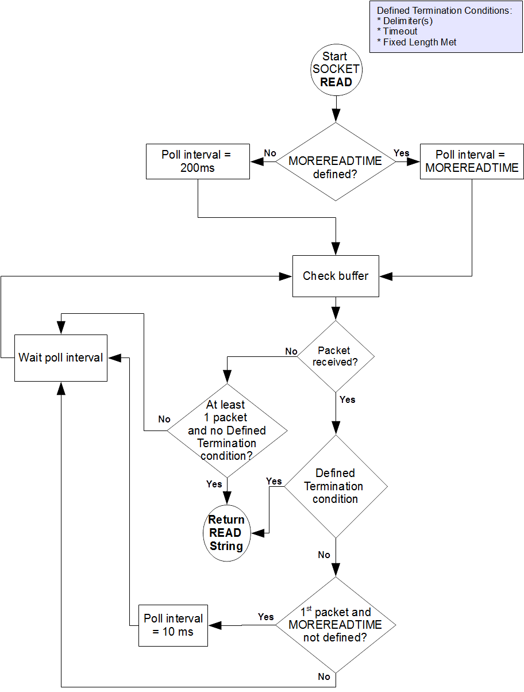

9. Input/Output Processing¶
Contents
This chapter describes the following topics which relate to input and output processing:
Input/Output Intrinsic Special Variables, and their Maintenance : YottaDB provides several intrinsic special variables that allow processes to examine, and in some cases change, certain aspects of the input/output (I/O) processing. The focus in this chapter is how YottaDB handles the standard ones, such as $IO, $X, $Y, and those that are YottaDB-specific (for example, $ZA, $ZB).
Input/Output Devices: Each device type supported by YottaDB responds to a particular subset of deviceparameters, while ignoring others. Devices may be programmed in a device-specific manner, or in a device-independent manner. This chapter discusses each device type, and provides tables of their deviceparameters.
Input/Output Commands and their Deviceparameters: YottaDB bases its I/O processing on a simple character stream model. YottaDB does not use any pre-declared formats. This chapter describes the YottaDB I/O commands OPEN, USE, READ, WRITE, and CLOSE.
OPEN, USE, and CLOSE commands accept deviceparameters, which are keywords that permit a YottaDB program to control the device state. Some deviceparameters require arguments. The current ANSI standard for YottaDB does not define the deviceparameters for all devices. This chapter includes descriptions of the YottaDB deviceparameters in the sections describing each command.
Note
The term “device” can refer to an entity manipulated by application code using Open, Use, Close, Read and Write commands as well as a device from the perspective of the operating system. We endeavor to always make it clear from the context which meaning is intended.
I/O Intrinsic Special Variables¶
YottaDB intrinsic special variables provide a means for application code to communicate and manage the state of a device.
Device Name Variables¶
YottaDB provides three intrinsic special variables that identify devices.
$IO¶
$I[O] contains the name of the current device specified by the last USE command. A SET command cannot modify $IO. USE produces the same $IO as USE $PRINCIPAL, but $P is the preferred construct.
$PRINCIPAL¶
A process inherits three open file descriptors from its parent - STDIN, STDOUT and STDERR - which can all map to different files or devices. YottaDB provides no way for M application to access STDERR. Although STDIN and STDOUT may map to different devices, files, sockets, pipes, etc. in the operating system, M provides for only device $PRINCIPAL, to refers to both. At process startup, and when $PRINCIPAL is selected with a USE command, READ commands apply to STDIN and WRITE commands apply to STDOUT. The device type of the standard input determines which USE deviceparameters apply to $PRINCIPAL.
For an interactive process, $PRINCIPAL is the user’s terminal. YottaDB ignores a CLOSE of the principal device. YottaDB does not permit a SET command to modify $PRINCIPAL.
0 is an alternate for $PRINCIPAL (for example, USE 0). YottaDB recommends that application code use $PRINCIPAL. The environment variable ydb_principal can be used to set a string reported by YottaDB for $PRINCIPAL and which can be used in lieu of $PRINCIPAL for the USE command.
$ZIO¶
$ZIO contains the translated name of the current device, in contrast to $IO, which contains the name as specified by the USE command.
Cursor Position Variables¶
YottaDB provides two intrinsic special variables for determining the virtual cursor position. $X refers to the current column, while $Y refers to the current row.
$X¶
$X contains an integer value ranging from 0 to 65,535, specifying the horizontal position of a virtual cursor in the current output record. $X=0 represents the initial position on a new record or row.
Every OPENed device has a $X. However, YottaDB only has access to $X of the current device.
Generally, in M mode YottaDB increments $X for every character written to and read from the current device; see below for behavior of a UTF-8 mode device. YottaDB format control characters, FILTER, and the device WIDTH and WRAP also have an effect on $X.
As $X is only a counter to help a program track output, SET $X does not reposition the cursor or perform any other IO. Conversely, if a sequence of characters sent to a terminal or other device with a WRITE causes it to be repositioned except as described below, $X will not reflect this change.
$Y¶
$Y contains an integer value ranging from 0 to 65,535, specifying the vertical position of a virtual cursor in the current output record. $Y=0 represents the top row or line.
Every OPEN device has a $Y. However, YottaDB only accesses $Y of the current device.
When YottaDB finishes the logical record in progress, it generally increments $Y. YottaDB recognizes the end of a logical record when it processes certain YottaDB format control characters, or when the record reaches its maximum size, as determined by the device WIDTH, and the device is set to WRAP. The definition of “logical record” varies from device to device. For an exact definition, see the sections on each device type. FILTER and the device LENGTH also have an effect on $Y.
As $Y is only a counter to help a program track output, SET $Y does not reposition the cursor or perform any other IO. Conversely, if a sequence of characters sent to a terminal or other device with a WRITE causes it to be repositioned except as described below, $Y will not reflect this change.
Maintenance of $X and $Y¶
The following factors affect the maintenance of the virtual cursor position ($X and $Y):
The bounds of the virtual “page”
Format control characters
YottaDB character filtering
Each device has a WIDTH and a LENGTH that define the virtual “page.” The WIDTH determines the maximum size of a record for a device, while the LENGTH determines how many records fit on a page. YottaDB starts a new record when the current record size ($X) reaches the maximum WIDTH and the device has WRAP enabled. When the current line ($Y) reaches the maximum LENGTH, YottaDB starts a new page.
YottaDB has several format control characters (used in the context of a WRITE command) that allow the manipulation of the virtual cursor. For all I/O devices, the YottaDB format control characters do the following:
! Sets $X to zero (0) and increments $Y, and terminates the logical record in progress. The definition of “logical record” varies from device to device, and is discussed in each device section.
# Sets $X and $Y to zero (0), and terminates the logical record in progress.
?n If n is greater than $X, writes n-$X spaces to the device, bringing $X to n. If n is less than or equal to $X, ?n has no effect. When WRAP is enabled and n exceeds the WIDTH of the line, WRITE ?n increments $Y and sets $X equal to n#WIDTH, where # is the YottaDB modulo operator.
In UTF-8 mode, YottaDB maintains $X in the following measurement units:
Devices |
Input |
Output |
|---|---|---|
FIFO |
code points |
display columns |
PIPE |
code points |
display columns |
SD |
code points |
display columns |
SOC |
code points |
code points |
TRM |
display columns |
display columns |
YottaDB provides two modes of character filtering. When filtering is enabled, certain <CTRL> characters and/or escape sequences have special effects on the cursor position (for example, <BS> (ASCII 8) may decrement $X, if $X is non-zero). For more information on write filtering, refer to FILTER.
Status Variables¶
$DEVICE¶
If the last commanded resulted in no error-condition, the value of $DEVICE, when interpreted as a truth-value is 0 (FALSE). If the status of the device reflects an error-condition, the value of $DEVICE, when interpreted as a truth-value is 1 (TRUE). When $DEVICE starts with 1, it is followed by a comma (,) and then by the text that would be in $ZSTATUS at the time of the error.
Examples:
0 indicates for READ with a zero (0) timeout that the available data has been read.
“1 , Device detected EOF” indicates the device reached an end-of-file condition.
$KEY¶
$K[EY] contains the string that terminated the most recent READ command from the current device (including any introducing and terminating characters). If no READ command is issued to the current device or if no terminator is used, the value of $KEY is an empty string.
For PIPE devices:
$KEY contains the UNIX process id of the created process shell which executes the command connected to the PIPE.
For SOCKET devices:
$KEY includes information about a new socket in the form of CONNECT|handle|<address> where <address> is the IP address for TCP sockets and path for LOCAL sockets. Read more about Socket Device Operation.
As an OPEN deviceparameter: For LISTEN, $KEY is set to the format of “LISTENING|<socket_handle>|{<portnumber>|</path/to/LOCAL_socket>}” when listening for a connection is successful. Otherwise, $KEY is assigned the empty string. Read more about LISTEN deviceparameter.
$ZA¶
$ZA contains the status of the last read on the device. The value is a decimal integer with a meaning as follows:
For Terminal I/O:
0: Indicates normal termination of a read operation
1: Indicates a parity error
2: Indicates the terminator sequence was too long
9: Indicates a default for all other errors
For Sequential Disk :
0: Indicates normal termination of a read operation
9: Indicates a failure of a read operation
For FIFO:
0: Indicates normal termination or time out
9: Indicates a failure of a read operation
For SOCKET:
0: Indicates normal termination or time out
9: Indicates failure of a read operation
For PIPE:
0: Indicates normal termination or time out when using READ x:n, where n >0
9: Indicates failure of a READ x or READ x:n, where n>0
9: Indicates failure of a WRITE where the pipe is full and the WRITE would block
Note
$ZA refers to the status of the current device. Therefore, exercise care in sequencing USE commands and references to $ZA.
$ZB¶
$ZB contains a string specifying the input terminator for the last terminal READ. $ZB is null, and it is not maintained for devices other than terminals. $ZB may contain any legal input terminator, such as <CR> (ASCII 13) or an escape sequence starting with <ESC> (ASCII 27), from zero (0) to 15 bytes in length. $ZB is null for any READ terminated by a timeout or any fixed-length READ terminated by input reaching the maximum length.
$ZB contains the actual character string, not a sequence of numeric ASCII codes.
If a device is opened with CHSET set to UTF-8 or UTF-16*, $ZB contains the bad character if one is encountered. This holds true for sockets, sequential files (and thus FIFOs and PIPEs) and terminals.
Example:
set zb=$zb for i=1:1:$length(zb) write !,i,?5,$ascii(zb,i)
This example displays the series of ASCII codes for the characters in $ZB.
$ZB refers to the last READ terminator of the current device. Therefore, be careful when sequencing USE commands and references to $ZB.
$ZEOF¶
$ZEOF contains a truth-valued expression indicating whether the last READ operation reached the end-of-file. $ZEOF is TRUE(1) at EOF and FALSE (0) at other positions. YottaDB does not maintain $ZEOF for terminal devices.
$ZEOF refers to the end-of-file status of the current device. Therefore, be careful when sequencing USE commands and references to $ZEOF.
$ZEOF is set for terminals if the connection dropped on read.
$ZPIN¶
When $PRINCIPAL has different input/output devices, the USE command recognizes intrinsic special variable $ZPIN to apply appropriate deviceparameters to the input side of $PRINCIPAL. A USE with $ZPIN sets $IO to $PRINCIPAL for READs and WRITEs from the input and output side of $PRINCIPAL. $ZSOCKET() also accepts $ZPIN as its first argument and, if the device is a split SOCKET device, supplies information on the input SOCKET device. In any context other than USE or $ZSOCKET(), or if $PRINCIPAL is not a split device, $PRINCIPAL, $ZPIN and $ZPOUT are synonyms. In the case of a split $PRINCIPAL, $ZPIN returns the value of $PRINCIPAL followed by the string “< /” Any attempt to OPEN $ZPIN results in a DEVOPENFAIL error.
$ZPOUT¶
When $PRINCIPAL has different input/output devices, the USE command recognizes intrinsic special variables $ZPOUT to apply appropriate deviceparameters to the output side of $PRINCIPAL. A USE with $ZPOUT sets $IO to $PRINCIPAL for READs and WRITEs from the input and output side of $PRINCIPAL. $ZSOCKET() also accepts $ZPOUT as its first argument and, if the device is a split SOCKET device, supplies information on the output SOCKET device. In any context other than USE or $ZSOCKET(), or if $PRINCIPAL is not a split device, $PRINCIPAL, $ZPIN and $ZPOUT are synonyms. In the case of a split $PRINCIPAL, $ZPOUT returns the value of $PRINCIPAL followed by the string “> /” Any attempt to OPEN $ZPOUT results in a DEVOPENFAIL error.
I/O Devices¶
Each device type supported by YottaDB responds to a particular subset of deviceparameters, while ignoring others. Devices may be programmed in a device-specific manner, or in a device-independent manner. Device-specific I/O routines are intended for use with only one type of device. Device-independent I/O routines contain appropriate deviceparameters for all devices to be supported by the function, so the user can redirect to a different device output while using the same program.
YottaDB supports the following I/O device types:
Terminals and Printers
Sequential Disk Files
FIFOs
Null Devices
Socket Devices
PIPE Devices
I/O Device Recognition¶
YottaDB OPEN, USE, and CLOSE commands have an argument expression specifying a device name.
During an OPEN, YottaDB attempts to resolve the specified device names to physical names. When YottaDB successfully resolves a device name to a physical device, that device becomes the target of the OPEN. If the device name contains a dollar sign ($), YottaDB attempts an environment variable translation; the result becomes the name of the device. If it does not find such an environment variable, it assumes that the dollar sign is a part of the filename, and opens a file by that name.
Note
YottaDB resolves the device name argument for menemonicspace devices (SOCKET or PIPE) to a arbitrary handle instead of a physical name.
Once a device is OPEN, YottaDB establishes an internal correspondence between a name and the device or file. Therefore, while the device is OPEN, changing the translation of an environment variable in the device specification does not change the device.
The following names identify the original $IO for the process:
$PRINCIPAL
0
Device Specification Defaults¶
YottaDB uses standard filenames for device specifiers.
The complete format for a filename is:
/directory/file
If the expression specifying a device does not contain a complete filename, the expression may start with an environment variable that translates to one or more leading components of the filename. YottaDB applies default values for the missing components.
If the specified file is not found, it is created unless READONLY is specified.
The YottaDB filename defaults are the following:
Directory: Current working directory
File: No default (user-defined filename)
Filetype: No default (user-defined filetype)
How I/O Device Parameters Work¶
I/O deviceparameters either perform actions that cause the device to do something (for example, CLEARSCREEN), or specify characteristics that modify the way the device subsequently behaves (for example, WIDTH). When an I/O command has multiple action deviceparameters, YottaDB performs the actions in the order of the deviceparameters within the command argument. When a command has characteristic deviceparameters, the last occurrence of a repeated or conflicting deviceparameter determines the characteristic.
Deviceparameters often relate to a specific device type. YottaDB ignores any deviceparameters that do not apply to the type of the device specified by the command argument. Specified device characteristics are in force for the duration of the YottaDB image, or until modified by an OPEN, USE, or CLOSE command.
When reopening a device that it previously closed, a YottaDB process restores all characteristics not specified on the OPEN to the values the device had when it was last CLOSEd. YottaDB treats FIFO, PIPE, and SD differently and uses defaults for unspecified device characteristics on every OPEN (that is, YottaDB does not retain devices characteristics on a CLOSE of SD, FIFO, and PIPE).
The ZSHOW command with an argument of “D” displays the current characteristics for all devices OPENed by the process. ZSHOW can direct its output into a YottaDB variable. For more information on ZSHOW, refer to ZSHow.
Abbreviating Device Parameters¶
Note
Most Z* deviceparameters have the same functionality as their counterparts and are supported for compatibility reasons.
YottaDB deviceparameters do not have predefined abbreviations. YottaDB recognizes deviceparameters using a minimum recognizable prefix technique. Most deviceparameters may be represented by four leading characters, except ERASELINE, all deviceparameters starting with WRITE, and Z* deviceparameters in a mnemonicspace (such as SOCKET). The four leading characters recognized do not include a leading NO for negation.
For compatibility with previous versions, YottaDB may recognize certain deviceparameters by abbreviations shorter than the minimum. While it is convenient in Direct Mode to use shorter abbreviations, YottaDB may add additional deviceparameters, and therefore, recommends all programs use at least four characters. Because YottaDB compiles the code, spelling out deviceparameters completely has no performance penalty, except when used with indirection or XECUTEd arguments.
Document Conventions¶
This chapter uses the following mnemonics to describe when a deviceparameter applies:
TRM: Valid for terminals
SD: Valid for sequential disk files
FIFO: Valid for FIFOs
NULL: Valid for null devices
SOC: Valid for both socket devices (TCP and LOCAL)
SOC(LOCAL): Valid for LOCAL sockets devices
SOC(TCP): Valid for TCP sockets devices
PIPE: Valid for PIPE devices
Note
Lower case “pipe” refers to a UNIX pipe and the upper case “PIPE” to the YottaDB device.
Some of the deviceparameter defaults shown are the basic operating system defaults, and may be subject to modification before the invocation of YottaDB.
Device-Independent Programming¶
When a user may choose a device for I/O, YottaDB routines can take one of two basic programming approaches.
The user selection directs the program into different code branches, each of which handles a different device type.
The user selection identifies the device. There is a single code path written with a full complement of deviceparameters to handle all selectable device types.
The latter approach is called device-independent programming. To permit device independent programming, YottaDB uses the same deviceparameter for all devices that have an equivalent facility, and ignores deviceparameters applied to a device that does not support that facility.
Example:
OPEN dev:(EXCE=exc:REWIND:VARIABLE:WRITEONLY)
This example OPENs a device with deviceparameters that affect different devices. The EXCEPTION has an effect for all device types. When dev is a terminal or a null device, YottaDB ignores the other deviceparameters. When dev is a sequential file on disk, YottaDB uses REWIND and VARIABLE. This command performs a valid OPEN for all the different device types.
Using Terminals¶
A YottaDB process assigns $PRINCIPAL to the UNIX standard input of the process (for READ) and standard output (for WRITE). For a local interactive process, $PRINCIPAL identifies the “terminal” from which the user is signed on.
While all terminals support the CTRAP deviceparameter, only $PRINCIPAL supports CENABLE. While CTRAP allows terminal input to redirect program flow, CENABLE allows the terminal user to invoke the Direct Mode.
Directly connected printers often appear to YottaDB as a terminal (although printers generally do not provide input) regardless of whether the printer is connected to the computer with a high speed parallel interface, or an asynchronous terminal controller.
Setting Terminal Characteristics¶
YottaDB does not isolate its handling of terminal characteristics from the operating system environment at large. YottaDB inherits the operating system terminal characteristics in effect at the time the YottaDB image is invoked. When YottaDB exits, the terminal characteristics known by the operating system are restored.
However, if the process temporarily leaves the YottaDB environment with a ZSYSTEM command , YottaDB does not recognize any changes to the terminal characteristics left by the external environment. This may cause disparities between the physical behavior of the terminal, and the perceived behavior by YottaDB.
UNIX enforces standard device security for explicit OPENs of terminals other than the sign-in terminal ($PRINCIPAL). If you are unable to OPEN a terminal, contact your system manager.
USE of a terminal causes the device driver to flush the output buffer. This feature of the USE command provides routine control over the timing of output, which is occasionally required. However, it also means that redundant USE commands may induce an unnecessary performance penalty. Therefore, YottaDB recommends restricting USE commands to redirecting I/O, modifying deviceparameters, and initiating specifically required flushes.
The terminal input buffer size is fixed at 1024 on UNIX and a variable read terminates after 1023 characters.
Setting the Environment Variable TERM
The environment variable $TERM must specify a terminfo entry that accurately matches the terminal (or terminal emulator) settings. Refer to the terminfo man pages for more information on the terminal settings of the platform where YottaDB needs to run.
Some terminfo entries may seem to work properly but fail to recognize function key sequences or position the cursor properly in response to escape sequences from YottaDB. YottaDB itself does not have any knowledge of specific terminal control characteristics. Therefore, it is important to specify the right terminfo entry to let YottaDB communicate correctly with the terminal. You may need to add new terminfo entries depending on their specific platform and implementation. The terminal (emulator) vendor may also be able to help.
YottaDB uses the following terminfo capabilities. The full variable name is followed by the capname in parenthesis:
auto_right_margin(am), clr_eos(ed), clr_eol(el), columns(cols), cursor_address(cup), cursor_down(cud1),cursor_left(cub1), cursor_right(cuf1), cursor_up(cuu1), eat_newline_glitch(xenl), key_backspace(kbs), key_dc(kdch1),key_down(kcud1), key_left(kcub1), key_right(kcuf1), key_up(kcuu1), key_insert(kich1), keypad_local(rmkx),keypad_xmit(smkx), lines(lines).
YottaDB sends keypad_xmit before terminal reads for direct mode and READs (other than READ *) if EDITING is enabled. YottaDB sends keypad_local after these terminal reads.
Logical Records for Terminals¶
A logical record for a terminal equates to a line on the physical screen. The WIDTH device characteristic specifies the width of the screen, while the LENGTH device characteristic specifies the number of lines on the screen.
Read * Command for Terminals¶
If the terminal has ESCAPE sequencing enabled, and the input contains a valid escape sequence or a terminator character, YottaDB stores the entire sequence in $ZB and returns the ASCII representation of the first character.
Example:
YDB>kill
YDB>use $principal:escape
YDB>read *x set zb=$zb zwrite
(Press the F11 key on the VT220 terminal keyboard)
x=27
zb=$C(27)_"[23~"
This enters an escape sequence in response to a READ *. The READ * assigns the code for <ESC> to the variable X. YottaDB places the entire escape sequence in $ZB. As some of the characters are not graphic, that is, visible on a terminal, the example transfers the contents of $ZB to the local variable ZB and uses a ZWRITE so that the non-graphic characters appear in $CHAR() format.
When escape processing is disabled, READ *x returns 27 in x for an <ESC>. If the escape introducer is also a TERMINATOR, $ZB has a string of length one (1), and a value of the $ASCII() representation of the escape introducer; otherwise, $ZB holds the empty string. YottaDB stores the remaining characters of the escape sequence in the input stream. A READ command following a READ * command returns the remaining characters of the escape sequence.
Example:
YDB>kill
YDB>use $principal:(noescape:term=$char(13))
YDB>read *x set zb=$zb read y:0 zwrite
(Press the F11 key on the terminal keyboard)
[23~x=27
y="[23~"
zb=""
YDB>use $principal:noecho read *x set zb=$zb read y:0 use $principal:echo zwrite
x=27
y="[23~"
zb=""
YDB>read *x set zb=$zb use $principal:flush read y:0 zwrite
x=27
y=""
zb=""
While the first READ Y:0 picks up the sequence after the first character, notice how the graphic portion of the sequence appears on the terminal – this is because the READ *X separated the escape character from the rest of the sequence thus preventing the terminal driver logic from recognizing it as a sequence, and suppressing its echo. The explicit suppression of echo removes this visual artifact. In the case of the final READ *X, the FLUSH clears the input buffer so that it is empty by the time of the READ Y:0.
READ X#maxlen Command for Terminals¶
Generally, YottaDB performs the same maintenance on $ZB for a READ X#maxlen as for a READ. However, if the READ X#maxlen terminates because the input has reached the maximum length, YottaDB sets $ZB to null. When the terminal has ESCAPE sequencing enabled, and the input contains an escape sequence, YottaDB sets $ZB to contain the escape sequence.
Terminal Deviceparameter Summary¶
The following tables provide a brief summary of deviceparameters for terminals, grouped into related areas. For detailed information, refer to Open, USE, and CLOSE.
Error Processing Deviceparameters
Device Parameter |
Command |
Comment |
|---|---|---|
EXCEPTION=expr |
O/U/C |
Controls device-specific error handling. |
Interaction Management Deviceparameters
Device Parameter |
Command |
Comment |
|---|---|---|
[NO]CENABLE |
U |
Controls whether <CTRL-C> on $PRINCIPAL causes YottaDB to go to direct mode. |
CTRAP=expr |
U |
Controls vectoring on trapped <CTRL> characters. |
[NO]EDITING |
U |
Controls the editing mode for $PRINCIPAL. |
[NO]EMPTERM |
U |
Control whether an “Erase” character on an empty input line should terminate a READ or READ # command. |
[NO]ESCAPE |
U |
Controls escape sequence processing. |
[NO]INSERT |
U |
Controls insert or overstrike on input. |
[NO]PASTHRU |
U |
Controls interpretation by the operating system of special control characters (for example <CTRL-B>). |
[NO]TERMINATOR[=expr] |
U |
Controls characters that end a READ |
Flow Control Deviceparameters
Device Parameter |
Command |
Comment |
|---|---|---|
[NO]CONVERT |
U |
Controls forcing input to uppercase. |
[NO]FILTER |
U |
Controls some $X, $Y maintenance. |
FLUSH |
U |
Clears the typeahead buffer. |
[NO]HOSTSYNC |
U |
Controls host’s use of XON/XOFF. |
[NO]READSYNC |
U |
Controls wrapping READs in XON/XOFF. |
[NO]TTSYNC |
U |
Controls input response to XON/XOFF. |
[NO]TYPEAHEAD |
U |
Controls unsolicited input handling. |
Screen Management Deviceparameters
Device Parameter |
Command |
Comment |
|---|---|---|
CLEARSCREEN |
U |
Clears from cursor to end-of-screen. |
DOWNSCROLL |
U |
Moves display down one line. |
[NO]ECHO |
U |
Controls the host echo of input. |
ERASELINE |
U |
Clears from cursor to end-of-line. |
[Z]LENGTH=intexpr |
U |
Controls maximum number of lines on a page ($Y). |
UPSCROLL |
U |
Moves display up one line. |
[Z]WIDTH=intexpr |
U |
Controls the maximum width of an output line ($X). |
[Z][NO]WRAP |
U |
Controls handling of output lines longer than the maximum width. |
X=intexpr |
U |
Positions the cursor to column intexpr. |
Y=intexpr |
U |
Positions the cursor to row intexpr. |
O : Applies to the OPEN command
U : Applies to the USE command
C : Applies to the CLOSE command
Terminal Examples¶
This section contains examples of YottaDB terminal handling.
Example:
use $principal:(exception="zg "_$zl_":C^MENU")
This example USEs the principal device, and sets up an EXCEPTION handler. When an error occurs, it transfers control to label C in the routine ^MENU at the process stack level where the EXCEPTION was established.
Example:
use $principal:(x=0:y=0:clearscreen)
This example positions the cursor to the upper left-hand corner and clears the entire screen.
Example:
use $principal:(noecho:width=132:wrap)
This example disables ECHOing, enables automatic WRAPping, and sets the line width to 132 characters.
Note that YottaDB enables WRAP automatically when you specify the WIDTH deviceparameter.
Example:
use $principal:nocenable
This example disables <CTRL-C>.
M Read Editing¶
An editing capability similar to that available at the direct mode prompt exists for the READ statement when reading from the $PRINCIPAL device if that device is a terminal. In addition to the functions currently available in direct mode, it is possible to select whether characters typed other than at the end of the current input will overwrite existing characters (overwrite mode) or be inserted at the cursor as is the case currently (insert mode). Only the previous input may be recalled during a READ unlike the multiple lines available during direct mode.
The default EDITING and INSERT modes can be specified with an environment variable. Unless these features are enabled, the current functionality, which provides no line editing during M READ and insert mode during direct mode, will be retained.
Like the direct mode line editing functions, the proper functioning of editing for READ depends on setting the TERM environment variable to select a terminfo entry which matches the terminal (or terminal emulator) settings. There are some terminfo entries that may seem to work but which will fail to properly recognize function key sequences or fail to properly position the cursor in response to escape sequences from YottaDB. YottaDB itself does not have any knowledge of specific terminal functions. In some cases, new terminfo entries may need to be added. The terminfo man pages for the specific platform should be consulted for the details if this is needed. The terminal (emulator) manufacturer may be able to help.
User Interface¶
Editing Functions
Editing Function |
Key / Character |
Direct Mode Difference |
|---|---|---|
Delete character to left of cursor |
Backspace character (ASCII 8) is also recognized. |
|
Move left one character |
Left arrow key or <ctrl> B character |
- |
Move right one character |
Right arrow key or <ctrl> F character |
- |
Insert/overstrike toggle within a direct mode line or READ argument |
Insert key |
Not previously available in direct mode |
Recall previous input string |
Up Arrow key |
Multiple lines can be scrolled through using both up and down arrow keys |
Erase entire text to left of cursor |
<ctrl>-U character (erases entire line) |
- |
Position cursor at start of line |
<ctrl>-A character |
- |
Position cursor at end of line |
<ctrl>-E character |
- |
Deletes all characters from the cursor to the end of the line |
<ctrl>-K character |
- |
Delete character at the cursor position |
<ctrl>-D character |
- |
USE Device Parameters¶
[NO]EDITING
Applies to : TRM
When EDITING mode is enabled for the $PRINCIPAL device, the use of the left and right cursor movement keys and certain <CTRL> characters are allowed within the current input line. The last input can be recalled using the up or down arrow key. The editing functions are the same as during direct mode command input as described in the “Line Editing” section of the “Operating & Debugging in Direct Mode” chapter except backspace is not treated the same as the erase character from termcap which is usually delete (ASCII 127).
When EDITING mode is enabled, escape sequences do not terminate READs.
Enabling PASTHRU mode supersedes EDITING mode.
NOECHO disables EDITING mode.
If any of the EDITING <CTRL> characters are in the CTRAP list, their editing functions will not be available since CTRAP takes precedence. However the EDITING <CTRL> characters will take precedence over the TERMINATOR list.
By default, EDITING mode is disabled.
Note
M READ EDITING depends on the values of $X and $Y being correct. If the application sends its own escape sequences or control characters, which change the cursor position, it must properly update $X and $Y before doing a M READ with EDITING enabled to ensure correct formatting during input.
[NO]INSERT
Applies to : TRM
Enables or disables insert mode for the $PRINCIPAL device. When a terminal has INSERT mode enabled, input characters are inserted at the logical position in the input stream designated by the cursor, for example in the middle of the line/record. When a terminal has INSERT mode disabled, input characters overwrite existing characters in the input stream at the logical position designated by the cursor. The insert mode can be toggled within a direct mode line or if EDITING is enabled, a single READ argument’s input using the terminal’s INSERT key. The INSERT mode is reset to the default or what was last specified with USE at the beginning of each direct mode line or READ argument.
By default, INSERT mode is enabled.
OVERSTRIKE
Applies to : TRM
Disables INSERT mode for a terminal. OVERSTRIKE is a synonym for NOINSERT.
By default, INSERT mode is enabled.
[NO]ECHO
Applies to: TRM
Disabling ECHO disables the EDITING functions and any input is not available for later recall.
[NO]PASTHRU
Applies to: TRM
PASTHRU supersedes line editing.
Environment Variable¶
By defining the environment variable “ydb_principal_editing”, the defaults for EDITING and INSERT modes can be changed for the $PRINCIPAL device when it is a terminal. The value of the variable can be [NO]EDITING and/or [NO]INSERT. If both modes are specified they should be separated by a colon (i.e. “:”) and can be in any order.
Examples:
ydb_principal_editing=”NOINSERT:EDITING”
export ydb_principal_editing
ydb_principal_editing=”EDITING”
export ydb_principal_editing
Direct Mode Editing¶
When entering commands at the direct mode prompt, the insert mode can be toggled for that line by using the insert key. When YottaDB starts, insert mode is enabled unless the value of the ydb_principal_editing environment variable includes the string NOINSERT. If insert mode is disabled or enabled for the $PRINCIPAL device by a USE statement before returning to direct mode, it will remain disabled or enabled at direct mode. The insert mode can be toggled within a direct mode line using the terminal’s INSERT key.
ZSHOW “D”¶
When EDITING mode is enabled or INSERT mode is disabled, the ZSHOW “D” output for the $PRINCIPAL device will include this information.
Example:
YDB>zshow “D”
/dev/pts/4 OPEN TERMINAL NOPAST NOESCA NOREADS TYPE WIDTH=80 LENG=24 EDIT NOINSE
Using Sequential Files¶
YottaDB provides access to sequential files. These files allow linear access to records. Sequential files are used to create programs, store reports, and to communicate with facilities outside of YottaDB.
Setting Sequential File Characteristics¶
The ANSI standard specifies that when a process CLOSEs and then reOPENs a device, YottaDB restores any characteristics not explicitly specified with deviceparameters to the values they had prior to the last CLOSE. However, because it is difficult for a large menu-driven application to ensure the previous OPEN state, YottaDB always sets unspecified sequential file characteristics to their default value on OPEN. This approach also reduces potential memory overhead imposed by OPENing and CLOSEing a large number of sequential files during the life of a process.
YottaDB does not restrict multiple OPEN commands. However, if a file is already open, YottaDB ignores attempts to modify sequential file OPEN characteristics, except for RECORDSIZE and for deviceparameters that also exist for USE.
Sequential files can be READONLY, or read/write (NOREADONLY).
Sequential files can be composed of either FIXED or VARIABLE (NOFIXED) length records. By default, records have VARIABLE length.
UNIX enforces its standard security when YottaDB OPENs a sequential file. This includes any directory access required to locate or create the file. If you are unable to OPEN a file, contact your system manager.
Sequential File Pointers¶
Sequential file I/O operations use a construct called a file pointer. The file pointer logically identifies the next record to read or write. OPEN commands position the file pointer at the beginning of the file (REWIND) or at the end-of-file (APPEND). APPEND cannot reposition a file currently open. Because the position of each record depends on the previous record, a WRITE destroys the ability to reliably position the file pointer to subsequent records in a file. Therefore, by default (NOTRUNCATE), YottaDB permits WRITEs only when the file pointer is positioned at the end of the file.
A file that has been previously created and contains data that should be retained can also be opened with the device parameter APPEND.
If a device has TRUNCATE enabled, a WRITE issued when the file pointer is not at the end of the file causes all contents after the current file pointer to be discarded. This effectively moves the end of the file to the current position and permits the WRITE.
Line Terminators¶
LF ($CHAR(10)) terminates the logical record for all M mode sequential files, TRM, PIPE, and FIFO. For non FIXED format sequential files and terminal devices for which character set is not M, all the standard Unicode® line terminators terminate the logical record. These are U+000A (LF), U+0000D (CR), U+000D followed by U+000A (CRLF), U+0085 (NEL), U+000C (FF), U+2028 (LS) and U+2029 (PS).
READ/WRITE Operations¶
The following table describes all READ and WRITE operations for STREAM, VARIABLE, and FIXED format sequential files having automatic record termination enabled (WRAP) or disabled (NOWRAP).
Command |
WRAP or NOWRAP |
STREAM or VARIABLE format file behavior |
FIXED format file behavior |
|---|---|---|---|
READ format or WRITE or WRITE * |
WRAP |
Write the entire argument, but anytime $X is about to exceed WIDTH: insert a <LF> character, set $X to 0, increment $Y |
Similar to VARIABLE but no <LF> |
READ format or WRITE or WRITE * |
NOWRAP |
Update $X based on STREAM or VARIABLE format as described below: STREAM: Write all of the argument with no truncation nor with a line terminator being inserted. Add length of argument to $X. VARIABLE ($X=WIDTH): Write up to WIDTH-$X characters. Write no more output to the device until a WRITE ! or a SET $X makes $X less than WIDTH. |
Same as VARIABLE |
READ or WRITE ! |
either |
Write <LF>, set $X to 0, increment $Y |
Write PAD bytes to bring the current record to WIDTH |
WRITE # |
either |
Write <FF>,<LF>, set $X to 0, increment $Y |
Write PAD bytes to bring the current record to WIDTH, then a <FF> followed by WIDTH-1 PAD bytes |
CLOSE |
either |
After a WRITE, if $X > 0, Write <LF> |
After a WRITE, if $X >0, perform an implicit “WRITE !” adding PAD bytes to create a full record. If you need to avoid trailing PAD bytes set $X to 0 before closing a FIXED format file. |
READ X |
either |
Return characters up to $X=WIDTH, or until encountering an <LF> or EOF. If <LF> encountered, set $X to 0, increment $Y |
Return WIDTH characters; no maintenance of $X and $Y, except that EOF increments $Y |
READ X#len |
either |
Return characters up to the first of $X=WIDTH or len characters, or encountering a <LF> or EOF; if up to len characters or EOF update $X, otherwise set $X to 0 and increment $Y |
Return MIN(WIDTH, len) characters; no maintenance of $X and $Y, except that EOF increments $Y |
READ *X |
either |
Return the code for one character and increment $X, if WIDTH=$X or <LF> encountered, set $X=0, increment $Y; if EOF return -1 |
Return the code for one character, if EOF return -1; no maintenance of $X and $Y, except that EOF increments $Y |
Notes
EOF == end-of-file; <FF>== ASCII form feed; <LF> == ASCII line feed;
In M mode, and by default in UTF-8 mode PAD == <SP> == ASCII space.
“READ format” in this table means READ ? or READ <strlit>
A change to WIDTH implicitly sets WRAP unless NOWRAP follows in the deviceparameter list
In VARIABLE and STREAM mode, READ (except for READ *) never returns <LF> characters
In M mode, the last setting of RECORDSIZE or WIDTH for the device determines WIDTH
In M Mode, a WRITE to a sequential device after setting $X to a value greater than the device WIDTH or a reducing WIDTH to less than the current $X acts as if the first character caused $X to exceed the WIDTH induces an immediate WRAP, if WRAP is enabled
In UTF-8 mode, RECORDSIZE is in bytes and WIDTH is in characters and the smaller acts as the WIDTH limit in the table.
In UTF-8 mode, FIXED mode writes <SP> to the RECORDSIZE when the next character won’t fit.
In UTF-8 mode, all READ forms do not return trailing PAD characters.
In UTF-8 mode, all characters returned by all forms of FIXED mode READ are from a single record.
WRITE for a Sequential Disk (SD) device works at the current file position, whether attained with APPEND, REWIND or SEEK.
YottaDB manages any BOM for UTF mode files by ensuring they are at the beginning of the file and produces a BOMMISMATCH error for an attempt to change the byte-ordering on OPEN for an existing file.
An attempt to OPEN a non-zero length file WRITEONLY without either NEWVERSION or TRUNCATE in UTF mode produces an OPENDEVFAIL due to the fact that any existing BOM information cannot be verified.
Note that with YottaDB SD encryption, because of the state information associated with encryption processing, encrypted files require the file to be WRITEn or READ from the beginning rather than from an arbitrary position.
Writing Binary Files¶
To write a binary data file, open it with FIXED:WRAP:CHSET=”M” and set $X to zero before the WRITE to avoid filling the last record with spaces (the default PAD byte value).
Note
With CHSET not “M”, FIXED has a different definition. Each record is really the same number of bytes as specified by RECORDSIZE. Padding bytes are added as needed to each record.
Example:
bincpy(inname,outname); YottaDB routine to do a binary copy from file named in argument 1 to file named in argument 2
;
new adj,nrec,rsize,x
new $etrap
set $ecode="",$etrap="goto error",$zstatus=""
set rsize=32767 ; max recordsize that keeps $X on track
open inname:(readonly:fixed:recordsize=rsize:exception="goto eof")
open outname:(newversion:stream:nowrap:chset="M")
for nrec=1:1 use inname read x use outname write x
eof
if $zstatus["IOEOF" do quit
. set $ecode=""
. close inname
. use outname
. set adj=$x
. set $x=0 close outname
. write !,"Copied ",$select((nrec-1)<adj:adj,1:((nrec-1)*rsize)+adj)," bytes from ",inname," to ",outname
else use $principal write !,"Error with file ",inname,":"
error
write !,$zstatus
close inname,outname
quit
Sequential File Deviceparameter Summary¶
The following tables provide a brief summary of deviceparameters for sequential files grouped into related areas. For more detailed information, refer to Open, USE, and CLOSE.
Error Processing Deviceparameters
Deviceparameter |
Command |
Comment |
|---|---|---|
EXCEPTION=expr |
O/U/C |
Controls device-specific error handling. |
File Pointer Positioning Deviceparameters
Deviceparameter |
Command |
Comment |
|---|---|---|
APPEND |
O |
Positions file pointer at EOF. |
REWIND |
O/U/C |
Positions file pointer at start of the file. |
SEEK=strexpr |
O/U |
Positions the current file pointer to the location specified in strexpr. The format of strexpr is a string of the form “[+|-]integer” where unsigned value specifies an offset from the beginning of the file, and an explicitly signed value specifies an offset relative to the current file position. For STREAM or VARIABLE format, the positive intexpr after any sign is a byte offset, while for a FIXED format, it is a record offset. In order to deal with the possible presence of a Byte Order Marker (BOM), SEEK for a FIXED format file written in a UTF character set must follow at least one prior READ since the device was created. |
File Format Deviceparameters
Deviceparameter |
Command |
Comment |
|---|---|---|
[NO]FIXED |
O |
Controls whether records have fixed length. |
[Z]LENGTH=intexpr |
U |
Controls virtual page length. |
RECORDSIZE=intexpr |
O |
Specifies maximum record size. |
STREAM |
O |
Specifies the STREAM format. |
VARIABLE |
O |
Controls whether records have variable length. |
[Z]WIDTH=intexpr |
U |
Controls maximum width of an output line. |
[Z][NO]WRAP |
O/U |
Controls handling of records longer than device width. |
File Access Deviceparameters
Deviceparameter |
Command |
Comment |
|---|---|---|
DELETE |
C |
Specifies file be deleted by CLOSE. |
GROUP=expr |
O/C |
Specifies file permissions for other users in the owner’s group. |
NEWVERSION |
O |
Specifies YottaDB create a new version of file. |
OWNER=expr |
O/C |
Specifies file permissions for the owner of file. |
[NO]READONLY |
O |
Controls read-only file access. |
RENAME=expr |
C |
Specifies CLOSE replace name of a disk file with name specified by expression. |
SYSTEM=expr |
O/C |
Specifies file permissions for the owner of the file (same as OWNER). |
[NO]TRUNCATE |
O/U |
Controls overwriting of existing data in file. |
UIC=expr |
O/C |
Specifies file’s owner ID. |
WORLD=expr |
O/C |
Specifies file permissions for users not in the owner’s group. |
O: Applies to the OPEN command
U: Applies to the USE command
C: Applies to the CLOSE command
Sequential File Examples¶
This section contains a few brief examples of YottaDB sequential file handling.
Example:
YDB>do ^FREAD
FREAD;
zprint ^FREAD
read "File > ",sd
set retry=0
set $ztrap="BADAGAIN"
open sd:(readonly:exception="do BADOPEN")
use sd:exception="goto EOF"
for use sd read x use $principal write x,!
EOF;
if '$zeof zmessage +$zstatus
close sd
quit
BADOPEN;
set retry=retry+1
if retry=2 open sd
if retry=4 halt
if $piece($zstatus,",",1)=2 do
. write !,"The file ",sd," does not exist. Retrying in about 2 seconds ..."
. hang 2.1
. quit
if $piece($zstatus,",",1)=13 do
. write !,"The file ",sd," is not accessible. Retrying in about 3 seconds ..."
. hang 3.1
. quit
quit
BADAGAIN;
w !,"BADAGAIN",!
File >
This example asks for the name of the file and displays its contents. It OPENs that file as READONLY and specifies an EXCEPTION. The exception handler for the OPEN deals with file-not-found and file-access errors and retries the OPEN command on error. The first USE sets the EXCEPTION to handle end-of-file. The FOR loop reads the file one record at a time and transfers each record to the principal device. The GOTO in the EXCEPTION terminates the FOR loop. At label EOF, if $ZEOF is false, the code reissues the error that triggered the exception. Otherwise, the CLOSE releases the file.
Example:
YDB>do ^formatACCT
formatACCT;
zprint ^formatACCT;
set sd="temp.dat",acct=""
open sd:newversion
use sd:width=132
for set acct=$order(^ACCT(acct)) quit:acct="" do
. set rec=$$FORMAT(acct)
. write:$y>55 #,hdr write !,rec
close sd
quit
This OPENs a NEWVERSION of file temp.dat. The FOR loop cycles through the ^ACCT global formatting (not shown in this code fragment) lines and writing them to the file. The FOR loop uses the argumentless DO construct to break a long line of code into more manageable blocks. The program writes a header record (set up in initialization and not shown in this code fragment) every 55 lines, because that is the application page length, allowing for top and bottom margins.
FIFO Characteristics¶
FIFOs have most of the same characteristics as other sequential files, except that READs and WRITEs can occur in any order.
The following characteristics of FIFO behavior may be helpful in using them effectively.
With READ:
If a READ is done while there is no data in the FIFO:
The process hangs until data is put into the FIFO by another process, or the READ times out, when a timeout is specified.
The following table shows the result and the values of I/O status variables for different types of READ operations on a FIFO device.
Operation |
Result |
$DEVICE |
$ZA |
$TEST |
X |
$ZEOF |
|---|---|---|---|---|---|---|
READ X:n |
Normal Termination |
0 |
0 |
1 |
DATA READ |
0 |
READ X:n |
Timeout with no data read |
0 |
0 |
0 |
empty string |
0 |
READ X:n |
Timeout with partial data read |
0 |
0 |
0 |
partial data |
0 |
READ X:n |
End of File |
1,Device detected EOF |
9 |
1 |
empty string |
1 |
READ X:0 |
Normal Termination |
0 |
0 |
1 |
DATA READ |
0 |
READ X:0 |
No data available |
0 |
0 |
0 |
empty string |
0 |
READ X:0 |
Timeout with partial data read |
0 |
0 |
0 |
Partial data |
0 |
READ X:0 |
End of File |
1,Device detected EOF |
9 |
1 |
empty string |
1 |
READ X |
Error |
1,<error signature> |
9 |
n/c |
empty string |
0 |
With WRITE:
The FIFO device does non-blocking writes. If a process tries to WRITE to a full FIFO and the WRITE would block, the device implicitly tries to complete the operation up to a default of 10 times. If the ydb_non_blocked_write_retries environment variable is defined, this overrides the default number of retries. If the retries do not succeed (remain blocked), the WRITE sets $DEVICE to “1,Resource temporarily unavailable”, $ZA to 9, and produces an error. If the YottaDB process has defined an EXCEPTION, $ETRAP or $ZTRAP, the error trap may choose to retry the WRITE after some action or delay that might remove data from the FIFO device.
While it is hung, the process will not respond to <CTRL-C>.
With CLOSE:
The FIFO is not deleted unless the DELETE qualifier is specified.
If a process closes the FIFO with the DELETE qualifier, the FIFO becomes unavailable to new users at that time.
All processes currently USEing the FIFO may continue to use it, until the last process attached to it CLOSES it, and is destroyed.
Any process OPENing a FIFO with the same name as a deleted FIFO creates a new one to which subsequent OPENs attach.
The default access permissions on a FIFO are the same as the mask settings of the process that created the FIFO. Use the SYSTEM, GROUP, WORLD, and UIC deviceparameters to specify FIFO access permissions. File permissions have no affect on a process that already has the FIFO open.
Considerations in implementing FIFOs¶
As you establish FIFOs for interprocess communication, consider whether, and how, the following issues will be addressed:
Do READs occur immediately, or can the process wait?
Are timed READs useful to avoid system hangs and provide a way to remove the process?
Does the WRITE process need to know whether the READ data was received?
Will there be multiple processes READing and WRITEing into a single FIFO?
Error Handling for FIFOs¶
Deleting devices (or files) created by an OPEN which has an error has deeper implications when that device, especially a FIFO, serves as a means of communications between a two processes. If one process OPENs a FIFO device for WRITE, there is an interval during which another process can OPEN the same device for READ. During that interval the writer process can encounter an error (for example, an invalid parameter) causing YottaDB to delete the device, but the reader process can complete its OPEN successfully. This sequence results in a process with an orphaned device open for READ. Any other process that OPENs the same device for WRITE creates a new instance of it, so the reader can never find data to READ from the orphaned device. Since YottaDB has insufficient context to enforce process synchronization between reader and writer, the application must use appropriate communication protocols and error handling techniques to provide synchronization between processes using files and FIFOs for communication.
YottaDB Recognition of FIFOs¶
Like a sequential file, the path of a FIFO is specified as an argument expression to the OPEN, USE, and CLOSE commands. A device OPENed with a FIFO deviceparameter becomes a FIFO unless another device of that name is already OPEN. In that case, OPENing a device that has previously been OPENed by another process as a FIFO causes the process (the process here is the process trying to open the FIFO) to attach to the existing FIFO.
Note
If an existing named pipe (fifo special file) is OPENed even without specifying the FIFO deviceparameter, it is treated as if FIFO had been specified.
FIFO Device Examples¶
The following two examples represent a master/slave arrangement where the slave waits in a read state on the FIFO until the master sends it some data that it then processes.
Example:
set x="named.pipe"
open x:fifo
do getres
use x write res,!
This routine opens the FIFO, performs its own processing which includes starting the slave process (not shown in this code fragment).
Example:
set x="named.pipe"
open x:fifo
use x read res
do process(res)
This routine waits for information from the master process, then begins processing.
FIFO Deviceparameter Summary¶
The following table summarizes the deviceparameters that can be used with FIFOs.
File Format Deviceparameters
Deviceparameter |
Command |
Description |
|---|---|---|
[NO]FIXED |
O |
Controls whether records have fixed length. |
[Z]LENGTH=intexpr |
U |
Controls the virtual page length. |
RECORDSIZE=intexpr |
O |
Specifies the maximum record size |
VARIABLE |
O |
Controls whether records have variable length. |
[Z]WIDTH=intexpr |
U |
Sets the device’s logical record size and enables WRAP. |
[Z][NO]WRAP |
O/U |
Controls the handling of records longer than the device width. |
File Access Deviceparameters
Deviceparameter |
Command |
Description |
|---|---|---|
DELETE |
C |
Specifies that the FIFO should be deleted when the last user closes it. If specified on an OPEN, DELETE is activated only at the time of the close. No new attachments are allowed to a deleted FIFO and any new attempt to use a FIFO with the name of the deleted device creates a new device. |
GROUP=expr |
O/C |
Specifies file permissions for other users in owner’s group. |
[NO]READONLY |
O |
OPENs a device for reading only (READONLY) or reading and writing (NOREADONLY). |
OWNER=expr |
O/C |
Specifies file permissions for owner of file. |
RENAME=expr |
C |
Specifies that CLOSE replace the name of a disk file with the name specified by the expression. |
SYSTEM=expr |
O/C |
Specifies file permissions for owner of file (same as OWNER). |
UIC=expr |
O/C |
Specifies the file’s owner ID. |
WORLD=expr |
O/C |
Specifies file permissions for users not in the owner’s group. |
Using NULL Devices¶
Null devices comprise of a collection of system purpose devices that include /dev/null, /dev/zero, /dev/random, and /dev/urandom.
/dev/null returns a null string on READ and sets $ZEOF
/dev/random and /dev/urandom return a random value on READ and set $ZEOF
/dev/zero returns 0’s on READ and does not set $ZEOF
A null device discards all output. YottaDB maintains a virtual cursor position for null devices as it does for terminals on output. Use null devices for program testing and debugging, or for jobs that permit I/O to be discarded under certain circumstances. For example, JOB processes must have input and output devices associated with them, even though they do not use them. Null devices are low overhead never-fail alternatives for certain classes of I/O.
NULL Deviceparameter Summary¶
The following table provides a brief summary of deviceparameters for null devices. For more detailed information, refer to Open, USE, and CLOSE.
Deviceparameter |
Command |
Comment |
|---|---|---|
EXCEPTION=expr |
O/U/C |
Controls device-specified error handling. For the null device this is only EOF handling and therefore exceptions can never be invoked except by a READ. |
[NO]FILTER[=expr] |
U |
Controls some $X,$Y maintenance. |
[Z]LENGTH=intexpr |
U |
Controls the length of the virtual page. |
[Z]WIDTH=intexpr |
U |
Controls maximum size of a record. |
[Z][NO]WRAP |
O/U |
Controls handling of records longer than the maximum width. |
X=intexpr |
U |
Sets $X to intexpr. |
Y=intexpr |
U |
Sets $Y to intexpr. |
O: Applies to the OPEN command
U: Applies to the USE command
C: Applies to the CLOSE command
NULL Device Examples¶
This section contains examples of null device usage.
Example:
YDB>do ^runrep
runrep;
zprint ^runrep
set dev="/dev/null"
set hdr="********* REPORT HEADER ************"
open dev use dev
set x="" write hdr,!,$zdate($horolog),?30,$job,!
for set x=$order(^tmp($job,x)) quit:x="" do REPORT
quit
REPORT;
;large amount of code
quit;
This program produces a report derived from the information in the global variable ^tmp. The unspecified routine REPORT may potentially contain a large amount of code. To see that the basic program functions without error, the programmer may discard the output involved in favor of watching the function. To run the program normally, the programmer simply has to change the variable dev to name another device and the routine REPORT writes to the dev device.
Example:
job ^X:(in="/dev/null":out="/dev/null":err="error.log")
JOB ^X:(IN="/dev/null":OUT="/dev/null":ERR="error.log")
This example issues a YottaDB JOB command to execute the routine ^X in another process. This routine processes a large number of global variables and produces no output. In the example, the JOBbed process takes its input from a null device, and sends its output to a null device. If the JOBbed process encounters an error, it directs the error message to error.log.
Using PIPE Devices¶
A PIPE device is used to access and manipulate the input and/or output of a shell command as a YottaDB I/O device. YottaDB maintains I/O status variables for a PIPE device just as it does for other devices. An OPEN of the device starts a sub-process. Data written to the device by the M program is available to the process on its STDIN. The M program can read the STDOUT and STDERR of the sub-process. This facilitates output only applications, such as printing directly from a YottaDB program to an lp command; input only applications, such as reading the output of a command such as ps; and co-processing applications, such as using iconv to convert data from one encoding to another.
A PIPE is akin to a FIFO device. Both FIFO and PIPE map YottaDB devices to UNIX pipes, the conceptual difference being that whereas a FIFO device specifies a named pipe, but does not specify the process on the other end of the pipe, a PIPE device specifies a process to communicate with, but the pipes are unnamed. Specifically, an OPEN of a PIPE creates a subprocess with which the YottaDB process communicates.
A PIPE device is specified with a “PIPE” value for mnemonicspace on an OPEN command.
Note
YottaDB ignores the mnemonicspace specification on an OPEN of a previously OPEN device and leaves the existing device with its original characteristics.
Modes of PIPE Operation¶
The OPEN command for a PIPE provides a number of variations in the use of UNIX pipes shown below as Examples 1-4.
Example:
set p="Printer"
open p:(command="lpr":writeonly)::"PIPE"
This shows the use of a PIPE device to spool data to the default printer by spooling to the lpr command, opened via the default shell (the shell specified by the SHELL environment variable, and the shell used to start YottaDB if SHELL is unspecified). The WRITEONLY device parameter specifies that the YottaDB process not read data back from the lpr command. Use WRITEONLY when no errors are expected from the application(s) in the pipe. WRITEONLY tends not to serve most applications well.
Example:
set p="MyProcs"
open p:(command="ps -ef|grep $USER":readonly)::"PIPE"
This shows the use of a PIPE device to identify processes belonging to the current userid. The READONLY device parameter specifies that the YottaDB process only read the output of the pipe, and not provide it with any input. This example illustrates the fact that the command can be any shell command, can include environment variables and pipes within the command.
Note
Flags to the ps command vary for different UNIX platforms.
Example:
set p="Convert"
open p:(shell="/bin/csh":command="iconv -f ISO_8859-1 -t WINDOWS-1252")::"PIPE"
This shows the use of a process to whose input the YottaDB process writes to and whose output the YottaDB process reads back in, in this example converting data from an ISO 8859-1 encoding to the Windows 1252 encoding. This example also shows the use of a different shell from the default. If the OPEN deviceparameters don’t specify a SHELL, the PIPE device uses the shell specified by the environment variable SHELL; if it does not find a definition for SHELL, the device uses the system default /bin/sh.
Example:
set p="Files"
set e="Errors"
open p:(command="find /var/log -type d -print":readonly:stderr=e)::"PIPE"
YottaDB uses the standard system utility find to obtain a list of subdirectories of /var/log, which are read back via the device with handle “Files” with any errors (for example, “Permission denied” messages for sub-directories that the find command cannot process) read back via the device with handle “Errors”.
PIPE Characteristics¶
The following characteristics of PIPE may be helpful in using them effectively.
With Read:
A READ with no timeout reads whatever data is available to be read; if there is no data to be read, the process hangs until some data becomes available.
A READ with a timeout reads whatever data is available to be read, and returns; if there is no data to be read, the process waits for a maximum of the timeout period, an integer number of seconds, for data to become available (if the timeout is zero, it returns immediately, whether or not any data was read). If the READ returns before the timeout expires, it sets $TEST to TRUE(1); if the timeout expires, it sets $TEST to FALSE (0). When the READ command does not specify a timeout, it does not change $TEST. READ specifying a maximum length (for example, READ X#10 for ten characters) reads until either the PIPE has supplied the specified number of characters, or a terminating delimiter.
The following table shows the result and values of I/O status variables for various READ operations on a PIPE device.
Operation |
Result |
$DEVICE |
$ZA |
$TEST |
X |
$ZEOF |
|---|---|---|---|---|---|---|
READ X:n |
Normal Termination |
0 |
0 |
1 |
Data Read |
0 |
READ X:n |
Timeout with no data read |
0 |
0 |
0 |
empty string |
0 |
READ X:n |
Timeout with partial data read |
0 |
0 |
0 |
Partial data |
0 |
READ X:n |
End of File |
1,Device detected EOF |
9 |
1 |
empty string |
1 |
READ X:0 |
Normal Termination |
0 |
0 |
1 |
Data Read |
0 |
READ X:0 |
No data available |
0 |
0 |
0 |
empty string |
0 |
READ X:0 |
Timeout with partial data read |
0 |
0 |
0 |
Partial data |
0 |
READ X:0 |
End of File |
1,Device detected EOF |
9 |
1 |
empty string |
1 |
READ X |
Error |
1,<error signature> |
9 |
n/c |
empty string |
0 |
With WRITE:
The PIPE device does non-blocking writes. If a process tries to WRITE to a full PIPE and the WRITE would block, the device implicitly tries to complete the operation up to a default of 10 times. If the ydb_non_blocked_write_retries environment variable is defined, this overrides the default number of retries. If the retries do not succeed (remain blocked), the WRITE sets $DEVICE to “1,Resource temporarily unavailable”, $ZA to 9, and produces an error. If the YottaDB process has defined an EXCEPTION, $ETRAP or $ZTRAP, the error trap may choose to retry the WRITE after some action or delay that might remove data from the PIPE device.
With WRITE /EOF:
WRITE /EOF to a PIPE device flushes, sets $X to zero (0) and terminates output to the created process, but does not CLOSE the PIPE device. After a WRITE /EOF, any additional WRITE to the device discards the content, but READs continue to work as before. A WRITE /EOF signals the receiving process to expect no further input, which may cause it to flush any output it has buffered and terminate. You should explicitly CLOSE the PIPE device after finishing all READs. If you do not want WRITE /EOF to flush any pending output including padding in FIXED mode or a terminating EOL in NOFIXED mode, SET $X=0 prior to the WRITE /EOF.
To avoid an indefinite hang doing a READ from a created process that buffers its output to the input of the PIPE device, READ with timeout (typically 0).
With CLOSE:
The CLOSE of a PIPE device prevents all subsequent access to the pipes associated with the device. Unless the OPEN that created the device specified INDEPENDENT, the process terminates. Note that any subsequent attempt by the created process to read from its stdin (which would be a closed pipe) returns an EOF and typical UNIX behavior would be to terminate on such an event.
PIPE Device Examples¶
The following examples show the use of deviceparameters and status variables with PIPE devices.
Example:
pipe1;
set p1="test1"
open p1:(shell="/bin/sh":comm="cat")::"PIPE"
for i=1:1:10 do
. use p1
. write i,":abcdefghijklmnopqrstuvwxyz abcdefghijklmnopqrstuvwxyz ",!
. read x
. use $P
. write x,!
close p1
quit
This WRITEs 10 lines of output to the cat command and reads the cat output back into the local variable x. The YottaDB process WRITEs each line READ from the PIPE to the principal device. This example works because “cat” is not a buffering command. The example above would not work for a command such as tr that buffers its input.
Example :
pipe3;
set p1="test1"
open p1:(shell="/bin/sh":command="tr -d e")::"PIPE"
for i=1:1:1000 do
. use p1
. write i,":abcdefghijklmnopqrstuvwxyz abcdefghijklmnopqrstuvwxyz ",!
. read x:0
. if '+$device use $principal write x,!
use p1
write /EOF
for read x quit:$zeof use $principal write x,! use p1
close p1
quit
This shows the use of tr (a buffering command) in the created process for the PIPE device. To see the buffering effect the YottaDB process WRITEs 1000 lines to the PIPE device. Different operating systems may have different buffer sizes. Notice the use of the r x:0 and the check on $DEVICE in the loop. If $DEVICE is 0, WRITE x writes the data read to the principal device. No actual READs complete, however, until tr reaches its buffer size and writes to its stdout. The final few lines remain buffered by tr after the process finishes the first loop. The YottaDB process then issues a WRITE /EOF to the PIPE causing tr to flush its buffered lines. In the final for loop the YottaDB process uses the simple form of READ x from the PIPE followed by a WRITE of each line to the principal device until $zeof becomes TRUE.
Example :
pipe4;
set a="test"
open a:(command="nestin":independent)::"PIPE"
use a
set key=$KEY
write "Show ntestin still running after CLOSE of a",!
write "The parent process of 1 shows the parent shell has exited after CLOSE of a"
read line1,line2
use $principal
write !,line1,!,line2,!,!
set k="ps -ef | grep -v grep | grep -v sh | grep -w '"_key_"' | awk '{print $2}'"
set b="getpid"
open b:(command=k:readonly)::"PIPE"
use b
read pid
close a
close b
set k2="ps -ef | grep -v grep | grep -v sh | grep -w '"_pid_"'"
set c="psout"
open c:(command=k2:writeonly)::"PIPE"
close c
quit
This demonstrates that the created process nestin keeps running as an INDEPENDENT process after the YottaDB process CLOSEs the pipe. This YottaDB process uses another PIPE device to return the process id of ntestin and READ it into pid so that it may be killed by this or another process, should that be appropriate.
Note
“nestin.c” is a program which reads from standard input and writes to standard output until it see and EOF. It then loops for 300 1sec sleeps doing nothing. The purpose of using independent is as a server process which continues until it receives some other signal for termination.
Example:
YDB>kill ^a
YDB>zprint ^indepserver
indepserver;
read x
write "received = ",x,!
set ^quit=0
for do quit:^quit
. if $data(^a) write "^a = ",^a,!
. Hang 5
YDB>set a="test"
YDB>open a:(command="yottadb -run ^indepserver>indout":independent)::"pipe"
YDB>use a
YDB>write "instructions",!
YDB>close a
YDB>zsystem "cat indout"
received = instructions
YDB>set ^a=1
YDB>zsystem "cat indout"
received = instructions
^a = 1
^a = 1
^a = 1
YDB>s ^quit=1
YDB>zsystem "cat indout"
received = instructions
^a = 1
^a = 1
^a = 1
^a = 1
YDB>
This is a simple example using a yottadb process as a server.
Example:
pipe5;
set p1="test1"
set a=0
open p1:(shell="/bin/sh":command="cat":exception="goto cont1")::"PIPE"
set c=":abcdefghijklmnopqrstuvwxyz abcdefghijklmnopqrstuvwxyz"
for i=1:1:10000 do
. use p1
. write i_c,!
. use $principal write i,!
use p1
write /EOF
for read x quit:$zeof use $principal write x,! use p1
close p1
quit
cont1
if $zeof quit
if a=0 set a=i/2
set z=$za
; use $device to make sure ztrap is caused by blocked write to pipe
set d=$device
if "1,Resource temporarily unavailable"=d DO
. use $p
. write "pipe full, i= ",i," $ZA = ",z,!
. set i=i-1
. use p1
. for j=1:1:a read x use $principal write j,"-",x,! use p1
quit
This demonstrates how to deal with write blocking of a PIPE device. The loop doing the WRITE does not READ from the PIPE. Eventually causing the output of cat to block on its output and stop reading input from the pipe. When the process takes the $ZTRAP to cont1 it tests $DEVICE to determine if the trap is caused by the full pipe. If so, it uses the for loop to read half the number of lines output by the main loop. It decrements i and returns to the original WRITE loop to retry the failed line and continue with the WRITEs to the pipe. Depending upon the configuration of the environment, it may trap several times before processing all lines.
Example:
; Example program that starts another program in a pipe and traps the errors. The called
; programs intentionally induce errors
pipexample
set $etrap="do readfrompipe(.pipe,.piperr) use $p zwrite $zstatus zhalt 99"
set pipe="pipe"
set piperr="piperr"
set writesize=1024
set cmd=$piece($zcmdline," ") set:'$length(cmd) cmd="induceEPIPE"
open pipe:(shell="/bin/bash":command="$ydb_dist/yottadb -run "_cmd_"^pipexample":stderr=piperr)::"pipe"
zshow "D":devicelist write "The active device is ",devicelist("D",2),!
use pipe
for i=1:1:1024 write $tr($justify(i,writesize)," ","X"),!
close pipe
quit
; Same as above, but without defining the PIPE's standard error
nostderr
set $etrap="do readfrompipe(.pipe) use $p zshow ""*"" zhalt 99"
set pipe="pipe"
set writesize=1024
set cmd=$piece($zcmdline," ",2) set:'$length(cmd) cmd="induceEAGAIN"
open pipe:(shell="/bin/bash":command="$ydb_dist/yottadb -run "_cmd_"^pipexample")::"pipe"
zshow "D":devicelist write "The active device is ",devicelist("D",2),!
write !,!
use pipe
for i=1:1:1024 write $tr($justify(i,writesize)," ","X"),!
close pipe
quit
; This routine intentionally delays reading from the pipe to induce an EAGAIN
induceEAGAIN
set $etrap="use $p zwrite $zstatus zhalt 99"
set hangtime=+$zcmdline set:'hangtime hangtime=5 set add=1
for i=1:1:1024 read x(i) quit:$zeof do
. set delay(i)=1/(add+$random(hangtime))
. hang delay(i)
. set:i=30 add=10
halt
; This routine intentionally induces an EPIPE by immediately sending a SIGTERM to itself causing
; a FORCEDHALT error which goes to STDERR. Subsequently, a random DIVZERO error occurs, but this
; error goes to STDOUT since it is not a fatal error
induceEPIPE
set $etrap="use $p zwrite $zstatus zhalt 99"
set divzero=150373210 ; DIVZERO goes to stdout
write "My PID is ",$job,!
zsystem:'$zcmdline "kill -15 "_$job ; FORCEDHALT error goes to stderr
for i=1:1 read x(i) quit:$zeof zmessage:'$random(1000) divzero
halt
; Read the contents of the pipe on failure. Messages from the programs inside the pipe aid
; in undestanding the underlying problem(s)
readfrompipe(pipe,piperr)
new i
new $etrap
set $etrap="set x=$zjobexam() zhalt 88"
use pipe
for i=1:1 read pipe(i):0 quit:'$test!$zeof
zkill pipe(i)
do:$data(piperr)
. use piperr
. for i=1:1 read piperr(i):0 quit:'$test!$zeof
. zkill piperr(i)
close pipe
use $p
for i=1:1 quit:'$data(pipe(i)) write ?4,"stdout:",pipe(i),!
for i=1:1 quit:'$data(piperr(i)) write ?4,"stderr:",piperr(i),!
quit
; Example of trapping an error and retrying the operation as necessary. Error conditions
; used are EPIPE ("Broken pipe" or ENO32) and EAGAIN ("Resource temporarily unavailable" or ENO11).
retry
set $etrap="use $p zshow ""*"" zhalt 99"
set pipe="pipe"
set piperr="piperr"
set writesize=1024
set cmd=$piece($zcmdline," ") set:'$length(cmd) cmd="induceEPIPE"
for try=0:1 do quit:$get(readcomplete,0)
. new $etrap set $etrap="goto retryEPIPE"
. open pipe:(shell="/bin/bash":command="$ydb_dist/yottadb -run "_cmd_"^pipexample "_try:stderr=piperr)::"pipe"
. zshow "D":devicelist write "Try ",try,$char(9),devicelist("D",2),!
. use pipe
. for i=1:1:1024 do
. . new $etrap set $etrap="goto retryEAGAIN^pipexample"
. . write $tr($justify(i,writesize)," ","X"),!
. set readcomplete=1
close pipe
use $p
write ?4,"Writes completed",!
quit
retryEPIPE
quit:$zstatus'["ENO32"
use $p
write "...Caught on try ",try,", write ",i,"... ",$zstatus,!
set $ecode=""
do readfrompipe(.pipe,.piperr)
quit
retryEAGAIN
quit:$zstatus'["ENO11"
use $p
write "...Failed to perform non-blocked writes... Retrying write # ",$increment(i,-1),!
set $ecode=""
hang 1+$random(5)
use pipe
quit
This example demonstrates how to handle PIPE device errors, whether with the device itself or from programs inside the PIPE device.
Example:
sh> yottadb -run pipexample induceEAGAIN
The active device is pipe OPEN PIPE SHELL="/bin/bash" COMMAND="$ydb_dist/yottadb -run induceEAGAIN^pipexample" STDERR="piperr"
$ZSTATUS="11,pipexample+9^pipexample,%SYSTEM-E-ENO11, Resource temporarily unavailable"
sh> yottadb -run retry^pipexample induceEAGAIN
Try 0 pipe OPEN PIPE SHELL="/bin/bash" COMMAND="$ydb_dist/yottadb -run induceEAGAIN^pipexample 0" STDERR="piperr"
...Failed to perform non-blocked writes... Retrying write # 54
...Failed to perform non-blocked writes... Retrying write # 63
...Failed to perform non-blocked writes... Retrying write # 69
...Failed to perform non-blocked writes... Retrying write # 78
Writes completed
This example demonstrates handling WRITE errors, like ENO11 or EAGAIN, that do not terminate the PIPE device. The PIPE device does non-blocking writes. If a process tries to WRITE to a full PIPE and the WRITE would block, the device implicitly tries to complete the operation up to a default of 10 times. YottaDB sleeps 100 milliseconds between each retry. When dealing with programs that can take a while to process input, it’s a good idea to either schedule a delay between WRITEs or come up with a mechanism to back off the WRITEs when the buffer fills up.
sh> yottadb -run pipexample induceEPIPE
The active device is pipe OPEN PIPE SHELL="/bin/bash" COMMAND="$ydb_dist/yottadb -run induceEPIPE^pipexample" STDERR="piperr"
stdout:My PID is 12808
stderr:%YDB-F-FORCEDHALT, Image HALTed by MUPIP STOP
$ZSTATUS="32,pipexample+9^pipexample,%SYSTEM-E-ENO32, Broken pipe"
sh> yottadb -run retry^pipexample induceEPIPE
Try 0 pipe OPEN PIPE SHELL="/bin/bash" COMMAND="$ydb_dist/yottadb -run induceEPIPE^pipexample 0" STDERR="piperr"
...Caught on try 0, write 49... 32,retry+13^pipexample,%SYSTEM-E-ENO32, Broken pipe
stdout:My PID is 16252
stderr:%YDB-F-FORCEDHALT, Image HALTed by MUPIP STOP
Try 1 pipe OPEN PIPE SHELL="/bin/bash" COMMAND="$ydb_dist/yottadb -run induceEPIPE^pipexample 1" STDERR="piperr"
...Caught on try 1, write 697... 32,retry+13^pipexample,%SYSTEM-E-ENO32, Broken pipe
stdout:My PID is 16403
stdout:$ZSTATUS="150373210,induceEPIPE+5^pipexample,%YDB-E-DIVZERO, Attempt to divide by zero"
Try 2 pipe OPEN PIPE SHELL="/bin/bash" COMMAND="$ydb_dist/yottadb -run induceEPIPE^pipexample 2" STDERR="piperr"
Writes completed
This example demonstrates how to create a separate STDERR pipe device from which to read the STDERR output of the program(s) inside the pipe. Reading the STDERR is important when dealing with failures from Unix programs. It is possible to read the errors without creating a STDERR pipe device, however the error messages are commingled with the output of the programs inside the pipe which could make diagnosis of the underlying problem harder. Notice that YottaDB writes fatal errors, YDB-F types, to STDERR, but all others go to STDOUT.
Additionally, this example demonstrates handling errors that terminate the PIPE device. In this example, the PIPE device is terminated when a program inside the pipe terminates before reading all of the driving M program’s output causing an EPIPE or ENO32, a broken pipe. In such a situation the M program must capture the error that caused the termination and respond accordingly. The program may need to call out to other programs to determine the status of a service it is using or to alert the operator of an error with an external program or service. To operate successfully, the program must recreate the pipe and retry the operation.
PIPE Deviceparameter Summary¶
The following table summarizes the PIPE format deviceparameters.
Deviceparameter |
Command |
Description |
|---|---|---|
[NO]FIXED |
O |
Controls whether records have fixed length |
RECORDSIZE=intexpr |
O |
Specifies the maximum record size. |
VARIABLE |
O |
Controls whether records have variable length. |
[Z]WIDTH=intexpr |
U |
Sets the device’s logical record size and enables WRAP. |
[Z][NO]WRAP |
O/U |
Controls the handling of records longer than the device width. |
The following table summarizes PIPE access deviceparamters.
COMMAND=string |
o |
Specifies the command string to execute in a created process for the PIPE device. YottaDB uses the default searching mechanism of the UNIX shell for creating the process and initiating its command(s). |
SHELL=string |
o |
Specifies the path to a shell to be used instead of the default shell |
STDERR=string |
o |
Specifies a device handle for a return pipe to which the created process writes any standard error output. The YottaDB process can USE, READ, and CLOSE it, but cannot WRITE to it. When the YottaDB process CLOSEs the PIPE device, the PIPE device CLOSEs STDERR, if still OPEN. |
WRITEONLY |
o |
Specifies that the YottaDB process may only WRITE to the created process via the PIPE device. |
READONLY |
o |
Specifies that the YottaDB process may only READ from the created process via the PIPE device. Output from both the standard output and the standard error output of the created process is available unless STDERR is specified. |
PARSE |
o |
Specifies that YottaDB parse the COMMAND and issue an OPEN exception for any invalid command. |
INDEPENDENT |
o |
Specifies that the created process continues to execute after the PIPE device is CLOSEd. |
Using Socket Devices¶
SOCKET devices are used to access and manipulate sockets. A SOCKET device can have unlimited associated sockets. The default limit is 64. Set the environment variable ydb_max_sockets to the number of maximum associated sockets sockets that you wish to set for a YottaDB process. $VIEW(“MAX_SOCKETS”) returns the current value of the maximum number of associated sockets.
At any time, only one socket from the collection can be the current socket. If there is no current socket, an attempt to READ from, or WRITE to the device, generates an error.
Sockets can be attached and detached from the collection of sockets associated with a device. Detached sockets belong to a pseudo-device called the “socketpool”. SOCKET devices use “YGTMSOCKETPOOL” to identify the socket pool; an attempt to OPEN a device of that name produces a DEVNAMERESERVED error. A process can detach a socket from a device and later attach it to the same device or another device.
Note
Currently, YottaDB does not produce an error if a socket is attached to a device having a different CHSET.
Note
Exception handler (EXCEPTION) operates at the SOCKET device level and error trapping (IOERROR) operates at the socket-level. So, one EXCEPTION operates on all sockets of a SOCKET device and IOEROR can be individually turned on or off for each socket.
Message Management¶
From an application perspective, the transport layers used by a socket device are stream-oriented, with no provisions for implicit application messages. Therefore, the following are two common protocols used to segment application messages.
One method is to use a, typically small, fixed length message containing the length of the next, variable length, message. In YottaDB a simplistic writer might be:
Write $Justify($Length(x),4),x
A corresponding simplistic reader might be:
read len#4,x#len
The advantage of this approach is that the message content (the value of x in the code fragments above) can contain any character. The disadvantage is that detecting that the protocol has become desynchronized is a problem.
The other common method is to place a delimiter between each application message. The protocol breaks if a message ever includes a delimiter as part of its content.
The SOCKET device provides a facility for recognizing delimiters to simplify parsing messages.
Socket Read Operation¶
TCP/IP is a stream-based protocol that guarantees that bytes arrive in the order in which they were sent. However, it does not guarantee that they will be grouped in the same packets.
If packets arrive infrequently, or at varying rates that are sometimes slow, a short interval can waste CPU cycles checking for an unlikely event. On the other hand, if the handling of packets is time critical, a long interval can introduce an undesirable latency. If packets arrive in a rapid and constant flow (an unusual situation), the interval doesn’t matter as much, as there is always something in the buffer for the READ to work with. If you do not specify MOREREADTIME, SOCKET READ implements a dynamic approach of using a longer first interval of 200 ms when it finds no data, then shortening the interval to 10 ms when data starts to arrive. If you specify an interval, the SOCKET device always uses the specified interval and does not adjust dynamically. For more information on MOREREADTIME, refer to MOREREADTIME.
Most SOCKET READ operations terminate as a result of the first condition detected from (a) receipt of delimiters, (b) receipt of the maximum number of characters, or (c) expiration of a timeout. Note that all of these conditions are optional, and a specific READ may specify zero or more of them. This section refers to these three conditions as “defined terminating conditions”. If a SOCKET READ is not subject to any of the defined terminating conditions, it terminates after it has received at least one character followed by an interval with no new characters. An error can also terminate a READ. While none of the terminating conditions is satisfied, the READ continues.
The following flowchart represents the logic of a SOCKET READ.
Socket Read Termination Conditions¶
A SOCKET READ operation terminates if any of the following conditions are met:
Terminating Conditions |
Argument Conditions |
$Device |
$Key |
$Test |
|---|---|---|---|---|
Error |
Empty String |
Error String |
Empty String |
1 |
Timeout* |
Data received before timeout |
Empty String |
Empty String |
0 |
Delimiter* |
Data up to, but not including the delimiter |
Empty String |
Delimiter String |
1 |
Fixed Length Met* |
String of Fixed Length |
Empty String |
Empty String |
1 |
Width |
Full width String |
Empty String |
Empty String |
1 |
Buffer Emptied |
One (1) to as many characters as provided by the transport interface before waiting for an interval (in milliseconds) specified by MOREREADTIME with no additional input. If MOREREADTIME is not specified, buffer is checked every 200 milliseconds for its first input and then every 10 milliseconds until no new input arrives and no other terminating conditions are met. IF MOREREADTIME is specified, READ uses that value exclusively for buffer checks. |
Empty String |
Empty String |
1 |
* denotes Defined Terminating Conditions
A non-fixed-length read, with no timeout and no delimiters (the sixth row in the above table) requires a complex implementation of sequence of READs to ensure a predictable result. This is because the transport layer stream fragments delivered to the reader has only accidental correspondence with the operations performed by the writer. For example, the following:
Write “Message 1”,”Message 2” is presented to the reader as the stream “Message1Message2” but it can take from one (1) to 18 READ commands to retrieve the entire stream.
Messaging protocol should implement READ in any of the following ways:
Use a delimiter to separate messages (generic READ and possibly a larger value for MOREREADTIME).
Specify messages as <length, value> pairs (a pair of fixed-length READs (READ # ) and possibly a larger value for MOREREADTIME).
Parse the bytes or characters as they come in (possibly a smaller value for MOREADTIME)
Message Delimiters¶
Each device can have from zero (0) to 64 delimiters associated with it. Each delimiter can be from one (1) to 64 characters. All the delimiters declared for a device are valid for any READ from any associated socket, which means, any of the defined delimiters terminate the READ. The actual terminating delimiter is available in $KEY. A WRITE to a socket associated with a device with one or more delimiters inserts the first of the delimiters for any WRITE ! format.
READ Commands¶
The READ command may be used to obtain data from a socket. A READ operation terminates if any of the following are detected, in the order specified below:
Terminating Conditions |
Argument Conditions |
$Device |
$Key (Continued) |
|---|---|---|---|
Error |
Empty String |
Error String |
Empty String |
Timeout |
Data received before timeout |
Empty String |
Empty String |
Delimiter |
Data up to, but not including the delimiter |
Empty String |
Delimiter String |
Fixed Length Met |
String of fixed length |
Empty String |
Empty String |
Buffer Emptied |
One (1) to as many characters as happen to be provided by the transport interface |
Empty String |
Empty String |
A non-fixed-length read, with no timeout and no delimiters requires a complex implementation of sequence of READs to ensure a predictable result. This is because the transport layer stream fragments delivered to the reader has only accidental correspondence with the operations performed by the writer. For example, the following:
Write "Message 1","Message 2"
is presented to the reader as the stream “Message1Message2” but it can take from one (1) to 18 READ commands to retrieve the entire stream.
WRITE Command¶
The WRITE command sends data to a socket.
WRITE ! inserts the character(s) of the first I/O delimiter (if any) to the sending buffer. If “ZFF=expr” has been specified, WRITE # inserts the characters of expr. Otherwise WRITE # has no effect. WRITE ! and WRITE # always maintain $X and $Y in a fashion that emulates a terminal cursor position except when the device is OPENed with a UTF CHSET because the units for $X and $Y for terminals are in display columns while for sockets they are in codepoints.
The WRITE command for SOCKET devices accepts the following control mnemonics:
/L[ISTEN][(numexpr)]
where numexpr specifies the listen queue depth for a listening socket. The value will be between 1 and the system-enforced maximum. By default, an OPEN or USE with LISTEN immediately sets the listen queue size to 1. For vendor-specific information on how to change your system’s maximum queue length, refer to the listen manpage..
/W[AIT][(timeout)]
where timeout is a numeric expression that specifies how long in seconds a server waits for a connection or data to become available on one of the sockets in the current Socket Device.
Note
If the current Socket Device is $PRINCIPAL and input and output are different SOCKETs, WRITE /WAIT applies to the input side of the device.
WRITE /PASS([targetpid],[timeout],handle[,handle]...)
WRITE /PASS allows a YottaDB process to send DETACHed TCP or LOCAL sockets (that is, sockets in the socket pool) to another YottaDB process. The receiving process should execute WRITE /ACCEPT to receive the socket.
If a numeric target pid is specified, YottaDB matches the value against the process id ($JOB) of the process receiving the sockets. YottaDB uses a system service to perform this check on platforms that support it. If the pids do not match, YottaDB issues a PEERPIDMISMATCH error and does not transfer the sockets.
If a numeric timeout is specified, YottaDB sets $TEST to 1 if the transfer completes within the specified time, and otherwise sets $TEST to 0 and does not transfer any of the sockets.
Each handle specifies a socket in the socket pool.
On a successful transfer, YottaDB eliminates access by the sending process to the specified and sent sockets. In any case where the transfer does not complete, YottaDB retains all the sockets in the socket pool of the sender.
WRITE /ACCEPT(.lvar,[sourcepid],[timeout][,[handle]]...)
WRITE /ACCEPT allows a YottaDB process to receive a DETACHed TCP or LOCAL sockets (that is, sockets in the socket pool) from another YottaDB process . The sending process should execute WRITE /PASS to send the socket.
lvar is an unsubscripted local variable name (lvn) which must be passed by reference indicated with a period (“.”) prefix. On successful completion, the specified unsubscripted lvn contains the handles of the received socket, in the order they were sent, delimited with a vertical bar (“|”). YottaDB places the sockets in the socket pool, so the process can ATTACH them to an appropriate SOCKET device for subsequent use.
If a numeric sourcepid is specified, YottaDB matches the value against the process id ($JOB) of the process sending the sockets. If the pids do not match, YottaDB issues a PEERPIDMISMATCH error and does not transfer the sockets.
If a numeric timeout is specified, YottaDB sets $TEST to 1 if the transfer completes within the specified time, and otherwise sets $TEST to 0 and does not transfer the sockets.
If any handles are specified, YottaDB assigns the provided handles to the received sockets in the order in which they appear in the WRITE /PASS of the sending process; empty items in the comma delimited handle list act to preserve ordering. Where the list provides no handle, the socket retains the handle provided by the sender. In either case, if there is already a socket with the transfer handle in the socket pool, YottaDB generates a new handle for the transfer socket. YottaDB ignores excess handles specified beyond the number of incoming sockets.
Both WRITE /PASS and WRITE /ACCEPT require the current $IO to be a SOCKET device with a CONNECTed (not LISTENing) and LOCAL domain (not TCP) current socket. YottaDB issues CONNSOCKREQ or LOCALSOCKREQ errors, respectively, when those conditions are not met.
SOCKET devices do not support mixing other READs and WRITEs with socket passing on the same CONNECTED LOCAL socket and produce SOCKPASSDATAMIX errors. The application may perform multiple WRITE /PASS and WRITE /ACCEPT operations in either direction on the socket before issuing a CLOSE.
Note that the receiving process must establish desired deviceparameters (e.g., DELIMITER) for a socket either by ATTACHing it to a SOCKET device that provides the characteristic for all its sockets, or by a subsequent USE that specifies the appropriate deviceparameter(s). YottaDB transfers only the socket connection itself, the socket handle, and buffered socket data (if any).
WRITE /TLS(option[,[timeout][,tlsid[,cfg-file-options]])
SOCKET devices support encrypted connections with TLS using an encryption plugin. YottaDB ships with a reference implementation of the plugin which uses OpenSSL; the reference implementation also supports TLS for YottaDB replication streams. OpenSSL options are controlled by a configuration file. The WRITE /TLS command activates this feature for connected sockets.
option is “server”, “client”, or “renegotiate”. “server” or “client” indicates which TLS role to assume. The server role requires a certificate specified in the configuration file section with the label matching tlsid. The client role may require a certificate depending on the OpenSSL options. If a timeout is specified for options “client” or “server”, YottaDB sets $TEST to 1 if the command successfully completed or to 0 if it timed out. $DEVICE provides status information in case of an error. ZSHOW “D” includes “TLS” in the second line of the output for an encrypted socket.
“renegotiate” applies only to a server socket. It allows applications to request a TLS renegotiation. Renegotiation requires the suspension of application communication and the application must read all pending data before initiating a renegotiation. This means that in the communication protocol used, both parties must be at a known state when renegotiating keys. For example, in YottaDB replication, one party sends a renegotiation request and waits for an acknowledgement before initiating the renegotiation.
tlsid refers to the name of a section in the configuration file specified by the ydb_crypt_config environment variable. If tlsid is not specified with the “renegotiate” option and cfg-file-options are specified, YottaDB creates a virtual section by appending “-RENEGOTIATE” to the tlsid used to enable TLS on the socket. For the renegotiate option, if no section named tlsid is present in the configuration file, YottaDB creates a virtual section with that name for the life of the process.
cfg-file-options specifies configuration file options. Note cfg-file-options override those options if they are already specified in the configuration file except ssl-options and verify-level which are merged.
Supported cfg-file-options for the “renegotiate” command are (case-sensitive): verify-depth, verify-level, verify-mode, session-id-hex, and CAfile. WRITE /TLS ignores all other configuration file options whether given on the command or in the configuration file. For more information on the supported configuration options, refer to Creating a TLS Configuration File in the Administration and Operations Guide.
Note
Note that SOCKET device actions may produce the following errors: TLSDLLOPEN, TLSINIT, TLSCONVSOCK, TLSHANDSHAKE, TLSCONNINFO, TLSIOERROR, and TLSRENEGOTIATE.
The TLS plugin uses OpenSSL options in the configuration file specified under the tls: label as the default for all TLS connections and under the specific labels to override the defaults for corresponding connections.
YottaDB buffers WRITEs to TLS enabled sockets until a subsequent USE :FLUSH, WRITE !, WRITE #, or an internal 400 millisecond timer expires.
Note
Because this functionality has a wide variety of user stories (use cases) and has substantial complexity, although the code appears robust, we are not confident that we have exercised a sufficient breadth of use cases in testing. Also we may make changes in future releases that are not entirely backwards compatible. We encourage you to use with this facility in development and testing, and to provide us with feedback. If you are a YottaDB customer and wish to use this in production, please contact us beforehand to discuss your use case(s).
Note
Owing to the range of OpenSSL versions in use across the breadth of platforms and versions supported by YottaDB, on all platforms, but especially on non-Linux UNIX platforms, YottaDB recommends rebuilding the plugin from sources included with the YottaDB binary distribution with the specific version of OpenSSL installed on your systems for any production or production staging environments that use TLS. For more information on recompiling the reference implementation, refer to the Installing YottaDB chapter of the Administration and Operations Guide.
Socket Device Operation¶
Each socket may be in one of the following states (observable through $KEY):
CREATE-indicates that the socket exists.
ESTABLISHED-After a successful OPEN or USE with the CONNECT device parameter or when YottaDB was started with a socket as the $PRINCIPAL device.
LISTENING-indicates that the OPEN or USE with the LISTEN deviceparameter was successful and a listen queue was established.
A listening socket used for accepting new connections goes through these three states in one step with a single OPEN or USE. When a server does a WRITE /WAIT, a client can establish a connection which creates a new server socket. $KEY includes information about this new socket in the form of CONNECT|handle|<address> where <address> is the IP address for TCP sockets and path for LOCAL sockets.
Each socket may have one or more sockets waiting for either an incoming connection or data available to READ (observable through $ZKEY). $ZKEY contains semi- colon (“;”) separated list of entries detailing any waiting sockets for a current SOCKET device.
For more information on $KEY and $ZKEY, refer to “Intrinsic Special Variables”.
Socket Deviceparameter Summary¶
The following table provides a brief summary of deviceparameters for socket devices.
Error Processing Deviceparameters
Deviceparameter |
Command |
Comment |
|---|---|---|
EXCEPTION=expr |
O/U/C |
Controls device-specific error handling. |
IOERROR=strexpr |
O/U |
use [NO]TRAP as strexpr If $LENGTH(strexpr)&(“Tt”[$EXTRACT(strexpr)) then Error Trapping is enabled; otherwise the application must check $DEVICE for errors. |
Socket Management Deviceparameters
Deviceparameter |
Command |
Comment |
|---|---|---|
ATTACH=strexpr |
O/U |
With OPEN, ATTACH assigns expr as the handle name to the newly created socket With USE, expr specifies the handle of a socket in the socketpool. |
CONNECT |
O/U |
Creates a client connection with a server, which is located by the information provided by expr. |
[NO]DELIMITER[=strexpr] |
O/U |
Establishes or replaces the list of delimiters used by the newly created socket. |
DETACH |
U |
Removes the socket identified by expr from the current socket device, without affecting any existing connection of that socket, and places it in the socketpool. |
LISTEN=expr |
O/U |
Allocate a new socket to listen for a connection. |
MOREREADTIME=intexpr |
O/U |
The polling interval (in milliseconds) that a SOCKET device uses to check for arriving packets |
SOCKET=expr |
U |
Makes the socket specified by the handle named in expr the current socket for the Socket device. |
Z[NO]DELAY |
U |
Controls buffering of data packets by the system TCP stack using the TCP_NODELAY option to the setsockopt system call. ZNODELAY must be fully spelled out. |
Format Deviceparameters
Deviceparameter |
Command |
Comment |
|---|---|---|
[NO]DELIMITER[=strexpr] |
O/U |
strexpr specifies socket delimiter(s); use a colon (:) to separate a list. |
[NO]FILTER[=strexpr] |
U |
strexpr specifies character filtering for socket output. |
LENGTH=intexpr or ZLENGTH=intexpr |
U |
Sets virtual page length for socket device. |
ICHSET=strexpr |
O/U/C |
strexpr specifies input character set |
OCHSET=strexpr |
O/U/C |
strexpr specifies output character set |
[NO]WRAP |
O/U |
Controls handling of records longer than the device width. |
WIDTH=intexpr |
U |
Controls the maximum length of an output message. |
Z[NO]FF[=strexpr] |
O/U |
Controls whether and what characters to send in response to a WRITE #. |
Buffer Deviceparameters
Deviceparameter |
Command |
Comment |
|---|---|---|
ZBFSIZE =intexpr |
O/U |
Allocates a buffer used by YottaDB when reading from a socket. |
ZIBFSIZE=intexpr |
O/U |
Sets the buffer size used by the network software (setsockopt SO_RCVBUF). |
Socket Device Examples¶
The sockexamplemulti31.m routine shows the use of $KEY and $ZKEY in a basic socket I/O setup. It’s functionality is atypical in order to demonstrate a number of features. It launches two jobs: a server process which opens a listening socket and a client process which makes five connections to the server. The server sends a message to each connection socket. Even-numbered client sockets read the message partially but do not send a response back to the server. Odd-numbered client sockets receive the full message and respond to the server with the message “Ok.”. The server reads two characters (but the client sends three) and $ZKEY shows sockets with unread characters.
You can download sockexamplemulti31.m from GitLab and follow the instructions in the comments near the top of the program file.
You can start a YottaDB process in response to a connection request made using inetd/xinetd. The following example uses inetd/xinetd to implement a listener which responds to connections and messages just as the prior example.
In the configuration file for xinetd, define a new service called ydbserver. Set socket_type to “stream” and wait to “no” as in the following snippet:
service ydbserver
{
disable = no
type = UNLISTED
port = 7777
socket_type = stream
wait = no
user = yottadbuser
server = /path/to/startyottadb
}
If you define the server in /etc/services, the type and port options are not needed. For more information, the xinetd.conf man page for more details.
If you are using inetd, add a line to /etc/inetd.conf with the sockettype “stream”, protocol “tcp”, and specify the “nowait” flag as in the example below, which assumes a ydbserver service is defined in /etc/services:
ydbserver stream tcp nowait yottadbuser /path/to/startyottadb
In both of the above examples, “yottadbuser” is the name of the user to own and run the ydbserver service, and “/path/to/startyottadb” is the name of a script which defines some environment variables needed before invoking YottaDB. Please check the man page for inetd.conf on your system as the details may be slightly different.
The minimum variables are: $ydb_dist, which specifies the directory containing the YottaDB distribution, and $ydb_routines, which specifies the paths used to locate the YottaDB routines. As an example:
#!/bin/bash
cd /path/to/workarea
export ydb_dist=/usr/local/ydb
export ydb_routines="/var/myApp/o(/var/myApp/r) $ydb_dist"
export ydb_gbldir=/var/myApp/g/yottadb.dat
$ydb_dist/yottadb -r start^server
When start^server begins, the $PRINCIPAL device is the current device which is the incoming connection and $KEY contains “ESTABLISHED|socket_handle| remote_ip_address”. In most cases, a USE command near the beginning of the routine sets various device parameters such as delimiters.
The ZSHOW “D” command reports available information on both the local and remote sides of a TCP socket including local and remove addresses and ports.
0 OPEN SOCKET TOTAL=1 CURRENT=0
SOCKET[0]=h11135182870 DESC=0 CONNECTED ACTIVE NOTRAP
REMOTE=10.1.2.3@53731 LOCAL=10.2.3.4@7777
ZDELAY ZIBFSIZE=1024 ZIBFSIZE=0
TLS on YottaDB¶
TLS (Transport Layer Security) can be turned on for YottaDB using the following steps:
As root, go to the following directory and extract source.tar:
cd $ydb_dist/plugin/gtmcrypt tar x < source.tar
Make sure the openssl-dev, libconfig-dev, and gpgme-dev libraries are installed before the next step.
ydb_dist=../.. make ydb_dist=../.. make install
In your application directory, make a directory for certificates.
mkdir certs
Create your certificate with a key that has a password.
openssl genrsa -aes128 -passout pass:ydbpass -out ./mycert.key 2048 openssl req -new -key ./mycert.key -passin pass:ydbpass -subj '/C=US/ST=Pennsylvania/L=Malvern/CN=www.yottadb.com' -out ./mycert.csr openssl req -x509 -days 365 -sha256 -in ./mycert.csr -key .//mycert.key -passin pass:ydbpass -out ./mycert.pem mv cert* certs/
Create a file called ydb_crypt_config.libconfig with the following contents.
tls: { dev: { format: "PEM"; cert: "/home/ydbuser/workspace/db/certs/mycert.pem"; key: "/home/ydbuser/workspace/db/certs/mycert.key"; } }Set the environment variable ydb_crypt_config to be the path to your config file:
export ydb_crypt_config=ydb_crypt_config.libconfig"
Find out the hash of your key password using the maskpass utility.
echo "ydbpass" | $ydb_dist/plugin/gtmcrypt/maskpass | cut -d ":" -f2 | tr -d ' ' 7064420FDCAEE313B222
In your environment file, set ydb_tls_passwd_{section name} to be that hash.
export ydb_tls_passwd_dev="7064420FDCAEE313B222"
Start the server
For more documentation on TLS, see Appendix H: Creating a TLS Configuration File in the Administration and Operations Guide.
I/O Commands¶
This section describes the following YottaDB I/O commands:
OPEN establishes a connection from a YottaDB process to a device.
USE declares a device as the current source of input and destination for output.
READ accepts characters from the current device into a global or local variable.
WRITE sends characters to the current device.
CLOSE breaks the connection between a YottaDB process and a device.
Open¶
The OPEN command establishes a connection from a YottaDB process to a device.
The format of the OPEN command is:
O[PEN][:tvexpr] expr[:[(keyword[=expr][:...])][:numexpr][:expr]][,...]
The optional truth-valued expression immediately following the command is a command postconditional that controls whether or not YottaDB executes the command.
The required expression specifies the device to OPEN.
The optional keywords specify deviceparameters that control device behavior; some deviceparameters take arguments delimited by an equal sign (=); if the argument only contains one deviceparameter, the surrounding parentheses are optional.
The optional numeric expression specifies a time in seconds after which the command should timeout if unsuccessful; 0 provides a single attempt to open the device.
When an OPEN command specifying a timeout contains no deviceparameters, double colons (::) separate the timeout numeric expression from the device expression.
The optional expression specifies a mnemonicspace that selects a device binding. The only mnemonicspaces that YottaDB currently accepts are SOCKET and PIPE.
When an OPEN command specifies a mnemonicspace with no timeout, double colons separate the mnemonicspace string expression from the deviceparameters; if there are neither a timeout nor deviceparameters, triple colons separate the SOCKET mnemonicspace from the device expression.
A triple colon for the PIPE menemonicspace produces an error.
An indirection operator and an expression atom evaluating to a list of one or more OPEN arguments form a legal argument for an OPEN.
For sequential files, multiple processes can open the same file for reading with the OPEN command.
By default, when a device is unavailable, YottaDB retries the OPEN indefinitely at approximately one second intervals. A device is unavailable when another process is using it exclusively, or when the OPENing process does not have the resources left to open the device.
All other errors on OPEN raise an error condition and interrupt program flow. A timeout is a tool that lets a YottaDB routine regain program control when a device remains unavailable. When the OPEN specifies a timeout, YottaDB keeps retrying until either the OPEN succeeds or the timeout expires.
If OPEN establishes a connection with a device before the timeout expires, YottaDB sets $TEST to TRUE (1). If the timeout expires, YottaDB sets $TEST to FALSE (0). If an OPEN command does not specify a timeout, the execution of the command does not affect $TEST.
If a process has not previously OPENed a device, any deviceparameters not supplied on the OPEN take their default values. When reOPENing a device that it previously closed, a YottaDB process restores all characteristics not specified on the OPEN to the values the device had when it was last CLOSEd, except with SD, FIFO, and PIPE. YottaDB treats sequential disk files differently and uses defaults for unspecified sequential disk file characteristics on every OPEN; in other words, by default CLOSE of a sequential disk file acts as if DESTROY were specified and it requires an explicit NODESTROY to retain sequential disk file characteristics on a CLOSE.
For a sequential disk device CLOSEd with the NODESTROY deviceparameter, a subsequent OPEN of the device with no deviceparameters restores the device state including its file position; or to the file position specified by a SEEK deviceparameter. Note that when $ZCHSET specifies a UTF character set in FIXED format, the device must have done at least one READ prior to its close. An OPEN with additional deviceparameters positions the device to the beginning of the file or to the end of file if APPEND is specified. Any SEEK specified as a deviceparameter is then applied.
If you have a menu-driven application that OPENs and CLOSEs devices based on user selections, take care that every OPEN explicitly includes all deviceparameters important to the application.
If a process OPENs an already OPEN device, YottaDB modifies any characteristics that accept changes when a device is OPEN to reflect any new deviceparameter specifications.
In UTF-8 mode, the OPEN command recognizes ICHSET, OCHSET, and CHSET as three additional deviceparameters to determine the encoding of the the input / output devices.
In M mode, the OPEN command ignores ICHSET, OCHSET, CHSET, and PAD device parameters.
If an I/O device uses a multi-byte character encoding, every READ and WRITE operation of that device checks for well-formed characters according to the specified character encoding with ICHSET or OCHSET. If the I/O commands encounter an illegal sequence of bytes, they always trigger a run-time error; a VIEW “NOBADCHAR” does not prevent such errors. Strings created by $ZCHAR() and other Z equivalent functions may contain illegal sequences. The only way to input or output such illegal sequences is to specify character set “M” with one of these deviceparameters.
Example:
set sd="report.dat" open sd:newversion
This OPENs a NEWVERSION of a sequential disk file named report.dat for both read and write access.
OPEN Deviceparameters
APPEND¶
APPEND Applies to: SD
Positions the file pointer at the end-of-file. This deviceparameter only affects the device on the first OPEN command or OPEN command if the file is CLOSEd NODESTROY. Re-OPENing an already OPEN device with this deviceparameter has no effect. By default, OPEN sets the file pointer to the beginning-of-file.
Note
If an APPEND is combined with a SEEK deviceparameter the APPEND is done first - regardless of deviceparameter order.
Example:
set sd="foo.txt"
open sd:(append:recordsize=70:wrap)
use sd
This example opens file foo.txt and positions the file pointer at the end of the file.
ATTACH¶
ATTACH=expr Applies to: SOC
ATTACH assigns expr as the handle name to the newly created socket. When ATTACH is used and one of LISTEN or CONNECT is specified on the same OPEN, the value of expr becomes the identifier of the newly created socket. If neither LISTEN nor CONNECT is specified, ATTACH is ignored.
For information on using the ATTACH with USE, refer to ATTACH in the USE Deviceparameters section.
Example:
open tcpdev:(ichset="M":connect=hostname_":"_portno_":TCP":attach="client"):timeout:"SOCKET"
This example uses the ATTACH deviceparameter to specify “client” as the identifier of the newly created socket. Note that YottaDB recognizes ICHSET only in UTF-8 mode.
CHSET¶
CHSET=expr Applies to: All devices
Establishes a common encoding for both input and output devices for the device being OPENed in UTF-8 mode. The value of the expression can be M, UTF-8, UTF-16, UTF-16LE, or UTF-16BE. For more information, refer to ICHSET and OCHSET.
COMMAND¶
COMMAND=expr Applies to: PIPE
Specifies the UNIX command the newly created shell process performs. An invalid command value triggers an error in the new process, not the process issuing the OPEN. This can make diagnosis difficult - see the PARSE deviceparameter for potential assistance.
CONNECT¶
CONNECT=expr Applies to: SOC
Creates a client connection with a server, which is located by the information provided by expr. A new socket is allocated for the client connection and is made the current socket for the device, if the operation is successful.
expr specifies the protocol and the protocol-specific information. Currently, YottaDB supports TCP/IP and LOCAL (also known as UNIX domain) socket protocols. For TCP/IP sockets, specify expr in the form of “<host>:<port>:TCP”, where host is an IPv4 or IPv6 address optionally encapsulated by square-brackets ([]) like “127.0.0.1”, “::1”, “[127.0.0.1]”, or “[::1]” or a IPv4 or IPv6 hostname like server.yottadb.com. When a hostname is specified, YottaDB uses the IP version of the first address returned by DNS:
that is supported by the operating system, and
for which a network interface exists.
For LOCAL sockets, specify expr in the form of “<pathname>:LOCAL”, where <pathname> is the name of the file to be used for communication. <pathname> may contain a dollar sign ($) followed by the name of an environment variable which YottaDB expands in the same way as the device name for a sequential file. The maximum allowed length of the expanded path name depends on the OS.
For LOCAL sockets, CONNECT attempts to open the specified file. If it doesn’t exist or there is no listener, CONNECT retries until it succeeds or a specified timeout expires.
Note
CONNECT is not compatible with LISTEN.
If the OPEN does not specify a timeout, a SOCKET OPEN waits for the connection to complete or an event that terminates the attempt.
Example:
open tcpdev:(connect=hostname_":"_portno_":TCP":attach="client":ioerror="TRAP"):timeout:"SOCKET"
This example establishes a client connect with the server using the connection string in the format of “hostname:port:TCP”.
DELIMITER¶
[NO]DELIMITER=expr Applies to: SOC
DELIMITER establishes or replaces the list of delimiters used by the newly created socket. The default is NODELIMITER. The delimiter list on a preexisting device remains the same until it is explicitly replaced or deleted.
expr is a string where the following characters have special interpretation:
‘:’ is used to separate delimiters (it is the delimiter for delimiters).
‘/’ serves as an character, so use /: to use colon as part of a delimiter and // to use slash as part of a delimiter.
expr "ab:/:://:bc" is interpreted as four delimiters, which are "ab", ":", "/", and "bc". One socket can have 0-64 delimiters and each delimiter can contain 1-64 characters.
Example:
open tcpdev:(connect=host_":"_portno_":TCP":delim=$c(13):attach="client"):timeout:"SOCKET"
This command specifies $CHAR(13) as the delimiter for the socket tcpdev.
EXCEPTION¶
EXCEPTION=expr Applies to: All devices
Defines an error handler for an I/O device. The expression must contain a fragment of YottaDB code (for example, GOTO ERRFILE) that YottaDB XECUTEs when YottaDB detects an error, or an entryref to which YottaDB transfers control, as appropriate for the current ydb_ztrap_form, setting except that there is never any implicit popping with EXCEPTION action.
A device EXCEPTION gets control after a non-fatal device error and $ETRAP/$ZTRAP get control after other non-fatal errors.
Example:
YDB>do ^FREAD
FREAD;
zprint ^FREAD
read "File > ",sd
set retry=0
set $ztrap="BADAGAIN"
open sd:(readonly:exception="do BADOPEN")
use sd:exception="goto EOF"
for use sd read x use $principal write x,!
EOF;
if '$zeof zmessage +$zstatus
close sd
quit
BADOPEN;
set retry=retry+1
if retry=2 open sd
if retry=4 halt
if $piece($zstatus,",",1)=2 do
. write !,"The file ",sd," does not exist. Retrying in about 2 seconds ..."
. hang 2.1
. quit
if $piece($zstatus,",",1)=13 do
. write !,"The file ",sd," is not accessible. Retrying in about 3 seconds ..."
. hang 3.1
. quit
quit
BADAGAIN;
w !,"BADAGAIN",!
File >
This example asks for the name of the file and displays its contents. It OPENs that file as READONLY and specifies an EXCEPTION. The exception handler for the OPEN deals with file-not-found and file-access errors and retries the OPEN command on error. The first USE sets the EXCEPTION to handle end-of-file. The FOR loop reads the file one record at a time and transfers each record to the principal device. The GOTO in the EXCEPTION terminates the FOR loop. At label EOF, if $ZEOF is false, the code reissues the error that triggered the exception. Otherwise, the CLOSE releases the file.
EMPTERM¶
[NO]EMPT[ERM] Applies to: TRM
Allows an “Erase” character on an empty input line to terminate a READ or READ # command. The default is NOEMPTERM. The ydb_principal_editing environment variable specifies the initial setting of [NO]EMPTERM. The TERMINFO specified by the current value of the TERM environment variable defines capnames values “kbs” and/or “kdch1” with character sequences for “Erase.” If “kbs” or “kdch1” are multi-character values, you must also specify the ESCAPE or EDIT deviceparameters for EMPTERM recognition.
The erase character as set and shown by stty also terminates a READ command with an empty input line. You can set this erase character to various values using the stty shell command. Typical values of an erase character are <CTRL-H> and <CTRL-?>. Characters set and shown with stty setting must match what the terminal emulator sends.
The environment variable TERM must specify a terminfo entry that matches both what the terminal (or terminal emulator) sends and expects.
FFLF¶
[NO]FFLF Applies to: SD
The [NO]FFLF deviceparameter controls whether WRITE # produces only a form-feed (<FF>) or a form-feed and line-feed (<FF><LF>). Previously, YottaDB used <FF><LF> which deviated from the standard, but out of concern for existing practice the default remains <FF><LF>.
Additionally, the ydb_nofflf(gtm_nofflf) environment variable controls the default WRITE # behavior of YottaDB. If it is unset or set to 0, N[O] or F[ALSE], the default behavior is unchanged. If it is set to 1, Y[ES] or T[RUE], the default behavior of WRITE # is changed to produce only a form-feed (<FF>), though M programs can still control behavior by specifying the FFLF deviceparameter.
Example:
YDB>zprint ^fflf
fflf
set file="/tmp/myfile"
open file:(newversion:wrap:stream:nofflf)
use file
write #,"Hello"
close file
zsystem "od -tcd1 /tmp/myfile"
quit
YDB>do ^fflf
0000000 \f H e l l o \n
12 72 101 108 108 111 10
0000007
YDB>halt
This example opens the file myfile, and sets the NOFFLF deviceparameter with OPEN. It will write the sequence <FF>Hello<LF> to the file.
FIFO¶
FIFO Applies to: FIFO
Specifies that the device for the OPEN is a FIFO name. YottaDB creates the FIFO if it does not already exist and if the process has adequate privileges. However, in the event that the process does not have adequate privileges, the process generates a run-time error. A process does not require any special privileges to OPEN an existing FIFO. The FIFO needs to be readable (or writeable) just like any other file.
Example:
open file:(fifo:read:recordsize=1048576):100
FIXED¶
[NO]FIXED Applies to: SD FIFO PIPE
Selects a fixed-length record format for sequential disk files. FIXED does not specify the actual length of a record. Use RECORDSIZE to specify the record length.
NOFIXED specifies a variable-length record format for sequential disk files. NOFIXED is a synonym for VARIABLE. FIXED is incompatible with STREAM and VARIABLE. By default, records have VARIABLE length record format.
Note
FIXED length records do not implicitly use embedded record terminators such as line feeds.
In UTF-8 mode, YottaDB I/O enforces a more record-oriented view of the file, treating each record as RECORDSIZE bytes long. Note that a Unicode code-point never splits across records. If a multi-byte character (when CHSET is UTF-8) or a surrogate pair (when CHSET is UTF-16) does not fit into the record (either logical as given by WIDTH or physical as given by RECORDSIZE), the WRITE command uses the byte values as specified by the PAD deviceparameter to fill the physical record. A combining character may end up in the subsequent record if it does not fit in the current record.
Note
PAD is effective only for devices opened with a CHSET related to Unicode® characters. In M mode PAD is always <SP>
Example:
YDB>do ^fixedex
fixedex;
zprint ^fixedex
set file="fix.txt"
open file:(newversion:fixed:recordsize=4)
use file
write "Hello, World",!
close file
set file="fixnowrap.txt"
open file:(newversion:fixed:recordsize=4:nowrap)
use file
write "Hel",!
write "lo, World",! ; This writes only 'lo, '
close file
zsystem ("more fix*.txt")
zsystem ("od -cb fix.txt")
zsystem ("od -cb fixnowrap.txt")
quit
::::::::::::::
fix.txt
::::::::::::::
Hello, World
::::::::::::::
fixnowrap.txt
::::::::::::::
Hel lo,
0000000 H e l l o , W o r l d
110 145 154 154 157 054 040 127 157 162 154 144
0000014
0000000 H e l l o ,
110 145 154 040 154 157 054 040
0000010
Example:
YDB>zprint ^ydbcp
ydbcp ; Copy a binary file using YottaDB
new dest,line,max,src
if 2>$length($zcmdline," ") write "$ydb_dist/yottadb -r source target",!
set dest=$piece($zcmdline," ",2)
set src=$piece($zcmdline," ",1)
set max=1024*1024 ; the maximum YottaDB string size
open src:(readonly:FIXED:WRAP:CHSET="M") ;
open dest:(newversion:FIXED:WRAP:CHSET="M") ; use FIXED format because it does not insert carriage control characters after $X reaches its maximum value.
for use src read line#max quit:$zeof use dest write line
close src
use dest
set $x=0
close dest
quit
This example copies a binary file using YottaDB.
FOLLOW¶
[NO]FOLLOW Applies to: SD
Configures READ to return only when it has a complete record or reaches any specified timeout; it waits for more input rather than terminating on an EOF (end-of-file) condition.
The USE command can switch a device from NOFOLLOW to FOLLOW or from FOLLOW to NOFOLLOW. This provides a READ mode of operation similar to a tail -f in UNIX.
GROUP¶
GROUP=expr Applies to: SOC(LOCAL) SD FIFO
Specifies access permission on a UNIX file for other users in the file owner’s group. The expression is a character string evaluating to null or to any combination of the letters RWX, indicating respectively Read, Write, and eXecute access. When permission controlling deviceparameters (OWNER,GROUP,WORLD) appears on an OPEN of a new file, any user category (OWNER, SYSTEM, WORLD), that is not explicitly specified is given the default access permissions. When any one of these deviceparameters appears on an OPEN of an existing device, any user category that is not explicitly specified remains unchanged.
In order to modify file security, the user who issues the OPEN must have ownership.
If none of GROUP, SYSTEM, OWNER, or WORLD are specified on OPEN, YottaDB does not modify the permissions on an existing file and new files are created using the standard UNIX rules.
Example:
open "test52.txt":(append:group="rw")
This examples open file test52.txt in append mode with Read Write group access. Note that the user who opens file text52.txt must have ownership permissions for it.
ICHSET¶
ICHSET=expr
Applies to: All devices
Establishes the character encoding of an input device being OPENed and USEed in the UTF-8 mode. The value of the expression can be M, UTF-8, UTF-16, UTF-16LE, or UTF-16BE. In M mode, ICHSET has no effect.
If ICHSET is not specified, YottaDB assumes UTF-8 as the default character set for input from the device.
If expr is set to a value other than M, UTF-8, UTF-16, UTF-16LE or UTF-16BE, YottaDB produces a run-time error. UTF-16, UTF-LE, and UTF-16BE are not supported for $Principal and Terminal devices.
Note
ICHSET is a deviceparameter of both the OPEN and USE commands. As ICHSET can change the character set of an already OPENed device, it can help deal with binary data intermixed with character data.
INDEPENDENT¶
INDEPENDENT Applies to: PIPE
The INDEPENDENT deviceparameter specifies that the newly created process will not be terminated by the CLOSE of the device. The input and output of INDEPENDENT processes should be handled in such a way that it runs independently even after the CLOSE of the device. By default, CLOSE terminates the process associated with the PIPE device.
IKEY¶
Applies to: SD, PIPE, and FIFO
IKEY allows the use of a seperate key for READ to a device; for example, when a YottaDB process is an element of a UNIX pipe. The format of the IKEY deviceparameter is:
IKEY=”key_name [IV]”
key_name is case-sensitive and must match a key name in the “files” section of the ydb_crypt_config file. The optional IV specifies an initialization vector to use for encryption and decryption.
For more information, refer to the description of KEY deviceparameter of OPEN or USE.
IOERROR¶
IOERROR=expr Applies to: SOC
Enables exception handling in socket devices. expr specifies the I/O error trapping mode. A value equal to “TRAP” specifies that I/O errors on a device raise error conditions. A value equal to “NOTRAP”, or when IOERROR is not specified, indicates that I/O error on a device does not raise error conditions.
Note
The IOERROR setting is associated with sockets while EXCEPTION is associated with the SOCKET device. In other words, IOERROR can be turned on or off for each of the sockets associated with a SOCKET device but there is only one EXCEPTION value which is used for all the sockets.
Example:
open sock:(connect=host_":"_port_":TCP":delim=$char(13,10):ioerror="TRAP")::"SOCKET"
This example opens a socket connection and specifies that I/O errors on the device raises error conditions.
If $LENGTH(strexpr)&(“Tt”[$EXTRACT(strexpr)) then Error Trapping is enabled; otherwise the application must check $DEVICE and other ISVs for errors.
Note that an OPEN command does not change the current device. Therefore, $DEVICE does not have the status information when an error occurs on OPEN. An application should check $TEST and other ISVs for errors on OPEN.
$DEVICE holds status information only after a socket is successfully ATTACHed to a socket device. To properly trap IOERRORs related to connection handling, it is best to create an empty SOCKET device (with something like open tcpdev::timeout:”SOCKET”) before opening a socket connection with the OPEN (with LISTEN or CONNECT deviceparameters) command. Then, use ATTACH to bring it to the current SOCKET device. This method ensures that a device exists that would update $DEVICE with status information.
KEY¶
Applies to: SD, PIPE, and FIFO
Specifies information about the key file to use for reading and writing encrypted data. The syntax of the KEY deviceparameter is as follows:
KEY=”key_name [IV]”
key_name is case-sensitive and must match a key name in the “files” section of the ydb_crypt_config file. The optional IV specifies an initialization vector to use for encryption and decryption.
To perform encryption and description, YottaDB calls an encryption plugin using the YottaDB encryption API and can use any library that conforms to the API. The encryption plugin in turn can call user-selected cryptographic libraries for cryptographic functionality. The key name and IV are passed as binary sequences of bytes to the reference implementation plugin. Because YottaDB only uses the first space in the deviceparameter to delimit the end of the key, the IV can include any content, including spaces. The YottaDB runtime system uses the plugin to pass the IV to the cryptographic libraries used, which use the length of the IV, to determine whether an IV less than the required size it is zero padded, and whether an IV that is longer than the required length generates an error. YottaDB suggests using $ZCHAR() in preference to $CHAR() when building IV byte sequences, and to make sure that IV sequences are not unintentionally subjected to numeric conversion.
A USE command with a KEY/IKEY/OKEY deviceparameter that attempts to change the cipher key or IV, including disabling encryption (by specifying an empty key), only succeeds prior to the first WRITE or READ, or after the encryption or decryption state has been reset, such as after a REWIND (only for READ) or a TRUNCATE at the start of a file (for both READ and WRITE).
Separate IKEY and OKEY deviceparameters allow different keys for READ from and WRITE to a device; for example, when a YottaDB process is an element of a UNIX pipe. Because encryption ciphers use state machines (which are initialized with the IV at the beginning of the file), YottaDB permits READ and WRITE operations only either starting at the beginning of a file, or at the position at which the last READ or WRITE operation completed. In particular, non-empty files cannot be opened in APPEND mode; the SEEK deviceparameter is prohibited; and the TRUNCATE is only permitted at the beginning of a file or at the end, the former deleting the contents, and the latter effectively a no-op.
Encrypted files must be written and read sequentially from the beginning (including the Byte Order Marker for UTF files); YottaDB supports READ and WRITE operations at arbitrary locations in a file only for unencrypted files.
Example:
The basic steps to use a key and IV to create an encrypted file and decrypt its data in a testing environment are as follows. These steps are solely for demonstration purposes. You must understand and appropriately adjust the steps before using them in a production environment. For example, in a production environment you should keep the key files in a secure location, protected with appropriate permissions from unauthorized access (such as 0500 for directories and 0400 for individual files). File encryption is just one of many components of a comprehensive security plan.
export LD_LIBRARY_PATH=/usr/local/lib
export GNUPGHOME=$PWD/mygnupg
$ydb_dist/plugin/gtmcrypt/gen_keypair.sh mykeypair@yottadb Keymaster
$ydb_dist/plugin/gtmcrypt/gen_sym_key.sh 0 Sunday.key
$ydb_dist/plugin/gtmcrypt/gen_sym_key.sh 0 Monday.key
$ydb_dist/plugin/gtmcrypt/gen_sym_key.sh 0 Tuesday.key
$ydb_dist/plugin/gtmcrypt/gen_sym_key.sh 0 Wednesday.key
$ydb_dist/plugin/gtmcrypt/gen_sym_key.sh 0 Thursday.key
$ydb_dist/plugin/gtmcrypt/gen_sym_key.sh 0 Friday.key
$ydb_dist/plugin/gtmcrypt/gen_sym_key.sh 0 Saturday.key
echo -n "Enter password for ydb_passwd";export ydb_passwd="`$ydb_dist/plugin/gtmcrypt/maskpass|cut -f 3 -d " "`"
export ydb_crypt_config=mygtmcryptfile
cat mygtmcryptfile
files: {
CustomerReportKey1: "Sunday.key";
CustomerReportKey2: "Monday.key";
CustomerReportKey3: "Tuesday.key";
CustomerReportKey4: "Wednesday.key";
CustomerReportKey5: "Thursday.key";
CustomerReportKey6: "Friday.key";
CustomerReportKey7: "Saturday.key";
};
$ydb_dist/yottadb -dir
YDB>zprint ^encrfile
encrfile
set now=$horolog
set timestamp=$zdate(now,"YYYYMMDDAM1260SS")
set dayofweek=$zdate(now,"DAY","","1,2,3,4,5,6,7")
set file="Customers"_timestamp_".log"
open file:(newversion:key="CustomerReportKey"_dayofweek_" "_timestamp)
use file
write "Customer Report - Page 1",!
close file
write "IV : ",timestamp,!,"Key : CustomerReportKey"_dayofweek
YDB>do ^encrfile
IV : 20140911AM042419
Key : CustomerReportKey5
YDB>zprint ^readencrfile
readencrfile(key,iv)
set file="Customers"_iv_".log"
open file:(key=key_" "_iv)
use file
for read data use $principal write data,! use file quit:$zeof
close file
YDB>do ^readencrfile("CustomerReportKey5","20140911AM042419")
Customer Report - Page 1
YDB>
In this example, the key name is CustomerReportKey followed by the number representing the day of the week, and IV is a timestamp, which is also a part of the file name. Although all reports start with the same string “Customer Report - Page 1”, using a different IV for each file ensures that encrypted data begins with a different sequence of bytes, and making that IV a part of the file name ensures that the recipient of a report (who would have access to the key) can easily deduce the IV needed to decrypt the contents.
LISTEN¶
LISTEN=expr Applies to: SOC
A new socket is allocated to listen for a connection. It is made the current socket for the device, if the operation is successful. Upon successful completion, $KEY is set to the format of “LISTENING|<socket_handle>|{<portnumber>|</path/to/LOCAL_socket>}” otherwise, $KEY is assigned the empty string.
expr specifies the protocol and protocol specific information. Currently, YottaDB supports TCP/IP and LOCAL (also known as UNIX domain) socket protocols. For TCP/IP sockets, specify expr in the form of “<port>:TCP”.
If <port>=0 is specified, the system chooses the port for the TCP/IP socket.
For LOCAL sockets:
Specify expr in the form of “<pathname>:LOCAL”, where <pathname> is the name of the file to be used for communication. <pathname> may contain a dollar sign ($) followed by the name of an environment variable which YottaDB expands in the same way as the device name for a sequential file. The maximum allowed length of the expanded path name depends on the OS.
LISTEN creates the file if it doesn’t exist. If the OPEN command specifies the NEWVERSION deviceparameter, the file specified by the pathname exists, and is a socket file, that file is deleted and YottaDB creates a new file.
LISTEN with an OPEN processes the GROUP, OWNER, SYSTEM, WORLD, UIC, and NEWVERSION deviceparameters the same as OPEN for sequential files.
Note
To access the listening socket through $KEY, one needs to USE the value of the socket device first, otherwise $KEY will show the value of the current device instead. i.e.
> cat x.m
set s="socketdev" open s:(LISTEN="5000:TCP"):1:"SOCKET"
if $test use s set x=$key use $p write x,!
> yottadb -run x
LISTENING|h1537723881000|5000
MOREREADTIME¶
MOREREADTIME=intexpr Applies to: SOC
MOREREADTIME specifies the polling interval (in milliseconds) that a SOCKET device uses to check for arriving packets.
With no MOREREADTIME specified, SOCKET READ implements a dynamic approach of using a longer first interval of 200 ms when it finds no data, then shortening the interval to 10 ms when data starts to arrive.
If an interval is specified, the SOCKET device always uses the specified interval and doesn’t adjust dynamically. This applies to any SOCKET READ. For more information on implementing SOCKET READ, refer to Socket Read Operation.
If a SOCKET READ is not subject to any of the defined terminating conditions, it terminates either after it has at least one character followed by an interval with no new packets, or reading 1,048,576 bytes.
If you use the MOREREADTIME behavior, bear in mind that:
Usually, it is more efficient and responsive for an application to wait and process input in larger chunks. Therefore, a larger value for MOREREADTIME can bring larger chunks of input to the application. However, large values may make for sluggish response.
A short value for MOREREADTIME may consume considerable CPU cycles, especially on a lightly loaded system.
The maximum value of MORETREADTIME is 999 (basically 1 second). Never set MOREREADTIME to 0 as it causes excessive CPU “spinning”.
Example:
Use tcpdev:morereadtime=200
This example specifies that all READs for socket device tcpdev must wait for 200 milliseconds for input.
NEWVERSION¶
NEWVERSION Applies to: SD FIFO SOC(LOCAL)
The NEWVERSION deviceparameter assures that when an existing file is used, it is empty upon the OPEN.
By default, if any version of the file exists, OPEN accesses the current version. If no version of the file exists, OPEN without READONLY creates a new file.
Example:
YDB>file1="foo.txt"
YDB>open file1:newversion:recordsize=5000
YDB>
This example creates a new version of sequential file foo.txt with a RECORDSIZE of 5000 bytes.
Example:
YDB>set delim=$c(13)
YDB>set tcpdev="server$"_$j,timeout=30
YDB>open tcpdev:(LISTEN="local.socket"_":LOCAL":delim=$c(13):attach="server":newversion):timeout:"SOCKET"
This example deletes the old local.socket file (if it exists) and creates a new LISTENING local.socket file.
OCHSET¶
OCHSET=expr Applies to: All devices
Establishes the character encoding of the output device OPENed and USEed in the UTF-8 mode. The value of the expression can be M, UTF-8, UTF-16, UTF-16LE, or UTF-16BE. In M mode, OCHSET has no effect.
If *CHSET is not specified, YottaDB assumes UTF-8 as the default character set for all the input/output devices.
If expr is set to a value other than M, UTF-8, UTF-16, UTF-16LE or UTF-16BE, YottaDB produces a run-time error. UTF-16, UTF-LE, and UTF-16BE are not supported for $Principal and Terminal devices.
Note
OCHSET is a deviceparameter of both the OPEN and USE commands. As OCHSET can change the character set of an already OPENed device, it can help deal with binary data intermixed with character data.
Example:
YDB>SET file1="mydata.out"
YDB>SET expr="UTF-16LE"
YDB>OPEN file1:(ochset=expr)
YDB>SET DS=$CHAR($$FUNC^%HD("0905"))_$CHAR($$FUNC^%HD("091A"))
YDB>SET DS=DS_$CHAR($$FUNC^%HD("094D"))_$CHAR($$FUNC^%HD("091B"))_$CHAR($$FUNC^%HD("0940"))
YDB>USE file1 WRITE DS,!
YDB>CLOSE file1
This example opens a new file called mydata.out and writes Devanagari characters in the UTF-16LE encoding.
OKEY¶
Applies to: SD, PIPE, and FIFO
OKEY allows the use of a seperate key for WRITE to a device; for example, when a YottaDB process is an element of a UNIX pipe. The format of the IKEY deviceparameter is:
OKEY=”key_name [IV]”
key_name is case-sensitive and must match a key name in the “files” section of the ydb_crypt_config file. The optional IV specifies an initialization vector to use for encryption and decryption.
For more information, refer to the description of KEY deviceparameter of OPEN or USE.
OWNER¶
OWNER=expr Applies to: SOC(LOCAL) SD FIFO
Specifies access permission on a UNIX file for the owner of the file. The expression is a character string evaluating to null or to any combination of the letters RWX, indicating Read, Write, and eXecute access. When any one of these deviceparameters appears on an OPEN of a new file, any user category that is not explicitly specified is given the default mask. When any one of these deviceparameters (OWNER, GROUP, , WORLD) appears on an OPEN of an existing file, any user category that is not explicitly specified remains unchanged.
To modify file security, the user who issues the OPEN must have ownership.
If none of GROUP, OWNER, or WORLD are specified on OPEN, YottaDB does not modify the permissions on an existing file and new files are created using the standard UNIX rules.
Example:
open "test49.txt":(newversion:owner="rw":group="rw":world="rw")
This example opens a new version of test49.txt with Read Write acess for the owner.
PAD¶
PAD=expr Applies to: SD FIFO PIPE
For FIXED format sequential files when the character set is not M, if a multi-byte character (when CHSET is UTF-8) or a surrogate pair (when CHSET is UTF-16) does not fit into the record (either logical as given by WIDTH or physical as given by RECORDSIZE) the WRITE command uses bytes with the value specified by the PAD deviceparameter to fill out the physical record. READ ignores the pad bytes when found at the end of the record. The value for PAD is given as an integer in the range 0-127 (the ASCII characters). PAD is always a byte value and the default is $ZCHAR(32) or [SPACE].
In UTF-8 mode, there are three cases that cause YottaDB to insert PAD characters when WRITEing. When READing, YottaDB attempts to strip any PAD characters. This stripping only works properly if the RECORDSIZE and PAD are the same for the READ as when the WRITEs occurred. WRITE inserts PAD characters when:
The file is closed and the last record is less than the RECORDSIZE. Records are padded (for FIXED) by WRITE ! as well as when the file is closed.
$X exceeds WIDTH before the RECORDSIZE is full.
The next character won’t fit in the remaining RECORDSIZE.
Note
In all UTF-16 character sets, RECORDSIZE must be even and PAD bytes occupy two bytes with the high order byte zero.
Example:
YDB>do ^padexample
padexample
zprint ^padexample
set a="主要雨在西班牙停留在平原"
set encoding="UTF-8"
set filename="bom"_encoding_".txt"
open filename:(newversion:fixed:record=8:pad=66:chset=encoding)
use filename
write a
close filename
halt
$ cat bomUTF-8.txt
主要BB雨在BB西班BB牙停BB留在BB平原
$ od -tcd1 bomUTF-8.txt
0000000 344 270 273 350 246 201 B B 351 233 250 345 234 250 B B
-28 -72 -69 -24 -90 -127 66 66 -23 -101 -88 -27 -100 -88 66 66
0000020 350 245 277 347 217 255 B B 347 211 231 345 201 234 B B
-24 -91 -65 -25 -113 -83 66 66 -25 -119 -103 -27 -127 -100 66 66
0000040 347 225 231 345 234 250 B B 345 271 263 345 216 237
-25 -107 -103 -27 -100 -88 66 66 -27 -71 -77 -27 -114 -97 32 32
In this example, the local variable a is set to a string of three-byte characters. PAD=66 sets padding byte value to $CHAR(66)
PARSE¶
PARSE Applies to: PIPE
The PARSE deviceparameter invokes preliminary validation of the COMMAND value. When debugging, PARSE provides more accessible diagnosis for COMMAND values. By default, OPEN does not validate command values before passing them to the newly created process. PARSE has certain limitations, which may, or may not map to, those of the shell.
PARSE searches for the command in the environment variables PATH and ydb_dist and produces an error if it is not found.
PARSE does not resolve aliases, so they produce an error.
PARSE does not resolve environment variables, except $ydb_dist (as mentioned above), so they trigger an error.
PARSE does not recognize built-in commands other than nohup and cd unless $PATH or $ydb_dist contain a version with the same name (as the built-in). In the case of nohup, PARSE looks for the next token in $PATH and $ydb_dist. “When PARSE encounters cd it ignores what follows until the next “|” token (if one appears later in the COMMAND value).
PARSE rejects parentheses around commands.
The following example fails:
OPEN p:(COMM=”(cd; pwd)”:WRITEONLY)::”PIPE”
which could be specified without a PARSE error as:
OPEN p:(COMM=”cd; pwd”:WRITEONLY)::”pipe”
This restriction does not include parentheses embedded in character strings as in:
OPEN p:(COMM=”echo “”(test)”””:WRITEONLY)::”pipe”
or parameters to a command as in:
OPEN p:(COMM=”tr -d ‘()’”:WRITEONLY)::”PIPE”
The following are examples of valid OPEN commands using PARSE:
OPEN a:(COMM="tr e j | echoback":STDERR=e:exception="g BADOPEN":PARSE)::"PIPE" OPEN a:(SHELL="/usr/local/bin/tcsh":COMM="/bin/cat |& nl":PARSE)::"PIPE" OPEN a:(COMM="mupip integ -file yottadb.dat":PARSE)::"PIPE" OPEN a:(COMM="$ydb_dist/mupip integ -file yottadb.dat":PARSE)::"PIPE" OPEN a:(COMM="nohup cat":PARSE)::"PIPE"
READONLY¶
[NO]READONLY Applies to: SD FIFO PIPE
OPENs a device for reading only (READONLY) or reading and writing (NOREADONLY).
To open a sequential file using the READONLY parameter, the file must exist on the disk. If it does not, YottaDB issues a run-time error.
When YottaDB encounters a WRITE directed to a file, OPENed READONLY, YottaDB issues a run-time error.
By default, OPEN accesses the device or file NOREADONLY (read-write).
Example:
YDB>set filename="foo.txt"
YDB>open filename:(readonly:recordsize=1048576)
YDB>
This example opens the file foo.txt with read permission.
RECORDSIZE¶
RECORDSIZE=intexpr Applies to: SD FIFO PIPE
Overrides the default record size for a disk.
RECORDSIZE specifies an initial WIDTH. Note because RECORDSIZE is in bytes that in UTF-8 mode it produces a WIDTH that assumes one-byte characters.
The RECORDSIZE of a fixed length record for a YottaDB sequential disk device is always specified in bytes, rather than characters.
For all UTF-16 CHSET values, RECORDSIZE must be even and PAD characters each occupy two bytes in the record.
The maximum size of intexpr is 1,048,576 bytes. YottaDB produces an error if you specify a value greater than 1,048,576.
When a CHSET related to Unicode® characters is in use, YottaDB treats RECORDSIZE as a byte limit at which to wrap or truncate output depending on [Z][NO]WRAP. For any Unicode character set, YottaDB ignores RECORDSIZE for a device which is already open if any I/O has been done.
If the character set is not UTF-16, UTF-16LE, UTF-16BE, the default RECORDSIZE is 32K-1bytes.
If the character set is UTF-16, UTF-16LE or UTF16-BE, the RECORDSIZE must always be in multiples of 2. For these character sets, the default RECORDIZE is 32K-4 bytes.
For all UTF-16 CHSET values, RECORDSIZE must be even and PAD characters each occupy two bytes in the record.
REWIND¶
REWIND Applies to: SD
REWIND positions the file pointer of a sequential disk.
When $PRINCIPAL identifies a device that supports REWIND, the REWIND or INREWIND device parameters perform a REWIND of the input and OUTREWIND performs a REWIND of the output.
By default, OPEN does not REWIND.
Example:
OPEN "test40.txt":(REWIND:RECORDSIZE=70:NOWRAP)
This example opens file test40.txt and places the file pointer at the beginning of the file.
SEEK=strexpr¶
SEEK Applies to: SD
Positions the current file pointer to the location specified in strexpr. The format of strexpr is a string of the form “[+|-]integer” where unsigned value specifies an offset from the beginning of the file, and an explicitly signed value specifies an offset relative to the current file position. For STREAM or VARIABLE format, the positive intexpr after any sign is a byte offset, while for a FIXED format, it is a record offset. In order to deal with the possible presence of a Byte Order Marker (BOM), SEEK for a FIXED format file written in a UTF character set must follow at least one prior READ since the device was created.
Note
If an APPEND is combined with a SEEK deviceparameter the APPEND is done first - regardless of deviceparameter order.
Example:
YDB>zprint ^seekdemo
seekdemo
new x,p
set p="seekfixed"
open p:(newversion:fixed:recordsize=60)
use p
; create file with 9 records of length 60 bytes each
; number from 0 to correspond to record offset
for i=0:1:8 write $justify(i_" - [-05-|-10-|-15-|-20-|-25-|-30-|-35-|-40-|-45-|-50-|-55-|",60)
use p:rewind
for i=0:1:8 read x set zk=$zkey use $p write "x= ",x," $zkey= ",zk,! use p
close p
write !!,"** OPEN with FIXED:RECORDSIZE=60:seek=""5""",!
open p:(fixed:recordsize=60:seek="5")
use p
read x set ZKEY=$zkey
;expect: $ZKEY= 6,0
use $p write "x= ",x," $zkey= ",ZKEY,!
write !,"** use with SEEK=""-3""",!
use p:seek="-3"
read x set ZKEY=$zkey
;expect: $ZKEY= 4,0
use $p write "x= ",x," $zkey= ",ZKEY,!
write !,"** use with SEEK=""-1"" to read from the same record. read x#20 to read a partial record",!
use p:seek="-1"
read x#20 set ZKEY=$zkey
;expect: $ZKEY= 3,20
use $p write "x= ",x," $zkey= ",ZKEY,!
write !,"** read x#40 to finish reading the record",!
use p
read x#40 set ZKEY=$zkey
;expect: $ZKEY= 4,0
use $p write "x= ",x," $zkey= ",ZKEY,!
write !,"** CLOSE NODESTROY and reOPEN with no deviceparameters",!
close p:nodestroy
open p
use p
read x set ZKEY=$zkey
;expect: $ZKEY= 5,0
use $p write "x= ",x," $zkey= ",ZKEY,!
write !,"** CLOSE NODESTROY and reOPEN with SEEK=""+2""",!
close p:nodestroy
open p:seek="+2"
use p
read x set ZKEY=$zkey
;expect: $ZKEY= 8,0
use $p write "x= ",x," $zkey= ",ZKEY,!
write !,"** CLOSE NODESTROY and reOPEN with M:SEEK=""+3""",!
close p:nodestroy
open p:(M:seek="+3")
use p
read x set ZKEY=$zkey
;expect: $ZKEY= 4,0
use $p write "x= ",x," $zkey= ",ZKEY,!
write !,"** CLOSE NODESTROY and reOPEN with APPEND:SEEK=""-1""",!
close p:nodestroy
open p:(append:seek="-1")
use p
read x set ZKEY=$zkey
;expect: $ZKEY= 9,0
use $p write "x= ",x," $zkey= ",ZKEY,!
close p
write !,"** CLOSE DESTROY and OPEN non-fixed with SEEK=""120"" and read 60 bytes",!
open p:seek="120"
use p
read x#60 set ZKEY=$zkey
;expect: $ZKEY= 180
use $p write "x= ",x," $zkey= ",ZKEY,!
write !,"** CLOSE NODESTROY and reOPEN with append:SEEK=""-60"" and read last 60 bytes",!
close p:nodestroy
open p:(append:seek="-60")
use p
read x#60 set ZKEY=$zkey
;expect: $ZKEY= 540
use $p write "x= ",x," $zkey= ",ZKEY,!
close p
quit
YDB>do ^seekdemo
x= 0 - [-05-|-10-|-15-|-20-|-25-|-30-|-35-|-40-|-45-|-50-|-55-| $zkey= 1,0
x= 1 - [-05-|-10-|-15-|-20-|-25-|-30-|-35-|-40-|-45-|-50-|-55-| $zkey= 2,0
x= 2 - [-05-|-10-|-15-|-20-|-25-|-30-|-35-|-40-|-45-|-50-|-55-| $zkey= 3,0
x= 3 - [-05-|-10-|-15-|-20-|-25-|-30-|-35-|-40-|-45-|-50-|-55-| $zkey= 4,0
x= 4 - [-05-|-10-|-15-|-20-|-25-|-30-|-35-|-40-|-45-|-50-|-55-| $zkey= 5,0
x= 5 - [-05-|-10-|-15-|-20-|-25-|-30-|-35-|-40-|-45-|-50-|-55-| $zkey= 6,0
x= 6 - [-05-|-10-|-15-|-20-|-25-|-30-|-35-|-40-|-45-|-50-|-55-| $zkey= 7,0
x= 7 - [-05-|-10-|-15-|-20-|-25-|-30-|-35-|-40-|-45-|-50-|-55-| $zkey= 8,0
x= 8 - [-05-|-10-|-15-|-20-|-25-|-30-|-35-|-40-|-45-|-50-|-55-| $zkey= 9,0
** OPEN with FIXED:RECORDSIZE=60:seek="5"
x= 5 - [-05-|-10-|-15-|-20-|-25-|-30-|-35-|-40-|-45-|-50-|-55-| $zkey= 6,0
** use with SEEK="-3"
x= 3 - [-05-|-10-|-15-|-20-|-25-|-30-|-35-|-40-|-45-|-50-|-55-| $zkey= 4,0
** use with SEEK="-1" to read from the same record. read x#20 to read a partial record
x= 3 - [-05-|-10-|-15-| $zkey= 3,20
** read x#40 to finish reading the record
x= -20-|-25-|-30-|-35-|-40-|-45-|-50-|-55-| $zkey= 4,0
** CLOSE NODESTROY and reOPEN with no deviceparameters
x= 4 - [-05-|-10-|-15-|-20-|-25-|-30-|-35-|-40-|-45-|-50-|-55-| $zkey= 5,0
** CLOSE NODESTROY and reOPEN with SEEK="+2"
x= 7 - [-05-|-10-|-15-|-20-|-25-|-30-|-35-|-40-|-45-|-50-|-55-| $zkey= 8,0
** CLOSE NODESTROY and reOPEN with M:SEEK="+3"
x= 3 - [-05-|-10-|-15-|-20-|-25-|-30-|-35-|-40-|-45-|-50-|-55-| $zkey= 4,0
** CLOSE NODESTROY and reOPEN with APPEND:SEEK="-1"
x= 8 - [-05-|-10-|-15-|-20-|-25-|-30-|-35-|-40-|-45-|-50-|-55-| $zkey= 9,0
** CLOSE DESTROY and OPEN non-fixed with SEEK="120" and read 60 bytes
x= 2 - [-05-|-10-|-15-|-20-|-25-|-30-|-35-|-40-|-45-|-50-|-55-| $zkey= 180
** CLOSE NODESTROY and reOPEN with append:SEEK="-60" and read last 60 bytes
x= 8 - [-05-|-10-|-15-|-20-|-25-|-30-|-35-|-40-|-45-|-50-|-55-| $zkey= 540
YDB>
This program demonstrates the use of the SEEK deviceparameter on OPEN and USE and reOPEN after CLOSE NODESTROY. This test is shown as an M program which may be executed, followed by the expected test output. First the test creates the file called “seekfixed” with 9, 60-byte records and then REWINDs and reads each record and outputs the record followed by $ZKEY which is a record,byte pair. Note that the records are numbered from 0 to match the SEEK record offset. Later in the test the same file is OPENed VARIABLE so $ZKEY will be a byte offset in that case. Details are given after the file output.
The first OPEN has deviceparameters set to (FIXED:RECORDSIZE=60:SEEK=”5”) which SEEKs to record offset 5 or physical record 6. Note, FIXED length records and RECORDSIZE remain in effect after a CLOSE NODESTROY unless changed on a reOPEN. Record offset 5 is read and output along with $ZKEY= 6,0 which points to the beginning of record offset 6. Next, a USE with SEEK=”-3” is done to move back 3 records to read and output record followed by $ZKEY= 4,0. A USE with SEEK=”-1” moves back one record to the beginning of the record just processed. A partial read of 20 bytes is done to show a record offset 3 with a byte offset of 20 or $ZKEY= 3,20. A read of 40 bytes is then done to finish processing that record for a $ZKEY= 4,0. Next a sequence of CLOSE NODESTROY and reOPENs are done. After the first CLOSE NODESTROY a reOPEN is done with no deviceparameters. The state of the file device, including file position, is restored and a read is done of record offset 4 which is output followed by $ZKEY= 5,0. The file device is then CLOSEd NODESTROY and a reOPEN is done with the only deviceparameter being SEEK=”+2”. The state of the file device is restored and a relative SEEK is done 2 records later in the file with a read which outputs record offset 7 followed by $ZKEY= 8,0. The file device is then CLOSEd NODESTORY and a reOPEN is done with deviceparameters (M:SEEK=”+3”). The file device is OPENed at the beginning of the file due to the presence of a deviceparameter (M) other than SEEK on reOPEN. A relative SEEK forward of 3 records is then done from the beginning of the file and record offset 3 is read and output followed by $ZKEY= 4,0. The file device is then CLOSEd NODESTORY and a reOPEN is done with the (APPEND:SEEK=”-1”). APPEND moves the file position to the EOF and then the SEEK=”-1” moves the file position to the beginning of record 8 - the final record in the file. Note, the APPEND is applied prior to the SEEK - regardless of deviceparameter order. The file device is then CLOSEd (DESTROY is the default) and OPENed with the only deviceparameter being absolute SEEK=”120” to byte offset 120. This processing is NOFIXED by default and a read of x#60 is done and output followed by $ZKEY= 180. The output is the same as record 2 in FIXED format. Finally, the file device is then CLOSEd NODESTROY and a reOPEN is done with deviceparameters (APPEND:SEEK=”-60”). This will move the file position to the EOF and go back 60 bytes which is the starting offset to the final record in the file. Another read of x#60 and is done and output followed by $ZKEY= 540 - which is the size of the file.
SHELL¶
SHELL Applies to: PIPE
The SHELL deviceparameter specifies the shell for the new process. By default the newly created process uses the shell specified by the $SHELL environment variable, otherwise, if the environment variable SHELL is undefined the process uses /bin/sh.
STDERR¶
STDERR Applies to: PIPE
The STDERR deviceparameter specifies that the stderr output from the created process goes to a PIPE device with the name of the STDERR value. This PIPE device acts as a restricted device that can appear only as the argument to USE, READ and CLOSE commands. It is implicitly READONLY and an attempt to WRITE to it triggers an error. If it has not previously acted as the argument to an explicit CLOSE command, the CLOSE of the PIPE device implicitly closes the the STDERR device.
If the OPEN command does not specify STDERR, YottaDB redirects the stderr output of the co-process created by the COMMAND to the standard output of the co-process. Specify STDERR when there is a need to read the standard error of the COMMAND separately.
STREAM¶
[NO]STREAM Applies to: SD FIFO PIPE
STREAM and VARIABLE are semantically equivalent unless WRAP is disabled. As long as records do not exceed the WIDTH, they are also equivalent.
When WRAP is disabled and a WRITE exceeds the WIDTH, VARIABLE format truncates the line at the WIDTH, however in STREAM format, each WRITE argument is output without truncation or line termination and the total record can be of arbitrary length.
For STREAM or VARIABLE record format files, a READ returns when it encounters an EOL, or has read #length characters for a READ #(fixed length READ), or WIDTH characters if #length is not specified, whichever occurs first.
By default, records are VARIABLE, NOSTREAM.
Example:
set sd="foo.txt"
open sd:(newversion:stream)
use sd:(width=20:nowrap)
for i=1:1:10 write " the quick brown fox jumped over the lazy dog ",$x,!
use sd:(rewind:width=100)
for i=1:1 use sd read x quit:$zeof use $principal write !,i,?5,x
close sd
quit
The output of this example is as follows:
1 the quick brown fox jumped over the lazy dog 46
2 the quick brown fox jumped over the lazy dog 46
3 the quick brown fox jumped over the lazy dog 46
4 the quick brown fox jumped over the lazy dog 46
5 the quick brown fox jumped over the lazy dog 46
6 the quick brown fox jumped over the lazy dog 46
7 the quick brown fox jumped over the lazy dog 46
8 the quick brown fox jumped over the lazy dog 46
9 the quick brown fox jumped over the lazy dog 46
10 the quick brown fox jumped over the lazy dog 46
If you change the FORMAT to VARIABLE, the same example produces the following output.
1 the quick brown fox
2 the quick brown fox
3 the quick brown fox
4 the quick brown fox
5 the quick brown fox
6 the quick brown fox
7 the quick brown fox
8 the quick brown fox
9 the quick brown fox
10 the quick brown fox
If you remove the “!” format from the WRITE sequence for VARIABLE, the same example produces the following output:
1 the quick brown fox
With STREAM, the same example produces the following output:
1 the quick brown fox jumped over the lazy dog 46 the quick brown fox jumped over the lazy dog 94 the
2 quick brown fox jumped over the lazy dog 142 the quick brown fox jumped over the lazy dog 191 the q
3 uick brown fox jumped over the lazy dog 240 the quick brown fox jumped over the lazy dog 289 the qui
4 ck brown fox jumped over the lazy dog 338 the quick brown fox jumped over the lazy dog 387 the quick
5 brown fox jumped over the lazy dog 436 the quick brown fox jumped over the lazy dog 485
TRUNCATE¶
[NO]TRUNCATE Applies to: SD
Truncates the file destroying all data beyond the current file pointer. If APPEND is also specified, the file pointer will be positioned at the end of the file even if TRUNCATE is before APPEND in the list of device parameters.
TRUNCATE on a USE $PRINCIPAL command works on a stdout device when the device supports the action.
UIC¶
UIC=expr Applies to: SOC(LOCAL) SD FIFO
Specifies the owner and group for the file.
Specifies the group that has access to the file. The format of the string is “o,g” where g is a decimal number representing the group portion of the UIC and o is a decimal number representing the owner portion. The super-user can set the file UIC to any value. See the man page for the chown() system call for the rules for regular users since they vary by platform and system configuration.
VARIABLE¶
VARIABLE Applies to: SD FIFO PIPE
Specifies the VARIABLE record length format for sequential disk files.
By default, records have variable length format.
For more information, refer to STREAM.
WORLD¶
WORLD=expr Applies to: SOC(LOCAL) SD FIFO
Specifies access permissions for users other than the owner who are not in the group specified for a file. This category of users is usually referred to as other in UNIX. The expression is a character string evaluating to null or to any combination of the letters RWX, indicating respectively Read, Write, and eXecute access. When any one of these deviceparameters appear on an OPEN of an existing file, any user category that is not explicitly specified remains unchanged.
To modify file security, the user who issues the OPEN must have ownership.
By default, OPEN and CLOSE do not modify the permissions on an existing file. Unless otherwise specified, when OPEN creates a new file, it establishes security using standard defaulting rules.
Example:
OPEN "test51.txt":(NEWVERSION:WORLD="rw")
This example opens file test51.txt and specifies Read Write permission for users not in owner’s group.
WRAP¶
[NO]WRAP Applies to: TRM SD NULL FIFO PIPE SOC
Enables or disables automatic record termination. When the current record size ($X) reaches the maximum WIDTH and the device has WRAP enabled, YottaDB starts a new record, as if the routine had issued a WRITE ! Command. When reading, WRAP only determines whether $X remains within the range of zero to WIDTH.
Note that WRAP is enabled by default for SD, NULL, FIFO, PIPE and SOCKET. For TRM, WRAP is enabled by default if the terminfo variable auto_right_margin (capname “am”) is set.
NOWRAP causes YottaDB to require a WRITE ! to terminate the record. NOWRAP allows $X to become greater than the device WIDTH for terminals and null devices.
The combination of STREAM and NOWRAP on disk files allows you to write data of arbitrary length without truncation. Without the STREAM option, the WRAP option determines the action taken when the record length exceeds the device WIDTH. NOWRAP causes YottaDB to truncate the record, while WRAP causes YottaDB to insert a format control character except for FIXED format.
NOTE: FIFO, SD and SOCKET devices opened as $PRINCIPAL (at process start-up) default to NOWRAP and for SD and FIFO devices, STREAM.
WRITEONLY¶
[NO]WRITEONLY Applies to: PIPE
The WRITEONLY deviceparameter specifies that the PIPE acts only to send its output to the created process. Any attempt to READ from such a PIPE triggers an error. Note that when you open a PIPE with both STDERR and WRITEONLY you can still READ from the STDERR device.
ZBFSIZE¶
ZBFSIZE Applies to: SOC
Allocates a buffer used by YottaDB when reading from a socket. The ZBFSIZE deviceparameter should be at least as big as the largest message expected.
By default, the size of ZBFSIZE is 1024 and the maximum it can be is 1048576.
ZDELAY¶
Z[NO]DELAY Applies to: SOC(TCP)
Controls buffering of data packets by the system TCP stack using the TCP_NODELAY option to the setsockopt system call. This behavior is sometimes known as the Nagle algorithm. The default is ZDELAY. This delays sending additional packets until either an acknowledgment of previous packets is received or an interval passes. If several packets are sent from one end of a connection before the other end responds, setting ZNODELAY may be desirable though at the cost of additional packets being transmitted over the network. ZNODELAY must be fully spelled out.
LOCAL sockets ignore the ZDELAY deviceparameter.
Example:
open tcpdev:(LISTEN=portno_":TCP":attach="server":zbfsize=2048:zibfsize=1024):timeout:"SOCKET"
This example opens the socket device tcpdev and allocates a buffer size of 2048 bytes.
ZFF¶
Z[NO]FF=expr Applied to: SOC
expr specifies a string of characters, typically in $CHAR() format to send to socket device, whenever a routine issues a WRITE #. When no string is specified or when ZFF=””, then no characters are sent. The default in YottaDB is ZNOFF.
ZIBFSIZE¶
ZIBFSIZE Applies to: SOC
Sets the buffer size used by the network software (setsockopt SO_RCVBUF).
The default and the maximum values depend on the platform and/or system parameters.
Note that LOCAL sockets ignore the ZIBFSIZE deviceparameter.
OPEN Deviceparameter Table
OPEN Deviceparameter |
TRM |
SD |
FIFO |
PIPE |
NULL |
SOC |
|---|---|---|---|---|---|---|
APPEND |
X |
|||||
ATTACH=expr |
X |
|||||
CHSET=encoding |
X |
X |
X |
X |
X |
X |
COMMAND=expr |
X |
|||||
CONNECT=expr |
X |
|||||
[NO]DELIMITER |
X |
|||||
[NO]EMPT[ERM] |
X |
|||||
EXCEPTION=expr |
X |
X |
X |
X |
X |
X |
FIFO |
X |
|||||
[NO]FIXED |
X |
X |
X |
|||
[NO]FOLLOW |
X |
|||||
GROUP=expr |
X |
X |
||||
ICHSET=encoding |
X |
X |
X |
X |
X |
X |
IKEY |
X |
X |
X |
|||
INDEPENDENT |
X |
|||||
IOERROR=expr |
X |
|||||
KEY |
X |
X |
X |
|||
LISTEN=expr |
X |
|||||
[NO]NEWVERSION |
X |
X |
||||
OCHSET=encoding |
X |
X |
X |
X |
X |
X |
OKEY |
X |
X |
X |
|||
OWNER=expr |
X |
X |
||||
PARSE |
X |
|||||
[NO]READONLY |
X |
X |
X |
|||
RECORDSIZE=intexpr |
X |
X |
X |
|||
SEEK=strexpr |
X |
|||||
SHELL=expr |
X |
|||||
STDERR=expr |
X |
|||||
[NO]STREAM |
X |
X |
X |
|||
[NO]TRUNCATE |
X |
X |
||||
UIC=expr |
X |
X |
||||
VARIABLE |
X |
X |
X |
|||
WORLD=expr |
X |
X |
||||
[NO]WRAP |
X |
X |
X |
X |
X |
X |
[NO]WRITEONLY |
X |
X |
X |
|||
ZBFSIZE |
X |
|||||
Z[NO]DELAY |
X |
|||||
Z[NO]FF |
X |
|||||
ZIBFSIZE |
X |
TRM: Valid for terminals and printers
SD: Valid for sequential disk files
FIFO: Valid for FIFOs
NULL: Valid for null devices
PIPE: Valid for PIPEs
SOC: Valid for Socket devices
USE¶
The USE command selects the current device for READs (input) and WRITEs (output).
The format of the USE command is:
U[SE][:tvexpr] expr[:(keyword[=expr][:...])][,...]
The optional truth-valued expression immediately following the command is a command postconditional that controls whether or not YottaDB executes the command.
The required expression specifies the device to make the current device.
A USE that selects a device not currently OPENed by the process causes a run-time error.
The optional keywords specify deviceparameters that control device behavior; some deviceparameters take arguments delimited by an equal sign (=). If there is only one deviceparameter, the surrounding parentheses are optional.
An indirection operator and an expression atom evaluating to a list of one or more USE arguments form a legal argument for a USE.
The intrinsic special variable $IO identifies the current device, so YottaDB directs all READs and WRITEs to $IO. When a YottaDB image starts, $PRINCIPAL is implicitly OPENed and USEd. Once the YottaDB image USEs a device, $IO holds the name of that device until the next USE command.
A USE command modifies the device in accordance with the deviceparameters that apply to the device type and ignores those that do not apply. Characteristics set with USE deviceparameters persist until another USE for the same device with the corresponding deviceparameter. Characteristics persist through USEs of other devices and, except for SD, FIFO, and PIPE, through a subsequent CLOSE and re-OPEN.
Example:
USE $P:(X=0:Y=$Y-1:NOECHO)
This example USEs the principal device. If that device is a terminal, the deviceparameters turn off echo and position the cursor to the beginning of the previous line.
USE Deviceparameters
ATTACH¶
ATTACH=expr Applies to: SOC
expr specifies the handle for a socket in the socketpool. ATTACH looks up expr in the socketpool’s collection of sockets and brings the one found to the current SOCKET device. If an ATTACH operation is successful, the attached socket becomes the current socket for the device.
ATTACH is not compatible with any other device parameters in the USE command. A socket can move from one device to another using DETACH/ATTACH.
Note
A socket does not carry [I|O]CHSET with it while being moved. Such a socket uses the [I|O]CHSET of the device it is ATTACHed to. If there is input still buffered, this may cause unintentional consequences in the application if [I|O]CHSET changes. YottaDB does not detect (or report) a change in [I|O]CHSET due to DETACH/ATTACH.
For information on using the ATTACH with OPEN, refer to ATTACH in the OPEN Deviceparameters section.
CANONICAL¶
[NO]CANONICAL Applies to: TRM
Enables or disables canonical input as controlled by the ICANON terminal attribute. See the documentation on your platform for details, but in general, this would be the erase and kill edit functions, and lines delimited by NL (usually <LF>), EOF (usually ^D), and EOL (usually not defined).
By default, canonical input is enabled (that is [NO]CANONICAL is the default).
CENABLE¶
[NO]CENABLE Applies to: TRM
Enables or disables the ability to force YottaDB into Direct Mode by entering <CTRL-C> at $PRINCIPAL.
If CENABLE is set, <CTRL-C> interrupts process execution. For more information on interrupt handling, refer to Interrupt Handling.
By default, CENABLE is set. If CTRAP contains $C(3), CENABLE is disabled.
Example:
use $principal:(nocenable:ctrap="":exception="")
CLEARSCREEN¶
CLEARSCREEN Applies to: TRM
Clears the terminal screen from the present cursor position to the bottom of the screen. The CLEARSCREEN deviceparameter does not change the cursor position or the $X and $Y variables.
Example:
U $P:(X=0:Y=0:CLEAR)
This example positions the cursor to “home” in the upper left corner of a VDT and clears the entire current screen “page.”
CONNECT¶
CONNECT=expr Applies to: SOC
Enables a client connection with a server, which is located by the information provided by expr. A new socket is allocated for the client connection and is made the current socket for the device, if the operation is successful.
expr specifies the protocol and the protocol-specific information. Currently, YottaDB supports TCP/IP and LOCAL (also known as UNIX domain) socket protocols.
For more information, refer to CONNECT.
Note
CONNECT is not compatible with LISTEN.
Although CONNECT can be used with USE command, YottaDB recommends not to use it that way, because unlike the OPEN command, there is no way to specify a timeout to the USE command. CONNECT in the USE command takes a default timeout value of 0.
Example:
Refer to the CONNECT example in the OPEN section.
CONVERT¶
[NO]CONVERT Applies to: TRM
Enables or disables YottaDB from converting lowercase input to uppercase during READs.
By default, the terminal device driver operates NOCONVERT.
Example:
use $principal:(convert)
READ X
This example converts all lowercase to uppercase during READ X.
CTRAP¶
CTRAP=expr Applies to: TRM
Establishes the <CTRL> characters in the expression as trap characters for the current device. When YottaDB receives a trap character in the input from a device, YottaDB issues a run-time exception. The device does not have to be the current device, that is $IO.
The <CTRL> characters are ASCII 0 though 31. However, terminal configuration may prevent most <CTRL> characters from ever reaching YottaDB’s CTRAP facility.
For example, the command U $P:CTRAP=$C(26,30,7,19) sets a trap for the ASCII characters <SUB>, <RS>, <BEL> and <DC3>.
Specifying CTRAP completely replaces the previous CTRAP list. Setting CTRAP to the null string (“”) disables character trapping.
A trap character enabled by CTRAP produces one of the following actions:
If an EXCEPTION deviceparameter has been issued for the device, the process executes the EXCEPTION argument.
Otherwise, if $ETRAP is not the empty string, execute $ETRAP.
Otherwise, if $ZTRAP is not the empty string, the process executes $ZTRAP.
Otherwise, the YottaDB image terminates.
For more information on error handling, refer to Chapter 13: “Error Processing”.
When CTRAP includes <CTRL-C>, [NO]CENABLE has no effect. CTRAPping <CTRL-C> also takes precedence over CENABLE.
DELIMITER¶
[NO]DELIMITER Applies to: SOC
DELIMITER establishes or replaces the list of delimiters used by the current socket. The default is NODELIMITER.
expr must be a string of the following format:
‘:’ is used to separate delimiters (it is the delimiter for delimiters).
‘/’ serves as an escape character.
Note
expr “ab:/:://:bc” is interpreted as four delimiters, which are “ab”, “:”, “/”, and “bc”. One socket can have 0-64 delimiters and each delimiter can contain 1-64 characters.
Example:
See Socket example.
DETACH¶
DETACH=expr Applies to: SOC
Removes the socket identified by expr from the current socket device, without affecting any existing connection of that socket. The removed socket is placed in the socketpool and may be attached to another socket device. If the socket being removed is the current socket, then YottaDB does the following:
The socket ATTACHed prior to the removed socket, is made current, if one such exists.
The socket ATTACHed after the removed socket, is made current, if the removed one was the first socket.
$PRINCIPAL is made the current device ($IO), if the removed socket was the only one in the current socket device.
Note
A socket can move from one device to another using DETACH/ATTACH. A socket does not carry [I|O]CHSET with it while being moved. Such a socket uses the [I|O]CHSET of the device it is ATTACHed to. If there is input still buffered, this may cause unintentional consequences in the application if [I|O]CHSET changes. YottaDB does not detect (or report) a change in [I|O]CHSET due to DETACH/ATTACH.
Example:
YDB>set tcp="serv" open tcp:(listen="6321:TCP":attach="serv")::"SOCKET"
YDB>zshow "D"
/dev/pts/9 OPEN TERMINAL NOPAST NOESCA NOREADS TYPE WIDTH=80 LENG=24
seerv OPEN SOCKET TOTAL=1 CURRENT=0
SOCKET[0]=serv DESC=3 LISTENING PASSIVE NOTRAP PORT=6321
ZDELAY ZBFSIZE=1024 ZIBFSIZE=87380 NODELIMITER
YDB>set tcp="seerv" o tcp:(listen="6322:TCP":attach="serv2")::"SOCKET"
YDB>zshow "D"
/dev/pts/9 OPEN TERMINAL NOPAST NOESCA NOREADS TYPE WIDTH=80 LENG=24
seerv OPEN SOCKET TOTAL=2 CURRENT=1
SOCKET[0]=serv DESC=3 LISTENING PASSIVE NOTRAP PORT=6321
ZDELAY ZBFSIZE=1024 ZIBFSIZE=87380 NODELIMITER
SOCKET[1]=serv2 DESC=4 LISTENING PASSIVE NOTRAP PORT=6322
ZDELAY ZBFSIZE=1024 ZIBFSIZE=87380 NODELIMITER
At this point, the socket device “serv” has two sockets associated with it.
The following command moves the “serv” socket to the “socketpool” device.
YDB>use tcp:detach="serv"
YDB>use 0 zshow "D"
/dev/pts/9 OPEN TERMINAL NOPAST NOESCA NOREADS TYPE WIDTH=80 LENG=24
seerv OPEN SOCKET TOTAL=1 CURRENT=0
SOCKET[0]=serv2 DESC=4 LISTENING PASSIVE NOTRAP PORT=6322
ZDELAY ZBFSIZE=1024 ZIBFSIZE=87380 NODELIMITER
socketpool OPEN SOCKET TOTAL=1 CURRENT=0
SOCKET[0]=serv DESC=3 LISTENING PASSIVE NOTRAP PORT=6321
ZDELAY ZBFSIZE=1024 ZIBFSIZE=87380 NODELIMITER
Notice how socket “serv” is now associated with the pseudo socket device “socketpool”. Its only purpose is to hold detached sockets.
YDB>set tcp2="s2" o tcp2:::"SOCKET"
This creates a new socket device.
YDB>zshow "D"
/dev/pts/9 OPEN TERMINAL NOPAST NOESCA NOREADS TYPE WIDTH=80 LENG=24
s2 OPEN SOCKET TOTAL=0 CURRENT=0
seerv OPEN SOCKET TOTAL=1 CURRENT=0
SOCKET[0]=serv2 DESC=4 LISTENING PASSIVE NOTRAP PORT=6322
ZDELAY ZBFSIZE=1024 ZIBFSIZE=87380 NODELIMITER
socketpool OPEN SOCKET TOTAL=1 CURRENT=0
SOCKET[0]=serv DESC=3 LISTENING PASSIVE NOTRAP PORT=6321
ZDELAY ZBFSIZE=1024 ZIBFSIZE=87380 NODELIMITER
The following command moves the serv socket from the socketpool to the tcp2 device.
YDB>use tcp2:attach="serv"
YDB>use 0 zshow "D"
/dev/pts/9 OPEN TERMINAL NOPAST NOESCA NOREADS TYPE WIDTH=80 LENG=24
s2 OPEN SOCKET TOTAL=1 CURRENT=0
SOCKET[0]=serv DESC=3 LISTENING PASSIVE NOTRAP PORT=6321
ZDELAY ZBFSIZE=1024 ZIBFSIZE=87380 NODELIMITER
seerv OPEN SOCKET TOTAL=1 CURRENT=0
SOCKET[0]=serv2 DESC=4 LISTENING PASSIVE NOTRAP PORT=6322
ZDELAY ZBFSIZE=1024 ZIBFSIZE=87380 NODELIMITER
socketpool OPEN SOCKET TOTAL=0 CURRENT=-1
DOWNSCROLL¶
DOWNSCROLL Applies to: TRM
If $Y=0, DOWNSCROLL does nothing. Otherwise, DOWNSCROLL moves the cursor up one line on the terminal screen and decrements $Y by one. DOWNSCROLL does not change the column position or $X. Some terminal hardware may not support DOWNSCROLL.
ECHO¶
[NO]ECHO Applies to: TRM
Enables or disables the echo of terminal input. If you disable ECHO, the EDITING functions will be disabled and any input is not available for later recall.
By default, terminal input ECHOes.
Example:
use $principal:noecho
This example disables the echo of terminal input.
EDITING¶
[NO]EDITING Applies to: TRM
Enables the EDITING mode for the $PRINCIPAL device. If you enable EDITING, YottaDB allows the use of the left and right cursor movement keys and certain <CTRL> characters within the current input line. You can recall the last input line using the up or down arrow key. The editing functions are the same as during direct mode command input as described in the “Line Editing” section of the “Operating & Debugging in Direct Mode” chapter except that backspace is not treated the same as the erase character from terminfo which is usually delete (ASCII 127). NOECHO disables EDITING mode.
Set the environment variable ydb_principal_editing to specify the mode for EDITING. For example, ydb_principal_editing=”EDITING” enables EDITING mode at YottaDB startup. You can also specify the mode for INSERT. For example, ydb_principal_editing=”NOINSERT:EDITING”. If you specify both modes then separate them with a colon (“:”) and put them in any order.
By default, EDITING mode is disabled.
If you enable the EDITING mode, escape sequences do not terminate READs.
Enabling PASTHRU mode supersedes EDITING mode.
If any of the EDITING <CTRL> characters are in the CTRAP list, their editing functions are not available since CTRAP takes precedence. However the EDITING <CTRL> characters takes precedence over the TERMINATOR list.
Note
M READ EDITING depends on the values of $X and $Y being correct. If the application sends its own escape sequences or control characters, which change the cursor position, it must properly update $X and $Y before doing a M READ with EDITING enabled to ensure correct formatting during input.
EMPTERM¶
[NO]EMPT[ERM] Applies to: TRM
Allows an “Erase” character on an empty input line to terminate a READ or READ # command. The default is NOEMPTERM. The ydb_principal_editing environment variable specifies the initial setting of [NO]EMPTERM. The TERMINFO specified by the current value of the TERM environment variable defines capnames values “kbs” and/or “kdch1” with character sequences for “Erase.” If “kbs” or “kdch1” are multi-character values, you must also specify the ESCAPE or EDIT deviceparameters for EMPTERM recognition.
The erase character as set and shown by stty also terminates a READ command with an empty input line. You can set this erase character to various values using the stty shell command. Typical values of an erase character are <CTRL-H> and <CTRL-?>. Characters set and shown with stty setting must match what the terminal emulator sends.
The environment variable TERM must specify a terminfo entry that matches both what the terminal (or terminal emulator) sends and expects.
ERASELINE¶
ERASELINE Applies to: TRM
Clears the current line from the physical cursor position to the end of the line. ERASELINE does not affect the physical cursor position, or $X and $Y.
ESCAPE¶
[NO]ESCAPE Applies to: TRM
Enables or disables YottaDB processing of escape sequences.
The following events result when a terminal has ESCAPE sequence processing enabled. When an <ESC> or <CSI> arrives in the terminal input, the device driver verifies the sequence that follows as a valid ANSI escape sequence, terminates the READ, and sets $ZB to contain the entire escape sequence. In the case of a READ * when ESCAPE sequence processing is enabled and an escape introducer is read, the entire escape sequence is returned in $ZB and the ASCII representation of the first character is returned in the argument of the READ *.
When escape processing is disabled, READ *x returns 27 in x for an <ESC>. If the escape introducer is also a TERMINATOR, $ZB has a string of length one (1), and a value of the $ASCII() representation of the escape introducer; otherwise, $ZB holds the empty string. For single character and short fixed reads with NOESCAPE, the remaining characters in the escape sequence will be in the input stream for subsequent READS regardless of [NO]TYPEAHEAD.
An application that operates with (NOESCAPE:TERM=$C(13)) must provide successive READ * commands to remove the remaining characters in the escape sequence from the input stream.
By default, ESCAPE processing is disabled.
Example:
use $principal:(noescape:term=$c(13))
This example disables the escape sequence processing and set $c(13) as the line terminator.
EXCEPTION¶
EXCEPTION=expr Applies to: All devices
Defines an error handler for an I/O device. The expression must contain a fragment of YottaDB code (for example, GOTO ERRFILE) that YottaDB XECUTEs when the driver for the device detects an error, or an entryref to which YottaDB transfers control, as appropriate for the current ydb_ztrap_form.
For more information on error handling, refer to Chapter 13: “Error Processing”.
FFLF¶
[NO]FFLF Applies to: SD
The [NO]FFLF deviceparameter controls whether WRITE # produces only a form-feed (<FF>) or a form-feed and line-feed (<FF><LF>). Previously, YottaDB used <FF><LF> which deviated from the standard, but out of concern for existing practice the default remains <FF><LF>.
Additionally, the ydb_nofflf(gtm_nofflf) environment variable controls the default WRITE # behavior of YottaDB. If it is unset or set to 0, N[O] or F[ALSE], the default behavior is unchanged. If it is set to 1, Y[ES] or T[RUE], the default behavior of WRITE # is changed to produce only a form-feed (<FF>), though M programs can still control behavior by specifying the FFLF deviceparameter.
For an example, refer to the description of FFLF deviceparameter of OPEN.
FILTER¶
[NO]FILTER[=expr] Applies to: TRM SOC NULL
Specifies character filtering for specified cursor movement sequences. Filtering requires character by character examination of all output and reduces I/O performance.
Each FILTER deviceparameter can have only one argument. However, multiple FILTER deviceparameters can appear in a single USE command, each with different arguments.
The valid values for expr:
[NO]CHARACTERS enables or disables maintenance of $X and $Y according to the M ANSI standard for the characters <BS>, <LF>, <CR> and <FF>. CHARACTERS causes the device driver to examine all output for the above characters, and to adjust $X and $Y accordingly. By default, YottaDB performs special maintenance on $X and $Y only for M format control characters, WRAPped records, and certain action deviceparameters.
In UTF-8 mode, FILTER recognizes the line terminators specified by the Unicode® standard.
[NO]ESCAPE alters the effect of ANSI escape sequences on $X and $Y. ESCAPE causes YottaDB to filter the output, searching for ANSI escape sequences and preventing them from updating $X and $Y. By default, YottaDB does not screen output for escape sequences.
By default, YottaDB does not perform output filtering. For YottaDB to maintain $X for non-graphic characters as described by the standard, FILTER=”CHARACTERS” must be enabled. Output filtering adds additional overhead to I/O processing.
Example:
use tcpdev:filter="NOESCAPE"
This example removes the effect of escape sequences on the maintenance $X and $Y.
FOLLOW¶
[NO]FOLLOW Applies to: SD
Configures READ to return only when it has a complete record or reaches any specified timeout; it waits for more input rather than terminating on an EOF (end-of-file) condition.
The USE command can switch a device from NOFOLLOW to FOLLOW or from FOLLOW to NOFOLLOW. This provides a READ mode of operation similar to a tail -f in UNIX.
HOSTSYNC¶
[NO]HOSTSYNC Applies to: TRM
Enables or disables the use of XON/XOFF by the host to throttle input and prevent impending buffer overruns for a terminal. This deviceparameter provides a control mechanism for the host over asynchronous communication lines to help prevent data loss when hardware is slow and/or processing load is high.
By default, HOSTSYNC is disabled.
HUPENABLE¶
[NO]HUPENABLE Applies to: TRM
Enables or disables the recognition by the process of the loss (“hang up”) of PRINCIPAL device terminal. When enabled the process receives a TERMHANGUP error if the OS signals that the terminal assigned to the process as the PRINCIPAL device has diconnected. If YottaDB is configured to ignore such a signal, a process may subsequently receive an IOEOF or a TERMWRITE error from an attempt to respectively READ from, or WRITE to the missing device. YottaDB terminates a process that ignores more than one of these messages and, if the process is not in Direct Mode, sends a NOPRINCIO message to the operator log.
If defined, the ydb_hupenable environment variable determines the initial process behavior, and if that is undefined YottaDB does not immediately report a terminal disconnect.
IKEY¶
Applies to: SD, PIPE, and FIFO
IKEY allows the use of a seperate key to READ from a device; for example, when a YottaDB process is an element of a UNIX pipe. The format of the IKEY deviceparameter is:
IKEY=”key_name [IV]”
key_name is case-sensitive and must match a key name in the “files” section of the ydb_crypt_config file. The optional IV specifies an initialization vector to use for encryption and decryption.
For more information, refer to the description of KEY deviceparameter of OPEN.
INREWIND¶
Applies to: SD
Performs a REWIND on input when $PRINCIPAL identifies a device that supports REWIND. Use this deviceparameter with $PRINCIPAL when redirected from a file. For more information, refer to SEEK=strexpr.
INSEEK=strexpr¶
Applies to: SD
Performs a SEEK on input when $PRINCIPAL identifies a device that supports SEEK. Use this deviceparameter with $PRINCIPAL when redirected from a file. For more information, refer to SEEK=strexpr.
INSERT¶
[NO]INSERT Applies to: TRM
Enables or disables insert mode for the $PRINCIPAL device. If INSERT mode is enabled, YottaDB inserts input characters at the logical position in the input stream designated by the virtual cursor as defined by $X and $Y, for example in the middle of the line/record. If INSERT mode is disabled, input characters overwrite the existing characters in the input stream at the logical position designated by the virtual cursor. You can toggle the insert mode within a direct mode line or if EDITING is enabled for a single READ argument’s input using the terminal’s INSERT key. The INSERT mode is reset to the default or what was last specified with USE at the beginning of each direct mode line or READ argument.
IOERROR¶
IOERROR=expr Applies to: SOC
Enables exception handling in socket devices. expr specifies the I/O error trapping mode. A value equal to “TRAP” specifies that I/O errors on a device raise error conditions. A value equal to “NOTRAP”, or when IOERROR is not specified, indicates that an I/O error on a device does not raise error conditions.
Note
YottaDB currently handles exception handling at device level instead of socket level.
Example:
use sock:(ioerror="TRAP":exception="zgoto "_$zlevel_":error")
This example enables exception handling in socket device sock and specifies that all I/O errors on sock raise the error condition.
If $LENGTH(strexpr)&(“Tt”[$EXTRACT(strexpr)) then Error Trapping is enabled; otherwise the application must check $DEVICE for errors.
KEY¶
Applies to: SD, PIPE, and FIFO
Specifies information about the key file to use for reading and writing encrypted data. The syntax of the KEY deviceparameter is as follows:
KEY=”key_name [IV]”
key_name is case-sensitive and must match a key name in the “files” section of the ydb_crypt_config file. The optional IV specifies an initialization vector to use for encryption and decryption.
For more information and an example, refer to the description of KEY deviceparameter of OPEN.
LENGTH¶
[Z]LENGTH=intexpr Applies to: TRM SOC SD FIFO PIPE NULL
Sets the virtual page length for an I/O device to the integer expression. You can specify the virtual page length up to 1,048,576. The page length controls the point at which the device driver automatically resets $Y to 0.
By default, for terminals, YottaDB uses the terminfo variable lines (which may be from the terminal definition or from a stty command) as the initial value for LENGTH. The default length for null device and socket device is 66.
Setting LENGTH to zero prevents resetting $Y to zero.
Example:
use sock:(width=80:znoff:zlength=24)
This example sets the virtual page length to 24 for socket device sock.
YDB>set tcp="seerv" open tcp:(listen="6321:TCP":attach="serv")::"SOCKET"
YDB>use tcp:listen="6322:TCP"
YDB>use 0 zshow "D"
/dev/pts/9 OPEN TERMINAL NOPAST NOESCA NOREADS TYPE WIDTH=80 LENG=24
seerv OPEN SOCKET TOTAL=2 CURRENT=1
SOCKET[0]=serv DESC=3 LISTENING PASSIVE NOTRAP PORT=6321
ZDELAY ZBFSIZE=1024 ZIBFSIZE=87380 NODELIMITER
SOCKET[1]=h12185825450 DESC=4 LISTENING PASSIVE NOTRAP PORT=6322
ZDELAY ZBFSIZE=1024 ZIBFSIZE=87380 NODELIMITER
OKEY¶
Applies to: SD, PIPE, and FIFO
OKEY allows the use of a seperate key for WRITE to a device; for example, when a YottaDB process is an element of a UNIX pipe. The format of the IKEY deviceparameter is:
OKEY=”key_name [IV]”
key_name is case-sensitive and must match a key name in the “files” section of the ydb_crypt_config file. The optional IV specifies an initialization vector to use for encryption and decryption.
For more information, refer to the description of KEY deviceparameter of OPEN.
OUTREWIND¶
Applies to: SD
Performs a REWIND on output when $PRINCIPAL identifies a device that supports REWIND. Use this deviceparameter with $PRINCIPAL when redirected to a file. For more information, refer to REWIND.
OUTSEEK=strexpr¶
Applies to: SD
Performs a SEEK on output when $PRINCIPAL identifies a device that supports SEEK. Use this deviceparameter with $PRINCIPAL when redirected to a file. For more information, refer to SEEK=strexpr.
PASSTHRU¶
[NO]PASTHRU Applies to: TRM
Enables or disables interpretation of the ERASE character for a terminal. PASTHRU shifts management of handling and response to ERASE characters in the input stream from YottaDB to the application code.
Exercise caution with PASTHRU in debugging, because using a PASTHRU terminal in Direct Mode is somewhat awkward.
[NO]TTSYNC must be used with [NO]PASTHRU to control XON/XOFF handling.
By default, the device driver operates NOPASTHRU.
PASTHRU supersedes line editing.
READSYNC¶
[NO]READSYNC Applies to: TRM
Enables or disables automatic output of <XON> before a READ and <XOFF> after a READ.
By default, the terminal drivers operate NOREADSYNC.
REWIND¶
REWIND Applies to: SD
REWIND places the file pointer to the beginning of the file.
By default, USE does not REWIND.
REWIND on redirected output for $PRINCIPAL is the same as OUTREWIND.
SEEK=strexpr¶
SEEK Applies to: SD
Positions the current file pointer to the location specified in strexpr. The format of strexpr is a string of the form “[+|-]integer” where an unsigned value specifies an offset from the beginning of the file, and an explicitly signed value specifies an offset relative to the current file position. For STREAM or VARIABLE format, the positive intexpr after any sign is a byte offset, while for a FIXED format, it is a record offset. In order to deal with the possible presence of a Byte Order Marker (BOM), SEEK for a FIXED format file written in a UTF character set must follow at least one prior READ since the device was created.
SEEK on redirected input for $PRINCIPAL is the same as INSEEK.
SOCKET¶
SOCKET=expr Applies to: SOC
Makes the socket specified by the handle named in expr the current socket for the Socket device . If the named socket is a listening socket, it checks for an incoming connection request and if one is available, it accepts the request and creates a new connected socket in which case $KEY provides information on the new socket. Specifying a socket handle not contained in the Socket device generates an error.
Note
SOCKET is compatible with DELIMITER only.
For a usage example, refer to the socketexamplemulti2.m in “Socket Device Examples”.
TERMINATOR¶
[NO]TERMINATOR[=expr] Applies to: TRM
Specifies which of the 256 ASCII characters terminate a READ. For example, TERMINATOR=$C(0) makes <NUL> the terminator.
When NOESCAPE is in effect, TERMINATOR controls whether or not <ESC> or <CSI> are treated as terminators, however, when ESCAPE processing is enabled, the entire escape sequence is treated as a terminator regardless of the TERMINATOR specification.
When EDITING is enabled, the control characters used for editing are not treated as terminators even if they are in the TERMINATOR list.
You can define any control character as a terminator, but they are all single character.
When the terminal is in UTF-8 mode (chset=utf8,) YottaDB limits the terminator characters to the first 127 which are common between ASCII and Unicode. In M mode, any of the 256 characters may be specified a terminator.
In UTF-8 mode, if CR is in the terminator list (either by default or explicitly,) YottaDB ignores the following LF to keep with the standard Unicode® line terminator definitions.
NOTERMINATOR eliminates all terminators. When a terminal has all terminators disabled, fixed length READ and READ * terminate on receipt of some number of characters, and a timed READ terminates on timeout, but any other READ only terminates when the input fills the terminal read buffer.
By default, terminals recognize <CR>, <LF>, and <ESC> as terminators (that is, TERMINATOR=$C(10, 13,27)). TERMINATOR=”” restores the default. In UTF-8 mode, the usual Unicode line terminators are also included in the default set of terminators.
Example:
YDB> USE $P:TERM=$C(26,13,11,7)
This example enables the ASCII characters <SUB>, <CR>, <VT> and <BEL> as READ terminators.
TRUNCATE¶
[NO]TRUNCATE Applies to: SD
Enables or disables overwriting of existing data in sequential files. Because the position of each record depends on the prior record, a WRITE destroys the ability to reliably position to subsequent records in a file. Therefore, by default (NOTRUNCATE), YottaDB permits WRITEs only when the file pointer is positioned at the end-of-file. When a device has TRUNCATE enabled, a WRITE issued when the file pointer is not at end-of-file truncates the file by destroying all data from the file pointer to the end-of-file.
By default, OPEN accesses files NOTRUNCATE, which does not allow overwriting of sequential files.
This deviceparameter may not be supported by your platform.
TTSYNC¶
[NO]TTSYNC Applies to: TRM
Enables or disables recognition of XON/XOFF for terminal output.
Note
A terminal may have its own handling of XON/XOFF, controlled by a set-up mode or by switches. If an application requires program recognition of <CTRL-S> and <CTRL-Q>, the terminals may require reconfiguration.
TYPEAHEAD¶
[NO]TYPEAHEAD Applies to: TRM
Enables or disables type-ahead buffering for a terminal. When TYPEAHEAD is disabled, any pending input which has not yet been read will be discarded before input is read for each READ argument. When TYPEAHEAD is enabled, any input not read by one READ argument will remain available for the next READ argument or command.
The size of the type-ahead buffer limits the amount of data entered at the terminal that the device driver can store in anticipation of future READs.
By default, the terminal device driver accepts TYPEAHEAD.
UPSCROLL¶
UPSCROLL Applies to: TRM
Moves the cursor down one line on the terminal screen. If $Y=LENGTH-1, UPSCROLL sets $Y=0. Otherwise UPSCROLL increments $Y by one. If the cursor is physically at the bottom of the page, the screen scrolls up one line. UPSCROLL does not change the column position or $X.
WIDTH¶
[Z]WIDTH=intexpr Applies to: TRM SOC NULL SD FIFO PIPE
Sets the device’s logical record size and enables WRAP. The default WIDTH for SOC, SD and FIFO is taken from the RECORDSIZE.
NOWRAP and WIDTH supersede each other. When WIDTH and NOWRAP appear together on the same USE command, the final one controls the device behavior. For a terminal, WIDTH=0 is equivalent to WIDTH=n:NOWRAP, where n is the default length of a logical record on that terminal.
Terminals inherit their default WIDTH in YottaDB from the invoking shell environment. The default WIDTH for null and socket device is 255.
For SD and SOC which support 1MB strings, you can specify WIDTH up to 1,048,576.
In UTF-8 mode and TRM, SOC, SD, and FIFO output, the WIDTH deviceparameter is in units of display-columns and is used with $X to control truncation and WRAPping for output and maintenance of $X and $Y for input.
In UTF-8 mode and SOC, the WIDTH deviceparameter is in units of Unicode code points and is used with $X to control truncation and wrapping for output and maintenance of $X and $Y for input.
In M mode if WIDTH is set to 0, YottaDB uses the default WIDTH of the TRM and SOC devices. USE x:WIDTH=0 is equivalent to USE x:(WIDTH=<device-default>:NOWRAP. For SOC, SD and FIFO devices in M mode, the device default is the RECORDSIZE.
YottaDB format control characters, FILTER, and the device WIDTH and WRAP also have an effect on $X.
In UTF-8 mode and SOC output, the WIDTH deviceparameter specifies the number of UTF-8 characters.
WRAP¶
[NO]WRAP Applies to: TRM SOC NULL SD FIFO PIPE
Enables or disables automatic record termination. When the current record size ($X) reaches the maximum WIDTH and the device has WRAP enabled, YottaDB starts a new record, as if the routine had issued a WRITE ! command. When reading, WRAP only determines whether $X remains within the range of zero to WIDTH.
Note that WRAP is enabled by default for SD, NULL, FIFO, PIPE and SOCKET. For TRM, WRAP is enabled by default if the terminfo variable auto_right_margin (capname “am”) is set.
NOWRAP causes YottaDB to require a WRITE ! to terminate the record. NOWRAP allows $X to become greater than the device WIDTH for terminals and null devices.
The combination of STREAM and NOWRAP on disk files allows you to write data of arbitrary length without truncation. Without the STREAM option, the WRAP option determines the action taken when the record length exceeds the device WIDTH. NOWRAP causes YottaDB to truncate the record, while WRAP causes YottaDB to insert a format control character except for FIXED format.
Example:
See WRAP in the OPEN deviceparameters section.
X¶
X=intexpr Applies to: TRM
$X positions the cursor to a vertical column on the terminal. If NOWRAP is enabled or intexpr<WIDTH, YottaDB sets $X=intexpr. If WRAP is enabled and intexpr>WIDTH, YottaDB sets $X=intexpr#WIDTH, where # is the YottaDB modulo operator. The resulting $X determines the actual physical position.
To ensure that $Y and $X match what is occurring visually on the terminal, the YottaDB deviceparameters and the device characteristics must match at all times.
The terminal hardware may affect physical cursor positioning. The X deviceparameter does not change the cursor row or update $Y.
Y¶
Y=intexpr Applies to: TRM
Positions the cursor to a horizontal row on the terminal.
YottaDB sets $Y=intexpr#LENGTH, where # is the YottaDB modulo operator. If intexpr<LENGTH, the resulting $Y determines the physical position. If intexpr>LENGTH, the cursor is positioned so that $Y=intexpr#LENGTH, where # is the YottaDB module operator. The terminal hardware may affect physical cursor positioning.
To ensure that $Y and $X match what is occurring visually on the terminal, the YottaDB deviceparameters and the device characteristics must match at all times. For example, if a process initiates a subprocess that changes the terminal wrap setting from NOWRAP, previously set with the YottaDB USE command to WRAP , YottaDB does not reflect the change when the subprocess completes. Therefore, wraps on the terminal do not reflect in the values of $X and $Y.
The Y deviceparameter does not change the cursor column or update $X.
ZBFSIZE¶
ZBFSIZE Applies to: SOC
Allocates a buffer used by YottaDB when reading from a socket. The ZBFSIZE deviceparameter should be at least as big as the largest message expected.
By default, the size of ZBFSIZE is 1024 and the maximum it can be is 1048576.
ZDELAY¶
Z[NO]DELAY Applies to: SOC
Controls buffering of data packets by the system TCP stack using the TCP_NODELAY option to the SETSOCKOPT system call. This behavior is sometimes known as the Nagle algorithm. The default is ZDELAY. This delays sending additional packets until either an acknowledgement of previous packets is received or an interval passes. If several packets are sent from one end of a connection before the other end responds, setting ZNODELAY may be desirable though at the cost of additional packets being transmitted over the network. ZNODELAY must be fully spelled out.
ZFF¶
Z[NO]FF=expr Applies to: SOC
expr specifies a string of characters, typically in $CHAR() format to send to socket device, whenever a routine issues a WRITE #. When no string is specified or when ZFF=””, then no characters are sent. The default in YottaDB is ZNOFF.
Example:
u tcpdev:(zwidth=80:zff=$char(13):zlength=24)
This example sends $char(13) to the current socket of device tcpdev on every WRITE #.
ZIBFSIZE¶
ZIBFSIZE Applies to: SOC
Sets the buffer size used by the network software (setsockopt SO_RCVBUF).
The default and the maximum values depend on the platform and/or system parameters.
Note that LOCAL sockets ignore the ZIBFSIZE deviceparameter.
USE Deviceparameters Summary
USE Deviceparameter |
TRM |
SD |
FIFO |
PIPE |
NULL |
SOC |
|---|---|---|---|---|---|---|
ATTACH |
X |
|||||
CANONICAL |
X |
|||||
[NO]CENABLE |
X |
|||||
[I|O]CHSET |
X |
X |
X |
X |
X |
X |
CLEARSCREEN |
X |
|||||
CONNECT |
X |
|||||
[NO]CONVERT |
X |
|||||
CTRAP=expr |
X |
|||||
[NO]DELIMITER |
X |
|||||
DETACH=expr |
X |
|||||
DOWNSCROLL |
X |
|||||
[NO]ECHO |
X |
|||||
[NO]EMPTERM |
X |
|||||
ERASELINE |
X |
|||||
[NO]ESCAPE |
X |
|||||
EXCEPTION=expr |
X |
X |
X |
X |
X |
X |
[NO]FILTER[=expr] |
X |
X |
X |
|||
FLUSH |
X |
X |
||||
[NO]FOLLOW |
X |
|||||
[NO]HOSTSYNC |
X |
|||||
IKEY |
X |
X |
X |
|||
INREWIND |
X |
|||||
INSEEK |
X |
|||||
IOERROR |
X |
|||||
KEY |
X |
X |
X |
|||
[Z]LENGTH=expr |
X |
X |
X |
X |
X |
X |
LISTEN |
X |
|||||
OKEY |
X |
X |
X |
|||
OUTREWIND |
X |
|||||
OUTSEEK |
X |
|||||
[NO]PASTHRU |
X |
|||||
REWIND |
X |
|||||
SEEK=strexpr |
X |
|||||
SOCKET |
X |
|||||
TERMINATOR[=expr] |
X |
|||||
[NO]TRUNCATE |
X |
|||||
[NO]TYPEAHEAD |
X |
|||||
UPSCROLL |
X |
|||||
[Z]WIDTH=intexpr |
X |
X |
X |
X |
X |
X |
[NO]WRAP |
X |
X |
X |
X |
X |
X |
X=intexpr |
X |
X |
||||
Y=intexpr |
X |
X |
||||
ZBFSIZE |
X |
|||||
Z[NO]DELAY |
X |
|||||
Z[NO]FF |
X |
|||||
ZIBFSIZE |
X |
TRM: Valid for terminals and printers
SD: Valid for sequential files
FIFO: Valid for FIFOs
PIPE: Valid for PIPE devices
NULL: Valid for null devices
SOC: Valid for socket devices
READ¶
The READ command transfers input from the current device to a global or local variable specified as a READ argument. For convenience, READ also accepts arguments that perform limited output to the current device.
The format of the READ command is:
R[EAD][:tvexpr] glvn|*glvn|glvn#intexpr|strlit|fcc[,...]
The optional truth-valued expression immediately following the command is a command postconditional that controls whether or not YottaDB executes the command.
A subscripted or unsubscripted global or local variable name specifies a variable into which to store the input; the variable does not have to exist prior to the READ; if the variable does exist prior to the READ, the READ replaces its old value.
For fixed format files, READ X always read WIDTH characters.
For VARIABLE or STREAM format files, READ X reads up to WIDTH characters, stopping if a line terminator or end of file is found first.
When an asterisk (*) immediately precedes the variable name, READ accepts one character of input and places the ASCII code for that character in the variable.
When a number sign (#) and a non-zero integer expression immediately follow the variable name, the integer expression determines the maximum number of characters accepted as input to the read; such reads terminate when YottaDB reads the number of characters specified by the integer expression or a terminator in the input stream, whichever occurs first.
To provide a concise means of issuing prompts, YottaDB sends string literal and format control character (!,?intexpr,#) arguments of a READ to the current device as if they were arguments of a WRITE.
An indirection operator and an expression atom evaluating to a list of one or more READ arguments form a legal argument for a READ.
The maximum length of the input string is the smaller of the device buffer size limitation or the YottaDB maximum string size (1,048,576 bytes). If a record is longer than the maximum record length, YottaDB returns the record piece by piece during sequential reads, for devices that allow it.
When a string literal appears as an argument to a READ, M writes the literal to the current device. String literals appear as READ arguments to serve as prompts for input. YottaDB does not permit expression arguments on a READ to act as prompts. Variable prompts must appear as arguments to a WRITE. If a variable appears as an argument to a READ, YottaDB always interprets it as input, never as output. This facility is used mostly with terminal I/O.
The READ commands adjust $X and $Y, based on the length of the input read.
In UTF-8 mode, the READ command uses the character set value specified on the device OPEN as the character encoding of the input device. If character set “M” or “UTF-8” is specified, the data is read with no transformation. If character set is “UTF-16”, “UTF-16LE”, or “UTF-16BE”, the data is read with the specified encoding and transformed to UTF-8. If the READ command encounters an illegal character or a character outside the selected representation, it produces a run-time error. The READ command recognizes all Unicode® line terminators for non-FIXED devices. See Line Terminators section for more details. In M mode, characters and bytes have a one-to-one relationship and therefore READ can be used to read bit-streams of non-character data.
READ * Command¶
The READ * command reads one character from the current device and returns the decimal ASCII representation of that character into the variable specified for the READ * command. READ * appears most frequently in communication protocols, or in interactive programs where single character answers are appropriate.
In UTF-8 mode, the READ * command accepts one Unicode® character input and puts the numeric code-point value for that character into the variable. The READ * command reads one to four bytes, depending on the encoding and returns the numeric code-point value of the character. If ICHSET specifies “UTF-16”, “UTF-16LE” or “UTF-16BE”, the READ * command reads a byte pair or two byte pairs (if it is a surrogate pair) and returns the numeric code-point value. If ICHSET is M, the READ * command reads a single byte and returns the numeric byte value just like in M mode.
The following example reads the value “A”, and returns the decimal ASCII representation of “A” in the variable X.
Example:
YDB> READ *X
A
YDB> WRITE X
65
If a timeout occurs before YottaDB reads a character, the READ * returns a negative one (-1) in the variable.
YDB>Set filename="mydata.out"; assume that mydata.out contains "主要雨在西班牙停留在平原".
YDB>Open filename:(readonly:ichset="UTF-16LE")
YDB>Use filename
YDB>Read *x
YDB>Close filename
YDB>Write $char(x)
主
In this example, the READ * command reads the first character of the file mydata.out according to the encoding specified by ICHSET.
Read X#maxlen command¶
The READ X#maxlen command limits the maximum size of the input to a maximum of “maxlen” characters, where maxlen is an integer expression.
If a READ follows a READ X#maxlen command, the READ returns the remainder of the current record.
If a terminator arrives before maxlen characters are received the READ X#maxlen terminates.
For fixed format files, If WIDTH - $X is greater than len, READ X#maxlen reads maxlen characters otherwise READ reads WIDTH - $X characters. Fewer may be returned if end of file is reached.
For VARIABLE or STREAM format files, READ X#maxlen reads up to MIN(maxlen, WIDTH - $X) characters, stopping if it finds line terminator or end of file.
WRITE¶
The WRITE command transfers a character stream specified by its arguments to the current device.
The format of the WRITE command is:
W[RITE][:tvexpr] expr|*intexpr|fcc[,...]
The optional truth-valued expression immediately following the command is a command postconditional that controls whether or not YottaDB executes the command.
An expression argument supplies the text of a WRITE.
When a WRITE argument consists of a leading asterisk (*) followed by an integer expression, WRITE outputs one character associated with the ASCII code specified by the integer evaluation of the expression.
WRITE also accepts format control characters as arguments; format control characters modify the position of a virtual cursor: an exclamation point (!) produces the device specific record terminator (for example, new line for a terminal), a number sign (#) produces device specific page terminator (for example, form feed for a terminal) and a question mark (?) followed by an expression moves the virtual cursor to the column specified by the integer evaluation of the expression if the virtual cursor is to the “left” of the specified column.
When directed to a device bound to a mnemonicspace, WRITE also accepts controlmnemonics, which are keywords specific to the binding – they are delimited by a slash (/) prefix and optionally followed by a parenthetical list of arguments. The parentheses “( )” are optional when there are no arguments, but must appear even if there is a single argument
An indirection operator and an expression atom evaluating to a list of one or more WRITE arguments form a legal argument for a WRITE.
In the UTF-8 mode, the WRITE command uses the character set specified on the device OPEN as the character encoding of the output device. If the character set specifies “M” or “UTF-8”, YottaDB WRITEs the data with no transformation. If the character set specifies “UTF-16”, “UTF-16LE” or “UTF-16BE”, the data is assumed to be encoded in UTF-8 and WRITE transforms it to the character encoding specified by character set device parameter.
If a WRITE command encounters an illegal character in UTF-8 mode, it produces a run-time error irrespective of the setting of VIEW “BADCHAR”.
YottaDB can write up to 1,048,576 bytes (the YottaDB maximum string size) as a result of a single WRITE argument. YottaDB buffers output into a “logical record” for all devices except sockets without DELIMITERs and sequential devices with STREAM enabled. The WRITE command appends a string to the current record of the current device. YottaDB does not write to the output device until the buffer is full, a YottaDB format control character forces a write, a USE command, a CLOSE command, or, for terminals, the buffer becomes stale. The YottaDB compiler breaks a concatenated WRITE argument into a series of WRITE arguments to eliminate the overhead of the concatentation. If circumstances provide a reason for a single WRITE, perform the concatenation prior to the WRITE.
Each device has a WIDTH and a LENGTH that define the virtual “page”. The WIDTH determines the maximum size of a record for a device, while the LENGTH determines how many records fit on a page. When the current record size ($X) reaches the maximum WIDTH and the device has WRAP enabled, YottaDB starts a new record. When the current line ($Y) reaches the maximum LENGTH, YottaDB starts a new page.
For devices OPENed with a Unicode CHSET, WRITE * takes intexpr as a code-point and writes the associated Unicode® character in the encoding specified by CHSET. For devices OPENed in M mode, WRITE * takes intexpr as an ASCII value and writes the associated ASCII character.
The WRITE command also has several format control characters that allow the manipulation of the virtual cursor. For all I/O devices, the YottaDB format control characters do the following:
WRITE !: Clears $X and increments $Y and terminates the logical record in progress. The definition of “logical record” varies from device to device, and is discussed in each device section.
WRITE #: Clears $X and $Y and terminates the logical record in progress.
WRITE ?n: If n is greater than $X, writes n-$X spaces to the device, bringing $X to n. If n is less than or equal to $X, WRITE ?n has no effect. When WRAP is enabled and n exceeds the LENGTH of the line, WRITE ?n increments $Y.
Note
If $X is less than WIDTH, WRITE ! writes WIDTH - $X spaces.
For devices OPENed with a Unicode CHSET, WRITE * takes intexpr as a code-point and writes the associated Unicode character in the encoding specified by CHSET. For devices OPENed in M mode, WRITE * takes intexpr as an ASCII value and writes the associated ASCII character.
In UTF-8 mode, if a WRITE command encounters an illegal character, it produces a run-time error irrespective of the setting of VIEW “BADCHAR”.
For more information, see the sections on specific I/O devices.
WRITE *¶
When the argument of a WRITE command consists of a leading asterisk (*) followed by an integer expression, the WRITE command outputs the character represented by the code-point value of that integer expression.
With character set M specified at device OPEN, the WRITE * command transfers the character (byte) associated with the numeric value of the integer expression. With character UTF-8 specified at device OPEN, the WRITE command outputs the character associated with the numeric code-point value. If character set “UTF-16”, “UTF-16LE” or “UTF-16BE” is specified, WRITE * transforms the character code to the mapping specified by that character set.
CLOSE¶
The CLOSE command breaks the connection between a process and a device.
The format of the CLOSE command is:
C[LOSE][:tvexpr] expr[:(keyword[=expr][:...])][,...]
The optional truth-valued expression immediately following the command is a command postconditional that controls whether or not YottaDB executes the command.
The required expression specifies the device to CLOSE.
The optional keywords specify deviceparameters that control device behavior; some deviceparameters take arguments delimited by an equal sign (=); if there is only one keyword, the surrounding parentheses are optional.
An indirection operator and an expression atom evaluating to a list of one or more CLOSE arguments form a legal argument for a CLOSE.
When a CLOSE is issued, YottaDB flushes all pending output to the device, and processes any deviceparameters. CLOSEing a device not currently OPEN has no effect.
If a partial record has been output, a WRITE ! is done to complete it. To suppress this action, set $X to zero before the CLOSE.
YottaDB retains the characteristics of all device types, except a sequential file, for use in case of subsequent re-OPENs. If the device is a sequential file, characteristics controlled by deviceparameters are lost after the CLOSE.
If the device being CLOSEd is $IO, YottaDB implicitly USEs $PRINCIPAL. YottaDB ignores CLOSE $PRINCIPAL.
Example:
CLOSE SD:RENAME=SD_".SAV"
This closes the device and, if it is a disk file, renames it to have the type .SAV.
Example:
CLOSE SOCKDEV:(SOCKET="LOCALSOCK1":DELETE)
This deletes the socket file associated with LOCALSOCK1 if it is a listening socket and closes only the named socket on the socket device.
CLOSE Deviceparameters
DELETE¶
DELETE Applies to: SD FIFO SOC(LOCAL)
Instructs YottaDB to delete the disk file after YottaDB closes it.
DESTROY¶
[NO]DESTROY Applies to: SD, FIFO, SOC
Determines whether the process retains device characteristics after CLOSE. The default is DESTROY for sequential disk files and FIFO devices and NODESTROY for SOCKET devices. While NODESTROY allows the re-OPEN of previously CLOSE’d device with the same characteristics as when it was last CLOSE’d, as described by the M standard, every tracked device uses process memory. A device that has been DESTROYed on CLOSE cannot be re-opened with the previous characteristics, but reclaims memory used by the process for that device. [NO]DESTROY is ignored for CLOSE of a specific socket rather than the entire socket device.
Because it forms a communication link with a process it creates, CLOSE of a PIPE device always eliminates the device and hence ignores any [NO]DESTROY deviceparameter.
EXCEPTION¶
EXCEPTION=expr Applies to: All devices
Defines an error handler for an I/O device. The expression must contain a fragment of YottaDB code (for example, GOTO ERRFILE) that YottaDB XECUTEs when the driver for the device detects an error, or an entryref to which YottaDB transfers control, as appropriate for the current ydb_ztrap_form.
The expression must contain a fragment of YottaDB code (for example, GOTO ERRFILE) that YottaDB XECUTEs when the driver for the device detects an error, or an entryref to which YottaDB transfers control, as appropriate for the current ydb_ztrap_form.
For more information on error handling, refer to Chapter 13: “Error Processing”.
GROUP¶
GROUP=expr Applies to: SOC(LOCAL), SD, FIFO
Specifies access permission on a UNIX file for other users in the file owner’s group. The expression is a character string evaluating to null or to any combination of the letters RWX, indicating respectively Read, Write, and eXecute access. When any one of these deviceparameters (OWNER, GROUP, WORLD) appear on a CLOSE of an existing file, any user category, that is not explicitly specified remains unchanged.
In order to modify file security, the user who issues the CLOSE must have ownership.
By default, CLOSE does not modify the permissions on an existing file.
OWNER¶
OWNER=expr Applies to: SOC(LOCAL) SD FIFO
Specifies access permission on a UNIX file for the owner of the file. The expression is a character string evaluating to null or to any combination of the letters RWX, indicating respectively Read, Write, and eXecute access. When any one of these deviceparameters appear on a CLOSE of an existing file, any user category (GROUP, WORLD), that is not explicitly specified remains unchanged.
In order to modify file security, the user who issues the CLOSE must have ownership.
By default, CLOSE does not modify the permissions on an existing file.
RENAME¶
RENAME=expr Applies to: SD
Changes the file name to the name contained in the argument string. When the expression omits part of the pathname, YottaDB constructs the full pathname by applying the defaults discussed in the section on device specifications.
If the process has sufficient access permissions, it may use RENAME to specify a different directory as well as file name. RENAME cannot move a file to a different filesystem.
SOCKET¶
SOCKET=expr Applies to: SOC
The socket specified in expr is closed. Specifying a socket that has not been previously OPENed generates an error. If no SOCKET deviceparameter is specified on a CLOSE for a socket device, the socket device and all sockets associated with it are closed.
TIMEOUT¶
TIMEOUT=expr Applies to: PIPE
Performs a timed check (in seconds) on the termination status of the PIPE co-process of a PIPE device that is not OPEN’d with the INDEPENDENT deviceparameter. intexpr specifies time in seconds. The default is 2 seconds if TIMEOUT is not specified.
UIC¶
UIC=exprgroup number Applies to: SOC(LOCAL) SD FIFO
Specifies the group that has access to the file. The format of the string is “g,i” where g is a decimal number representing the group portion of the UIC and i is a decimal number representing the individual portion.
Specifies the owner and affects access to the file. The expression evaluates to the numeric identifier of the new owner.
WORLD¶
WORLD=expr Applies to: SOC(LOCAL) SD FIFO
Specifies access permissions for users not in the owner’s group on a UNIX file. The expression is a character string evaluating to null or to any combination of the letters RWX, indicating respectively Read, Write, and eXecute access. When any one of these deviceparameters (OWNER, GROUP, WORLD) appears on a CLOSE of a new file, any user category that is not explicitly specified is given the default character string. When any one of these deviceparameters (OWNER, GROUP, WORLD) appears on a CLOSE of an existing file, any user category , that is not explicitly specified remains unchanged.
In order to modify file security, the user who issues the CLOSE must have ownership.
By default, CLOSE and CLOSE do not modify the permissions on an existing file. Unless otherwise specified, when CLOSE creates a new file, it establishes security using standard defaulting rules.
In order to modify file security, the user who issues the CLOSE must have ownership.
CLOSE Deviceparameters Table
CLOSE Deviceparameter |
TRM |
SD |
FIFO |
SOC |
|---|---|---|---|---|
“DELETE” |
X |
X |
X |
|
“DESTROY” |
X |
X |
X |
|
“EXCEPTION” |
X |
X |
X |
X |
“GROUP” |
X |
X |
||
“OWNER” |
X |
X |
||
“RENAME” |
X |
X |
||
“REWIND” |
X |
|||
“SOCKET” |
X |
|||
“UIC” |
X |
X |
||
“WORLD” |
X |
X |
SD: Valid for sequential disk files
TRM: Valid for terminals and printers
FIFO: Valid for FIFOs
NULL: Valid for NULL devices
SOC: Valid for Socket devices
Note
Since EXCEPTION is the only CLOSE deviceparameter that applies to NULL, the NULL device column is not shown in the table above.
Deviceparameter Summary Table¶
The following table lists all of the deviceparameters and shows the commands to which they apply.
Deviceparameter |
OPEN |
USE |
CLOSE |
|---|---|---|---|
APPEND |
X |
||
ATTACH |
X |
||
BLOCKSIZE=intexpr |
X |
||
[NO]CENABLE |
X |
||
CLEARSCREEN |
X |
||
CONNECT |
X |
X |
|
[NO]CONVERT |
X |
||
CTRAP |
X |
||
DELETE |
X |
||
[NO]DELIMITER |
X |
X |
|
[NO]DESTROY |
X |
||
DETACH |
X |
||
DOWNSCROLL |
X |
||
[NO]ECHO |
X |
||
ERASELINE |
X |
||
[NO]ESCAPE |
X |
||
EXCEPTION=expr |
X |
X |
X |
[NO]FILTER[=expr] |
X |
||
[NO]FIXED |
X |
||
FLUSH |
X |
||
GROUP=expr |
X |
X |
X |
KEY |
X |
X |
|
IKEY |
X |
X |
|
IOERROR=expr |
X |
X |
|
[NO]HOSTSYNC |
X |
||
[Z]LENGTH=intexpr |
X |
||
NEWVERSION |
X |
||
OKEY |
X |
X |
|
OWNER=expr |
X |
X |
X |
[NO]PASTHRU |
X |
||
[NO]RCHK |
X |
X |
|
[NO]READONLY |
X |
||
RECORDSIZE=intexpr |
X |
||
RENAME=expr |
X |
||
[NO]RETRY |
X |
X |
|
REWIND |
X |
X |
X |
SKIPFILE=intexpr |
X |
||
SOCKET |
X |
X |
|
SPACE=intexpr |
X |
X |
|
[NO]STREAM |
X |
||
TERMINATOR=expr |
X |
||
TIMEOUT=expr |
X |
||
[NO]TRUNCATE |
X |
X |
|
[NO]TTSYNC |
X |
||
[NO]TYPEAHEAD |
X |
||
UIC=expr |
X |
X |
|
UPSCROLL |
X |
||
VARIABLE |
X |
||
[Z]WIDTH=intexpr |
X |
||
WORLD=expr |
X |
X |
|
[Z][NO]WRAP |
X |
X |
|
WRITELB=expr |
X |
||
X=intexpr |
X |
||
Y=intexpr |
X |
||
ZBFSIZE |
X |
X |
|
Z[NO]DELAY |
X |
X |
|
Z[NO]FF |
X |
X |
|
ZIBFSIZE |
X |
X |
|
LISTEN=expr |
X |
X |